Introducción a la Nube Pública¶
Apuntes y organización del módulo optativo Introducción a la nube pública del CFGS de Desarrollo de Aplicaciones Web (DAW), modalidad semipresencial, en el marco de la Ley Orgánica 3/2022 y el Real Decreto 659/2023, impartido en el IES Macià Abela de Crevillent.
Curso 2026-2027. Empieza por Acceso: entrar en Academy, el laboratorio de prácticas y Skill Builder, activar la suscripción y, si aplica, obtener los vouchers de certificación. El Tema 1 ya es contenido del módulo (mapa de Cloud Foundations). En la navegación tienes el resto de temas; la preparación del examen Cloud Practitioner (CLF-C02) está en Certificación. El hilo del curso es AWS Academy Cloud Foundations, con ampliación hacia ese mismo examen.
Resultados de aprendizaje¶
| Código | Descripción | Peso (%) |
|---|---|---|
| RA1 | Comprende los fundamentos de la computación en la nube, sus ventajas frente a sistemas tradicionales, el marco de adopción, los principios de migración y los aspectos clave de facturación, como estimación y optimización de costos. | 20 |
| RA2 | Identifica los componentes clave de la infraestructura global de la nube, diferenciando servicios principales, regiones, zonas de disponibilidad y aplicando medidas básicas de seguridad como el modelo de responsabilidad compartida, gestión de accesos y protección de datos. | 25 |
| RA3 | Diseña y configura redes virtuales y servicios de cómputo en la nube, aplicando buenas prácticas de seguridad, estrategias de balanceo de carga, escalado automático y aprovechando tecnologías serverless, contenedores y máquinas virtuales según casos de uso específicos. | 30 |
| RA4 | Gestiona servicios de almacenamiento y bases de datos en la nube, seleccionando tecnologías adecuadas para casos específicos, y diseña arquitecturas escalables y resilientes utilizando herramientas de monitoreo y optimización para mejorar el rendimiento. | 25 |
Pesos en la nota
Los cuatro resultados de aprendizaje (RA) suman 100 %: 20 / 25 / 30 / 25. Cada RA aporta ese porcentaje a la nota final del módulo (ver Evaluación).
Carga horaria¶
Horas del módulo
| Concepto | Horas |
|---|---|
| Total módulo (carga curricular) | 96 h |
| Optativa en el currículo | ≈ 3 h/sem |
En el grupo semipresencial INP la sesión de centro es una tutoría colectiva quincenal (~1 h): se presenta el tema, se indican los recursos de estudio y se resuelven las dudas del bloque anterior. El grueso del trabajo es autónomo (apuntes, vídeos, labs de Academy). No hay 3 h lectivas presenciales cada semana.
El módulo se imparte antes de la formación en empresa (FE) del ciclo. La FE empieza el 1 de marzo de 2027; por eso el módulo se organiza de septiembre a finales de febrero.
Temas del curso¶
Antes de la teoría, pasa por Acceso: entrar en Academy, el laboratorio de prácticas y Skill Builder, activar la suscripción y gestionar los vouchers de certificación. El Tema 1 ya es contenido del módulo: el mapa de Cloud Foundations (conceptos, modelos, coste e infraestructura). Son páginas distintas; no sustituyen la una a la otra. La preparación del examen Cloud Practitioner (CLF-C02) está en Certificación.
En este sitio puedes estudiar todos los temas a tu ritmo. Eso no abre entregas: plazos y tareas los fijan el calendario de evaluaciones y Aules. Leer con libertad no significa entregar cuando quieras.
| Tema | Título | Qué trabajamos | Estudio | Evaluación | RA principales |
|---|---|---|---|---|---|
| — | Acceso | Entrar a Academy, el laboratorio de prácticas y Skill Builder; activación y vouchers | Disponible para estudio | — | — |
| 1 | Fundamentos de la nube AWS | Mapa y definiciones (módulos introductorios de Cloud Foundations), modelos, adopción, facturación, infraestructura global y consola | Disponible para estudio | 1.ª eval. / Aules | RA1, RA2 |
| 2 | Seguridad, IAM y responsabilidad compartida | Modelo de responsabilidad compartida, IAM, MFA y protección de datos | Disponible para estudio | 1.ª eval. / Aules | RA2 |
| 3 | Redes, VPC y entrega de contenido | VPC, subredes, grupos de seguridad (SG, security groups) y listas de control de acceso de red (NACL, network ACL), CloudFront y Route 53 | Disponible para estudio | 1.ª eval. / Aules | RA3 |
| 4 | Cómputo: EC2, Lambda y contenedores | Máquinas virtuales, serverless y contenedores | Disponible para estudio | 1.ª eval. / Aules | RA3 |
| 5 | Almacenamiento | S3, EBS, EFS y clases de almacenamiento | Disponible para estudio | 2.ª eval. / Aules | RA4 |
| 6 | Bases de datos | RDS, Aurora, DynamoDB y elección de motor | Disponible para estudio | 2.ª eval. / Aules | RA4 |
| 7 | Arquitectura Well-Architected | Pilares, resiliencia y desacoplo | Disponible para estudio | 2.ª eval. / Aules | RA4 |
| 8 | Escalado, monitorización y cierre CLF-C02 | ELB, Auto Scaling, CloudWatch; cierre del módulo | Disponible para estudio | 2.ª eval. / Aules | RA3, RA4 |
| — | Certificación | Página de preparación del CLF-C02 (serie, apuntes, tests, Skill Builder) | Disponible para estudio | +1 (Aules) | — |
| — | Soluciones | Cuestionario inicial y Autocheck por tema | Disponible para estudio | — | — |
El Tema 1 cubre la Introducción al curso y los Módulos 1–3 de AWS Academy Cloud Foundations. Los Temas 2–8 se corresponden con los Módulos 4–10, uno por tema. Acceso explica cómo entrar en Academy y el laboratorio, activar Skill Builder y obtener vouchers. El ritmo quincenal de tutorías está en el Calendario del curso y las entregas las marca Aules.
Mapa tema × RA¶
| Temas | RA1 | RA2 | RA3 | RA4 |
|---|---|---|---|---|
| 1. Fundamentos de la nube AWS | X | X | ||
| 2. Seguridad, IAM y responsabilidad compartida | X | |||
| 3. Redes, VPC y entrega de contenido | X | |||
| 4. Cómputo: EC2, Lambda y contenedores | X | |||
| 5. Almacenamiento | X | |||
| 6. Bases de datos | X | |||
| 7. Arquitectura Well-Architected | X | |||
| 8. Escalado, monitorización y cierre CLF-C02 | X | X | ||
| Peso | 20 % | 25 % | 30 % | 25 % |
timeline
title Calendario orientativo — INP 2026-27
section 1.ª evaluación — sep–principios de diciembre
T1 Fundamentos (dos quincenas) : T2 Seguridad e IAM : T3 Redes y VPC : T4 Cómputo
section 2.ª evaluación — 2.ª semana de diciembre–finales de febrero
T5 Almacenamiento : T6 Bases de datos : T7 Well-Architected : T8 Escalado y CLF-C02La 1.ª evaluación (de septiembre a principios de diciembre) cubre los Temas 1–4. La 2.ª evaluación (desde la 2.ª semana de diciembre hasta finales de febrero) cubre los Temas 5–8. El Tema 1 ocupa las dos primeras quincenas; no hay 3.ª evaluación: el módulo acaba antes de la FE.
Núcleo del curso
Cada tema tiene un bloque Foundations (lo que evalúa el módulo) y un apartado de ampliación Practitioner (CLF-C02). El hilo es AWS Academy Cloud Foundations, no el curso AWS Academy Cloud Architecting. En semipresencial, la tutoría quincenal presenta el bloque y resuelve dudas; el estudio y los labs son trabajo autónomo. Si certificas Cloud Practitioner, puedes sumar +1 a la nota final (+1 Cloud Practitioner). La preparación está en Certificación.
Evaluación¶
La evaluación se organiza por resultados de aprendizaje (RA). Cada actividad indica qué RA trabaja. Los RA no se compensan entre sí: hay que superar cada uno.
Examen CLF frente a este módulo. En el examen CLF-C02 la nota es global: un dominio más flojo puede compensarse con otros (reglas AWS del examen). Aquí no: un RA suspendido no se salva con otro. El +1 por certificación solo suma a la nota del módulo; no recupera un RA suspendido. Detalle: +1 Cloud Practitioner. Preparación: Certificación.
Cómo se calcula la nota¶
Tres pasos, en este orden:
- En cada RA, tu nota es la media ponderada de las actividades de ese RA: actividad de clase (AC), práctica (PR), proyecto (PY) y prueba objetiva (PO).
- La nota final del módulo es la suma de (nota de cada RA × su peso: 20 %, 25 %, 30 %, 25 %).
- Si acreditas el +1 por CLF-C02 (condiciones en Aules), se suma a esa nota final (+1 Cloud Practitioner).
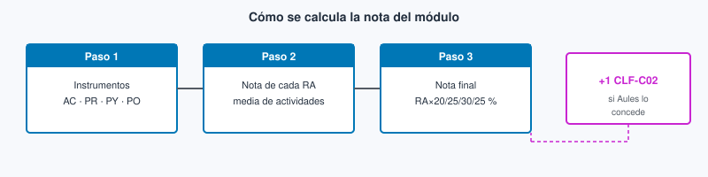
Ejemplo (simplificado): si en RA3 tienes prácticas de VPC/EC2 y un examen, se promedian (según lo que se indique en Aules) y ese resultado cuenta un 30 % de la nota del módulo. Suspender un RA no se compensa con otro.
+1 Cloud Practitioner¶
Si obtienes la certificación AWS Certified Cloud Practitioner (CLF-C02), puedes sumar +1 a la nota final del módulo.
- Con ese punto, la nota del módulo puede pasar de 10 (hasta 11).
- El plazo y cómo acreditarlo se publican en Aules.
- Ese +1 solo suma: no recupera un RA suspendido ni sustituye prácticas ni exámenes.
- Material de preparación: Certificación.
Peso de cada RA¶
pie showData
title Peso de cada RA en la nota del módulo
"RA1 — Fundamentos y facturación" : 20
"RA2 — Infra global y seguridad" : 25
"RA3 — Redes, cómputo y escalado" : 30
"RA4 — Almacenamiento, datos y arquitectura" : 25Instrumentos de evaluación (IE)¶
| Instrumento | Icono | Descripción | Escala |
|---|---|---|---|
| Actividad de clase | AC | Microevidencia de aula / Academy | 0–1 |
| Práctica | PR | Lab Academy o consola | 0–10 |
| Proyecto | PY | Entregable mayor con rúbrica | 0–30 |
| Prueba objetiva | PO | Examen escrito o en ordenador | 0–100 |
| Cloud Practitioner | +1 | Certificación CLF-C02 | +1 en la nota final (+1 Cloud Practitioner; plazo en Aules) |
Entrega de prácticas¶
Entrega de prácticas
Cómo entregar. Las prácticas y actividades evaluables se entregan en Aules, en el plazo del enunciado. Entrega un .md con los metadatos de la plantilla, el H1, el enunciado y el desarrollo. Las capturas van dentro del desarrollo, con ruta relativa img/.... Si hay imágenes, sube un ZIP (PR201.md + carpeta img/); si no, basta el .md. No uses PDF salvo que Aules lo pida. En cada tema verás el código de la práctica (por ejemplo PR201) y el nombre del fichero; la norma general está aquí para no repetirla en todos los temas. Las calificaciones se publican en Aules. La plantilla está en esta página y la misma la tendrás adjunta en Aules.
Plantilla Markdown¶
---
title: "PR201 — Título de la práctica"
author: "Nombre Apellidos"
email: "usuario@edu.gva.es"
curso: "2026-27"
modulo: "Introducción a la nube pública"
codigo: "PR201"
fecha: "YYYY-MM-DD"
---
# PR201 — Título de la práctica
## Enunciado
…
## Desarrollo
… texto …

Si hay capturas, la estructura del ZIP es:
PR201/
PR201.md
img/
ejemplo.png
Markdown y VS Code¶
- Guía de Markdown: tutorialmarkdown.com/guia
- Documentación de Visual Studio Code: code.visualstudio.com/docs
Resumen:
- El estudio libre no implica entregas libres: puedes leer todos los temas; las tareas y plazos los marca Aules y el calendario de evaluaciones.
- Cada actividad indica el RA que evalúa y su escala. Codificación: prefijo del IE + número de tema (ej.
AC102= actividad 02 del Tema 1;PR201= práctica 01 del Tema 2). - AWS Academy Cloud Foundations: trabajarás en la clase del curso. Los labs puntúan como PR del tema correspondiente.
- +1 Practitioner: +1 Cloud Practitioner. Material: Certificación.
Materiales¶
- Este sitio web de apuntes (guía del módulo).
- AWS Academy Cloud Foundations (acceso de alumnado según se indique en clase / Aules).
- Consola AWS de las cuentas de laboratorio.
- Ampliación: AWS Skill Builder — Cloud Practitioner Essentials.
- Guía oficial del examen: AWS Certified Cloud Practitioner (CLF-C02).
- Videotutoriales en cada tema (Profe Santos Cloud y otros).
- Certificación — página de preparación del CLF-C02 (notas por tema, autochecks estilo examen, serie Santos, tests, Skill Builder). Los quizzes de clase van en cada tema. Sobre el +1: +1 Cloud Practitioner.
- Editor de entregas: Visual Studio Code + Markdown.
Referencias¶
Fuentes utilizadas en la elaboración de estos apuntes:
- Salvador Serrano — apuntes Cloud (IES Severo Ochoa)
- Profe Santos Cloud (YouTube)
- Documentación y guías oficiales AWS (incluye Architecture Icons / diagramas de servicio)
- AWS Skill Builder y guía del examen CLF-C02
Contenidos del sitio¶
| Página | Contenido |
|---|---|
| Inicio | Evaluación y mapa del curso |
| Acceso | Academy, laboratorio, Skill Builder, activación y vouchers |
| Calendario | Ritmo quincenal T1–T8 (orientativo) |
| Temas 1–8 | Apuntes Foundations y puente Practitioner |
| Certificación | Página de preparación del CLF-C02 (notas y autocheck examen) |
| Soluciones | Cuestionario inicial y Autocheck por tema |
Acceso¶
Esta página explica cómo entrar a las plataformas del módulo: el curso en Academy, la consola de prácticas del Learner Lab y Skill Builder (incluida la activación y los vouchers de certificación). Cuando hayas entrado, sigue con Fundamentos de la nube AWS: allí está el mapa del módulo y las definiciones. La preparación del examen Cloud Practitioner (CLF, AWS Certified Cloud Practitioner, código CLF-C02) no se estudia aquí; está en Certificación.
Antes del Tema 1
Completa primero el acceso a Academy, el Learner Lab y, si el curso lo usa, Skill Builder. Sin consola del lab, el Tema 1 se queda en lectura; con Acceso listo, en la primera quincena ya puedes practicar.
Ten a mano tu correo institucional (el mismo en todos los pasos). Lee esto antes del Tema 1.
Tres sitios (no los mezcles)¶
Son tres puertas distintas. Si mezclas la cuenta o la URL, acabarás en un portal vacío o en un programa que no es el de la clase.
AWS Academy es el LMS (learning management system, sistema de gestión del aprendizaje) del curso: Canvas en awsacademy.instructure.com. Ahí viven los módulos de Cloud Foundations, los vídeos del LMS, las comprobaciones de conocimiento (knowledge checks) y el enlace al laboratorio. Entras con la cuenta Canvas Academy creada a partir de la invitación del profesor y tu correo institucional.
El Learner Lab es la cuenta de práctica con créditos limitados desde la que abres la consola de AWS. No es tu cuenta personal de AWS ni Skill Builder: el enlace sale desde el curso de Academy. Ahí haces los labs del módulo y las PR (prácticas evaluables del módulo, por ejemplo PR101) respetando región, créditos y limpieza al acabar.
AWS Skill Builder (skillbuilder.aws) es la plataforma de formación digital de AWS. Con la oferta del alumnado de Academy obtienes una suscripción de pago (cursos, laboratorios y exámenes de práctica oficiales). Entras con un AWS Builder ID ligado al mismo correo institucional con el que estás en Academy. En este módulo la usas sobre todo para prepararte hacia el CLF-C02 y, si completas los exámenes de práctica oficiales, para obtener vouchers.
| Sitio | URL | Para qué lo usas en el módulo | Con qué cuenta entras |
|---|---|---|---|
| AWS Academy (LMS Canvas) | awsacademy.instructure.com | Curso Cloud Foundations: módulos, vídeos, comprobaciones de conocimiento y acceso al lab | Cuenta Canvas Academy con el correo institucional de la invitación |
| Learner Lab / consola de prácticas | Enlace desde el curso Academy | Prácticas en consola con créditos limitados (labs del módulo y entregas) | Credenciales del lab que abre Academy (no es tu cuenta AWS personal) |
| AWS Skill Builder | skillbuilder.aws | Cursos digitales, exámenes de práctica oficiales y vouchers hacia la certificación | AWS Builder ID con el mismo correo institucional que en Academy |
No confundir con AWS Educate
Este módulo usa AWS Academy (instituto / educator). AWS Educate es otro programa. Si te registras en Educate por tu cuenta, no estarás en la clase del instituto.
1. Acceso al LMS Academy (invitación y login)¶
El profesor te invita por correo (institucional). Abre el mensaje y acepta la invitación con el enlace del correo. En el portal Academy elige Student Login (alumnado; no Educator Login). Entra con tu cuenta Canvas Academy o créala con ese mismo correo: si usas un Gmail distinto, quedarás fuera de la clase aunque Academy te deje registrarte.
Completa el registro (contraseña, zona horaria, términos) y comprueba que ves el curso del módulo en awsacademy.instructure.com. Si no llega el correo, revisa spam o la cuarentena del centro y avisa en tutoría o Aules para que se reenvíe la invitación.
Academy es tu aula digital del módulo: cada módulo de Cloud Foundations (Introducción al curso y Módulos 1–10) se publica ahí con el orden oficial. Estos apuntes te dan la prosa de estudio y las prácticas; el LMS marca qué lab abriste y qué comprobación de conocimiento completaste. Si un día no ves un módulo, casi siempre es porque aún no está liberado en la clase o porque estás con otra cuenta Canvas.


2. Entrar al Learner Lab desde el curso¶
En el LMS de Academy, dentro de tu curso Foundations, abre Modules (o la sección equivalente) y sigue el orden del módulo (lectura, vídeo, comprobación de conocimiento). Cuando el tema lo pida, entra en Learner Lab. El acceso a la consola sale desde aquí, no desde skillbuilder.aws.
Pulsa Start Lab y espera unos minutos a que el entorno arranque. Cuando el círculo junto a AWS pase a verde, pulsa el enlace AWS para abrir la consola de gestión en otra pestaña. Respeta las normas del lab: créditos limitados, región del enunciado y terminar recursos al acabar (End Lab cuando cierres la sesión de práctica). Una instancia EC2 (Elastic Compute Cloud, servidores virtuales de AWS) o un ASG (Auto Scaling group, grupo de Auto Scaling) olvidados siguen consumiendo créditos aunque hayas cerrado la pestaña.
Los apuntes de este sitio van junto a Academy: no reemplazan los módulos ni los labs del LMS. Si el enunciado del lab y el apunte discrepan en un clic, manda el enunciado del LMS.
En la primera quincena basta con Start Lab, abrir la consola en verde y orientarte (región, buscador de servicios) sin crear recursos de pago. Más adelante, cuando un tema pida un lab concreto (por ejemplo bases de datos o escalado), vuelves a entrar desde el mismo curso: no hace falta un segundo registro. Cada alumno tiene su propio presupuesto de laboratorio: si limpias al acabar (End Lab, terminar instancias, bajar a 0 el mínimo del grupo de Auto Scaling), evitas que se te agoten tus créditos antes de terminar los labs del curso.


3. Skill Builder (activación desde Academy)¶
AWS Skill Builder es otra plataforma: no es el LMS de Academy ni la consola del Learner Lab. Sirve para formación digital y para prepararte hacia el CLF-C02 (y otros exámenes). En este módulo la activas desde el curso de Academy, no creando una cuenta suelta con un correo personal.
Cómo se activa la oferta¶
Entra en el curso Foundations en Academy. En el menú Módulos, abre el apartado AWS T&C Resources (Terms and Conditions / recursos de términos y condiciones). Ahí está el enlace de activación de Skill Builder y, normalmente, un PDF de preguntas frecuentes sobre la oferta. Sigue ese enlace: te pedirán una encuesta corta y el consentimiento para compartir tu nombre con Skill Builder.
Después llegan uno, dos o tres correos; no siempre el mismo día. La activación tarda entre 3 y 14 días laborables. Es normal que al día siguiente aún no te haya llegado nada: espera ese plazo antes de alarmarte, y avisa en tutoría si pasados los 14 días laborables no tienes acceso.
Builder ID y primer acceso¶
Cuando la oferta esté lista, entra en skillbuilder.aws con un AWS Builder ID creado con el mismo correo institucional con el que estás en Academy. La contraseña del Builder ID la eliges tú: no tiene por qué ser la del correo del centro. En el alta llega un código de verificación a ese correo.
La primera vez te pide aceptar el programa y completar el perfil; los campos opcionales se pueden dejar en blanco. Si te creas un Builder ID con un correo personal (Gmail, Hotmail…), en Skill Builder solo ves el contenido gratuito: la suscripción de Academy va ligada al correo institucional con el que activaste la oferta.
La sesión de Skill Builder se cierra sola con frecuencia. Si te sale un error de suscripción, vuelve a entrar desde Learn (aprender) en el portal.
AWS Academy · Skill Builder. Vídeo en YouTube (~16 min).
Vídeo: Profe Santos Cloud (YouTube). Qué mirar: dónde está el enlace de activación en Academy, el alta del Builder ID con el correo institucional y cómo comprobar que la suscripción está activa.


Caducidad de la oferta
La suscripción dura 12 meses desde la activación. Ese plazo es la vigencia del beneficio, no el tiempo de espera del alta (el alta son los 3–14 días laborables de arriba). Si el curso usará Skill Builder, conviene activarlo en las primeras quincenas.
4. Vouchers de certificación¶
Un voucher es un código que cubre el precio del examen de certificación. Con la suscripción de Academy puedes conseguir hasta 4 vouchers: uno por cada examen de práctica oficial (Official Practice Exam) asignado que completes en Skill Builder. Para encontrarlos, busca Official Practice Exam en Skill Builder.
Cubren los niveles fundamental (Foundational: Cloud Practitioner y AI Practitioner) y asociado (Associate: Solutions Architect, Developer, CloudOps Engineer —antes SysOps Administrator—, Data Engineer y Machine Learning Engineer). No cubren los niveles profesional (Professional) ni especialidad (Specialty).
El examen de práctica simula el real. En Cloud Practitioner son 65 preguntas en 90 minutos, y el aprobado está en 700 sobre 1000. Puedes repetirlo. Al terminar te explica por qué cada respuesta es correcta o incorrecta. Un consejo práctico (no un requisito oficial del voucher): llega a 700 en el de práctica antes de contar con el voucher para el examen real.
El voucher llega por correo en un plazo de hasta 14 días laborables y vale 6 meses. El examen real se hace en un centro Pearson VUE o en línea desde casa. Para buscar un centro presencial usa el buscador Locate a Test Center de Pearson VUE.
En este módulo el objetivo natural es Cloud Practitioner (CLF-C02). La preparación (serie, tests, orden sugerido) está en Certificación; aquí solo el camino para activar Skill Builder y obtener el voucher.
No hace falta acumular los cuatro vouchers en este curso: con uno bien usado para el CLF-C02 ya cumples el camino natural del módulo. Si más adelante te interesa un Associate, sirve el mismo mecanismo del examen de práctica oficial, siempre dentro de los niveles que cubre la oferta.
AWS Academy · SB · Voucher. Vídeo en YouTube (~11 min).
Vídeo: Profe Santos Cloud (YouTube). Qué mirar: dónde está el examen de práctica oficial, cómo se lanza y cuándo llega el voucher.
Si quieres el detalle en inglés de la oferta, las preguntas frecuentes oficiales de Skill Builder / Academy amplían lo de esta página.
5. Problemas frecuentes¶
| Síntoma | Qué revisar |
|---|---|
| No llega la invitación de Academy | Spam o filtros del centro; pedir reenvío; confirmar el email exacto de la invitación. |
| No ves el curso en Canvas | Estás con otro correo; cierra sesión y entra con el institucional de la invitación. |
| Te has registrado en Educate | No es Academy. Usa el enlace de la invitación del profesor. |
| Lab en rojo o sin créditos | Puede ser que se hayan agotado tus créditos, que la clase haya finalizado o que no hayas iniciado el lab desde el curso; avisa en tutoría. |
| Skill Builder no abre tras confirmar | Puede estar en provisión (días laborables, no meses); mismo email Academy y Builder ID. |
| Error de suscripción en Skill Builder | Cierra sesión y vuelve a entrar desde Learn; la sesión se cierra sola con frecuencia. |
| Builder ID con Gmail y sin cursos de pago | La suscripción de Academy va con el correo institucional; con correo personal solo ves el contenido gratuito. |
| Confundes Skill Builder y la consola del lab | La consola del lab se abre siempre desde el curso de Academy; Skill Builder está en skillbuilder.aws. |
| Quieres el voucher del CLF | Completa el Official Practice Exam en Skill Builder; ver Vouchers. |
6. Soporte oficial¶
- Acceso LMS Academy: awsacademy.instructure.com (ayuda o soporte desde la propia plataforma cuando esté disponible).
- Información general del programa: AWS Academy · preguntas frecuentes (FAQ) de Academy.
- Skill Builder: skillbuilder.aws. Builder ID: Sign in with AWS Builder ID.
- Preguntas frecuentes de la suscripción de Skill Builder para Academy (en inglés).
- Si el bloqueo es de clase del instituto (invitación, lab de la clase): escribe en Aules o coméntalo en la tutoría quincenal antes de abrir tickets genéricos.
Cuando tengas Academy y (si aplica) Skill Builder en marcha, pasa al Tema 1 — Fundamentos de la nube AWS: ahí empieza la teoría del módulo. La preparación del examen Cloud Practitioner está en Certificación; el voucher, en Vouchers de certificación.
Calendario del curso¶
El módulo suma 96 h de trabajo. En semipresencial hay una tutoría colectiva quincenal (~1 h) y el resto es trabajo autónomo (apuntes, vídeos, labs). La 1.ª evaluación cubre los Temas 1–4; la 2.ª, los Temas 5–8. El módulo acaba antes de la formación en empresa (FE), que empieza el 1 de marzo de 2027.
Puedes estudiar en esta web lo que ya esté publicado. Las entregas y los plazos los marca Aules.
Tutorías quincenales (orientativo)¶
Primera tutoría prevista: 22-sep-2026.
| Quincena | Fecha tutoría (aprox.) | Tema | Evaluación |
|---|---|---|---|
| Q1 | 22-sep-2026 | T1 (parte 1): Acceso, conceptos y modelos | 1.ª |
| Q2 | 6-oct-2026 | T1 (parte 2): facturación e infraestructura global | 1.ª |
| Q3 | 20-oct-2026 | T2 Seguridad e IAM | 1.ª |
| Q4 | 3-nov-2026 | T3 Redes y VPC | 1.ª |
| Q5 | 17-nov-2026 | T4 Cómputo | 1.ª |
| Q6 | 1-dic-2026 | Cierre de la 1.ª evaluación, ventana de la PO1 (prueba objetiva de la 1.ª evaluación) y arranque del T5 | 1.ª y 2.ª |
| Q7 | 15-dic-2026 | T5 Almacenamiento | 2.ª |
| — | 29-dic-2026 | No lectiva prevista (vacaciones) | — |
| Q8 | 12-ene-2027 | T6 Bases de datos | 2.ª |
| Q9 | 26-ene-2027 | T7 Well-Architected | 2.ª |
| Q10 | 9-feb-2027 | T8 Escalado y CloudWatch | 2.ª |
| Q11 | 23-feb-2027 | Repaso, PO2 (prueba objetiva de la 2.ª evaluación) y cierre de la 2.ª | 2.ª |
Hitos¶
| Hito | Ventana orientativa |
|---|---|
| Arranque (Acceso y Tema 1) | ~ 22-sep-2026 |
| PO1 (prueba objetiva de la 1.ª evaluación; Temas 1–4) | ~ finales de noviembre / principios de diciembre 2026 |
| Inicio 2.ª evaluación (Temas 5–8) | ~ 2.ª semana de diciembre |
| PO2 (prueba objetiva de la 2.ª evaluación) y cierre del módulo | ~ 2.ª quincena de febrero 2027 |
| FE del ciclo | 1-mar-2027 |
Si preparas el examen Cloud Practitioner, el material está en Certificación.
Vuelve al Inicio para la evaluación y el mapa de temas.
Fechas orientativas
Estas fechas ayudan a situar el ritmo. Las fechas de los exámenes de cada evaluación todavía no las ha fijado el centro, así que pueden variar. Si el centro mueve un festivo o cambia una tutoría, manda lo que digan Aules y la propia sesión.
Tema 1. Fundamentos de la nube AWS¶
En este tema construimos el mapa que el resto del módulo da por sentado: qué es la nube pública, por qué una aplicación web deja el CPD propio, cómo se paga, y dónde viven realmente los recursos (región, zona de disponibilidad, consola).
El núcleo es AWS Academy Cloud Foundations: Introducción al curso y módulos 1–3. La ampliación apunta al vocabulario del examen CLF-C02 (AWS Certified Cloud Practitioner), sin convertir el tema en un plan de migración de empresa.
Primera clase
Empieza por el cuestionario inicial. No hace falta haber leído el tema entero: sirve para ver qué traes (VPS vs nube, IaaS/PaaS, región y factura) antes de Foundations.
Cómo leerlo
No hace falta memorizar el catálogo de servicios. Sí hace falta poder explicar un caso (tienda online, API de un proyecto de DAW, front estático) eligiendo modelo, región y una estimación de coste razonable. Los términos marcados enlazan al glosario al final del tema.
En semipresencial la tutoría (~1 h) no «explica el tema entero»: presenta el mapa, señala los labs y resuelve dudas del bloque anterior. El grueso es lectura + práctica autónomas. Si solo lees las tablas, el autocheck se cae; si solo lees los párrafos y saltas las prácticas de consola, el RA2 c) también.
Propuesta didáctica¶
Trabajamos el RA1 y el arranque del RA2 del módulo Introducción a la Nube Pública:
RA1. Comprende los fundamentos de la computación en la nube, sus ventajas frente a sistemas tradicionales, el marco de adopción, los principios de migración y los aspectos clave de facturación, como estimación y optimización de costos.
RA2. Identifica los componentes clave de la infraestructura global de la nube, diferenciando servicios principales, regiones, zonas de disponibilidad y aplicando medidas básicas de seguridad como el modelo de responsabilidad compartida, gestión de accesos y protección de datos.
Criterios de evaluación¶
RA1
- a) Se ha comprendido los conceptos fundamentales de la computación en la nube.
- b) Se ha demostrado la capacidad para explicar las ventajas de la nube frente a sistemas tradicionales.
- c) Se ha participado en actividades relacionadas con el ecosistema de servicios en la nube.
- d) Se han identificado los principios básicos de la facturación y costos en la nube.
- e) Se ha hecho uso correcto de herramientas para estimar y gestionar presupuestos.
- f) Se ha participado en actividades prácticas sobre gestión de costos.
RA2 (en este tema: infraestructura y categorías de servicio; IAM queda en el Tema 2)
- a) Se ha adquirido conocimiento de los componentes de una infraestructura global en la nube.
- b) Se ha demostrado la capacidad para explorar y describir las principales categorías de servicios disponibles.
- c) Se ha realizado una evaluación del uso adecuado de servicios básicos en ejercicios prácticos.
Contenidos¶
- Computación en la nube frente a on-premises; acceso por consola, CLI y API.
- Modelos de servicio (IaaS, PaaS, SaaS) y de despliegue (pública, privada, híbrida, multicloud).
- Ventajas, límites y trade-offs (agilidad, coste variable, dependencia del proveedor).
- Adopción y migración: marco CAF y estrategias (7 R) a nivel de reconocimiento.
- Economía: CAPEX / OPEX, TCO, dimensiones de precio, calculadora y presupuestos.
- Infraestructura global: regiones, zonas de disponibilidad, edge; navegación por la consola.
Programación de aula (orientativa, quincenas)¶
En INP la sesión de centro es tutoría quincenal (~1 h); el grueso es autónomo. El Tema 1 ocupa dos quincenas.
| Quincena | En tutoría | Trabajo autónomo / evidencias |
|---|---|---|
| Q1 | Acceso + mapa del tema + cuestionario | Lectura conceptos/modelos; PR101, PR102 |
| Q2 | Dudas Q1; facturación e infra global | PR103, PR104; Autocheck del tema |
Cuestionario inicial¶
Antes de Foundations — responde con lo que sepas
- ¿En qué se parece y en qué no un VPS barato a la nube pública que estudia este módulo?
- Si despliegas una API Node y un MySQL, ¿quién aplica los parches de seguridad del SO en IaaS frente a un motor PaaS/gestionable?
- ¿Por qué importa la región además de «que la consola abra»?
- Nombra dos partidas de coste distintas del precio «de la VM» (pista: salida de datos, personal, facilities…).
- ¿Qué pasa con la factura si dejas una instancia de lab encendida el fin de semana?
Este cuestionario es solo para ti: te ayuda a ver qué dominas ya y qué te falta antes o mientras lees el tema. No se entrega en Aules; respóndelo con lo que sepas y, cuando quieras contrastar, abre el bloque Soluciones (autoevaluación) debajo o el índice en Soluciones.
Soluciones (autoevaluación)
-
Se parecen en que alquilas capacidad por red; se diferencian en que la nube pública ofrece más servicios gestionados, regiones/AZ y facturación por uso medido, no solo «una VM remota».
-
En IaaS (EC2) tú aplicas los parches del SO; en un motor PaaS/gestionable (p. ej. RDS) el proveedor mantiene y actualiza el motor y tú sigues con datos, usuarios y configuración.
-
La región fija latencia, soberanía de datos y qué servicios/precios aplican; no basta con que la consola abra.
-
Ejemplos: egress (salida de datos), personal y mantenimiento, almacenamiento, balanceadores, facilities on-prem si comparas TCO…
-
Sigue facturando el tiempo encendido (y lo asociado); Free Tier no es «gratis ilimitado».
Bloque Foundations (Introducción al curso y M1–M3)¶
Qué es «nube» cuando desarrollas web¶
Computación en la nube es pedir capacidad de TI (tecnologías de la información) —CPU, disco, red, bases de datos, identidad— a un proveedor, por red, bajo demanda y medida. No montas el CPD (centro de proceso de datos): no compras el rack, ni el SAI, ni negocias el caudal de la sala. Creas un recurso desde la consola o desde tu código, lo usas y, si lo apagas bien, dejas de pagar por él.
On-premises significa que el hardware y gran parte del mantenimiento viven en instalaciones de la organización: el aula, el CPD del cliente o un hosting «caja en un rack» que alguien tiene que alimentar y aplicar parches de seguridad. En ese modelo dimensionas para el pico (Black Friday, entrega del proyecto intermodular, campaña). El resto del año esa capacidad duerme y sigue costando: electricidad, amortización, parches, espacio. En nube pública el coste se acerca al uso real, a cambio de aprender a apagar, etiquetar y no dejar un lab encendido el fin de semana.
Ventajas (nube pública, a ojo de Foundations)
- Escalabilidad: más o menos CPU, disco o balanceadores sin comprar rack.
- Agilidad: levantar un laboratorio o una API de prueba en minutos.
- Coste variable: pagas por uso (ojo: también te castiga el olvido).
- Menos mantenimiento de CPD: temperatura, SAI y cableado los asume el proveedor.
Desventajas / trade-offs
- Una mala arquitectura o un lab sin apagar dispara la factura.
- Hace falta gente que conozca la plataforma (no es «gratis de mantenimiento»).
- Datos en máquinas que no son tuyas: región, normativa y cifrado importan.
La frontera no siempre es nítida. Un VPS (Virtual Private Server, servidor privado virtual) barato de un hosting clásico puede parecer nube porque lo pides por panel y te dan una máquina remota. Aun así, muchas veces falta lo que este módulo llama nube pública: elasticidad real (subir y bajar capacidad en minutos), API de inventario (crear y borrar recursos desde código) y facturación por uso medido de muchos servicios, no solo «una VM al mes». Este módulo se centra en el modelo AWS: API, regiones, factura medible y catálogo de servicios. Si tu referencia mental es solo el panel de un hosting compartido, conviene recalibrar antes del Tema 3.
Una API Node o Java en el aula vive en un PC. En AWS esa misma API puede ser una máquina virtual (tú aplicas los parches de seguridad del sistema operativo, SO), un contenedor (empaquetas la app y el runtime) o una función que se ejecuta al llegar una petición HTTP. Las tres son «nube». No son el mismo trabajo para ti: cambia quién aplica los parches del SO y cómo pagas (hora de VM frente a invocación).
Mini-caso. Un proyecto de DAW con API Express y front React: en el aula todo corre en un portátil. En AWS el front puede ir a objetos estáticos (S3 + CDN), la API a una VM (EC2) o a funciones, y la base a un servicio gestionado (RDS). El «mismo» proyecto tiene tres facturas y tres límites de administración distintos; el error es tratarlos como un solo «servidor en la nube».
El ecosistema AWS (mapa corto)¶
Antes de abrir la consola conviene situar cuatro piezas que se repiten en todo el módulo. No son servicios concretos (EC2, S3…): son el marco donde esos servicios viven. Un desarrollador web elige en qué cuenta, en qué región y con qué herramienta (clic, CLI o SDK) crea un recurso; si mezclas esas piezas, el lab «funciona» pero la factura o la latencia no.
| Pieza | Qué es | Por qué te importa en DAW |
|---|---|---|
| Cuenta | Contenedor de factura e identidades | Cada lab tiene dueño y coste |
| Región | Área geográfica con varios centros de datos | Latencia y residencia del dato |
| Servicio | Producto (EC2, S3, IAM…) | Eliges uno por caso de uso, no «AWS en abstracto» |
| Consola / CLI / SDK | Tres formas de hablar con la misma API | La consola enseña; el SDK es lo que usará tu código |
En un despliegue real el orden importa: primero la cuenta y la región (en Academy, la que permite el Learner Lab); después el servicio; al final automatizas con CLI o SDK. Crear un bucket «porque el tutorial lo hace en us-east-1» mientras el resto del grupo trabaja en Europa es un clásico que mezcla latencia, precio y, a veces, residencia del dato. Más adelante en este tema ampliamos consola, CLI y SDK con ejemplos concretos.

Categorías que irás viendo: cómputo, almacenamiento, bases de datos, red, seguridad, gestión, facturación. No memorices doscientas marcas; sitúa en qué cajón está cada servicio cuando lo uses en un lab.

Características (cuando sí es nube)¶
Cuando Foundations habla de nube pública, suele apuntar a cinco rasgos. No son eslóganes: sirven para distinguir un CPD clásico de lo que vas a practicar en el lab.
Bajo demanda. Pides capacidad cuando la necesitas. No abres un ticket de compras del centro para un servidor de prueba: creas la instancia o el bucket y, si el lab lo permite, empiezas en minutos.
Acceso por red. Llegas por HTTPS, API o consola. No hace falta «estar en el CPD» ni enchufar un cable al rack. Eso es lo que permite estudiar semipresencial con el Learner Lab desde casa.
Recursos agrupados (multitenancy). El hardware físico es del proveedor; muchos clientes comparten los mismos centros de datos, aislados lógicamente. Por eso el precio baja respecto a comprar torres «por si acaso», y por eso la seguridad de tu cuenta (IAM, red) importa tanto: el aislamiento no es magia, es configuración.
Elasticidad. Subes o bajas capacidad en minutos, no en plazos de pedido de hardware. En clase lo notarás cuando montas y borras un lab; en producción lo verás con Auto Scaling (Tema 8).
Servicio medido. Hay métrica (horas, GB, peticiones). Lo apagado no debería facturarse igual que lo encendido. Si tu «servidor» solo se puede pedir con un ticket de tres semanas y no hay factura por hora, no estás usando el modelo de nube pública que estudia este módulo: estás en un CPD clásico con otra etiqueta. La elasticidad sin medición es marketing.
Modelos de servicio: ¿hasta dónde operas tú?¶
Los modelos IaaS (Infrastructure as a Service, infraestructura como servicio), PaaS (Platform as a Service, plataforma como servicio) y SaaS (Software as a Service, software como servicio) no clasifican «lo moderno» frente a «lo antiguo». Clasifican hasta dónde llega lo que gestionas tú en la pila: sistema operativo, entorno de ejecución, aplicación. Para una API web la diferencia práctica es si mantienes y actualizas Node o Java y nginx, si solo despliegas código o si ni siquiera hospedas la app. La diferencia está en quién mantiene y actualiza cada capa: sistema operativo, entorno de ejecución, servidor web y tu código. Cuanto más mantienes tú, más control tienes, pero también más trabajo de administración.
En un equipo DAW esto se nota el día del incidente: en IaaS alguien entra por SSH y mira logs del SO; en PaaS miras logs de plataforma y haces redeploy; en SaaS abres un ticket al proveedor del correo o del CRM. Ninguno es «incorrecto»: cambia el contrato operativo.
IaaS — Infrastructure as a Service¶
Qué es en este caso. Alquilas capacidad de cómputo, disco y red virtual. Tú instalas el sistema operativo, el runtime (Node, JVM, PHP…), el servidor web y la aplicación. El proveedor se ocupa del hardware y del hipervisor. El ejemplo típico en AWS es una instancia EC2 con tu API.
En la práctica. Controlas el entorno: puedes instalar casi cualquier stack y depurar como en un VPS, porque entras al sistema operativo. A cambio, los parches del SO, el hardening, los backups de lo que corra en disco y buena parte de la alta disponibilidad pasan a ser tuyos. Si dejas la instancia encendida, la cuenta sigue facturando. Un Docker en EC2 sigue siendo IaaS a efectos de parches del SO: el sistema de la máquina es tuyo.
PaaS — Platform as a Service¶
Qué es en este caso. El proveedor gestiona el sistema operativo y buena parte de la plataforma de ejecución. Tú aportas código y datos. Un motor de base de datos gestionado (RDS) es el ejemplo que más verás en este módulo: el proveedor mantiene y actualiza el motor; tú sigues con esquemas, usuarios y consultas.
En la práctica. Reduces el trabajo de administración diario —el proveedor aplica parches del SO y mantiene la plataforma—, pero también pierdes control fino del entorno: no eliges cada paquete del sistema como en una EC2. Ese trato merece la pena cuando aceptas las restricciones de la plataforma a cambio de no administrar nginx ni el runtime a mano. No llames «PaaS» a cualquier cosa «en la nube»: EC2 con tu stack no lo es.
SaaS — Software as a Service¶
Qué es en este caso. Usas una aplicación completa por red: correo, CRM, wiki gestionada. Configuras y consumes; no hosteas la pila.
En la práctica. En un proyecto DAW el SaaS suele ser una dependencia —login de terceros, correo del centro, pasarela de pagos—, no el sitio donde despliegas tu API. Confundir «uso el correo del centro» con «mi API corre en AWS» es un error típico de examen y de conversación con el cliente: en un caso consumes una app ajena; en el otro operas tu código.

| Modelo | Tú gestionas | El proveedor gestiona | Ejemplo web |
|---|---|---|---|
| IaaS | SO, runtime, despliegue, datos | Hardware, hipervisor | EC2 con tu WAR/JAR o API Node |
| PaaS | Código y datos | SO y plataforma | RDS; entorno de despliegue gestionado |
| SaaS | Uso y configuración | Toda la pila | Correo o CRM en el navegador |
Subir de IaaS a SaaS reduce el trabajo de administración y reduce el control. Un front estático en almacenamiento de objetos (S3) no es IaaS: no hay SO al que aplicar parches. Una API con estado y un cron pesado tampoco es candidata automática a una función de pocos minutos de ejecución.
Antes / después (proyecto DAW). Antes sueles tener un VPS alquilado donde instalas nginx, Node y MySQL y renuevas certificados a mano (cerca de IaaS). Después puedes dejar el front en hosting estático u objetos, la API en un entorno PaaS o en funciones, y la base en RDS. Ganas tiempo de desarrollo porque el proveedor asume más trabajo de administración; a cambio pierdes el «entro por SSH y lo arreglo todo». Esa pérdida de control es una decisión consciente, no un fallo del diseño.
| Examen CLF | Clase DAW / empresa |
|---|---|
| Reconocer si un escenario es IaaS, PaaS o SaaS (quién mantiene y actualiza cada capa) | Justificar el modelo con tiempo de administración, control y riesgo del incidente |
| Evitar marcar «todo es PaaS porque está en la nube» | En el lab: EC2 = IaaS; RDS = plataforma gestionada; correo del centro = SaaS típico |
Errores frecuentes (modelos)¶
- Llamar «PaaS» a cualquier cosa «en la nube» (EC2 con Docker sigue siendo IaaS a efectos de parches del SO).
- Confundir SaaS (usas el correo del centro) con desplegar tu API en AWS.
- Elegir el modelo por moda («todo serverless») sin mirar estado, tiempo de ejecución y dependencias.
Modelos de despliegue¶
Además del «qué gestionas» (IaaS / PaaS / SaaS) está el «dónde vive la capacidad»: ¿en un proveedor de internet, en una infraestructura dedicada solo a tu organización, o en una mezcla? Confundir híbrida con multicloud es un error típico de examen y de diseño: la primera mezcla on-prem (o privada) con pública; la segunda usa varias nubes públicas a la vez.
Nube pública¶
Qué es en este caso. La capacidad la ofrece un proveedor por internet. Este módulo trabaja casi siempre aquí: AWS.
En la práctica. En el Learner Lab creas recursos, consumes créditos por uso y trabajas en la región que permite el lab. La agilidad viene de levantar una API o un bucket en minutos y de tener un catálogo amplio de servicios; el límite es que dependes del proveedor (precios, cuotas, cambios de consola) y de que hace falta aprender la plataforma.
Nube privada¶
Qué es en este caso. La infraestructura (centros de datos, cómputo, red) está dedicada a una organización, a veces con software tipo OpenStack. Ganas control del recurso porque no compartes el host con terceros desconocidos.
En la práctica. Suele implicar más CAPEX —compras o amortizas hardware— y personal que sepa operar esa plataforma. En este módulo solo la nombramos para no confundir «nube» con «marca AWS». No se instala ni se practica.
Nube híbrida¶
Qué es en este caso. Combina on-premises (o privada) y nube pública. Por ejemplo, la base de datos sensible se queda en el CPD del cliente y el front o el pico de tráfico salen a AWS.
En la práctica. Aparece en empresas e institutos con legado: no todo se puede (o se quiere) sacar a la nube de golpe. La red y la identidad se complican —VPN, directorios, quién autentica a quién—. No es «un poco de cada proveedor cloud»: eso sería multicloud.
Multicloud¶
Qué es en este caso. Usas varias nubes públicas a la vez (por ejemplo AWS y otro proveedor).
En la práctica. Puedes repartir riesgo o elegir el servicio más barato de cada proveedor, pero tienes que conocer más de una plataforma y el mantenimiento (identidades, redes, facturas) se complica. Este módulo se centra en AWS; multicloud suele ser decisión de empresa, no de un lab de Foundations.
| Tipo | Idea | Cuándo aparece en un proyecto |
|---|---|---|
| Pública | Capacidad de un proveedor, internet | Este módulo (AWS) |
| Privada | Infraestructura dedicada a una organización | Stack interno; fuera del alcance práctico del módulo |
| Híbrida | On-prem (o privada) + pública | Datos sensibles en casa, pico en AWS |
| Multicloud | Varias nubes públicas | AWS + otro proveedor; más trabajo de administración |
Existen otros proveedores públicos (Azure, Google Cloud…): aquí el hilo práctico es AWS.
| Examen CLF | Clase DAW / empresa |
|---|---|
| Distinguir híbrida (on-prem + pública) de multicloud (varias públicas) | En un proyecto de DAW o un encargo: ¿el cliente deja la BD en su CPD? → híbrida, no «multicloud» |
| Reconocer que este curso es nube pública AWS | No montar OpenStack en el lab «para practicar privada» |
Ventajas frente a sistemas tradicionales (con contras)¶
La nube no es «gratis» ni «siempre más barata». Es un cambio de inversión fija (CAPEX) a gasto ligado al uso (OPEX), con ventajas de velocidad y alcance global… y con contras: dependencia del proveedor, curva de aprendizaje y facturas si olvidas apagar. El ejemplo mental es una tienda con pico de un fin de semana: on-premises compras para el pico; en nube puedes crecer el cómputo esas horas —si lo has diseñado— y bajar después.
| Ventaja | Causa | Trade-off |
|---|---|---|
| Coste variable (OPEX) frente a CAPEX | Pagas mientras el recurso existe | Una instancia 24/7 puede salir más cara que un torre ya pagado |
| Economías de escala | El proveedor compra hardware a otro precio | Precios y cuotas los marca él |
| Dejar de comprar «por si acaso» | Elasticidad | Hay que diseñar el apagado y el autoescalado (Temas 4 y 8) |
| Agilidad | API en minutos | Curva de aprendizaje y facturas sorpresa |
| Alcance global | Muchas regiones | Cumplimiento: el dato tiene jurisdicción |
| Alta disponibilidad | Varias zonas de disponibilidad | Cuesta más que una sola VM |
La frase «la nube es más barata» es falsa como ley. Es más elástica. El ahorro aparece si mides y apagas; si no, pagas el pico y el olvido.
Para una API de clase, el beneficio inmediato suele ser agilidad (montar y borrar el lab en la tutoría), no «ahorrar dinero respecto al PC del aula». El beneficio de alta disponibilidad solo aparece si despliegas en más de una AZ: lo verás en redes, bases de datos y Well-Architected.
Adopción y migración¶
Migrar no es «subir un zip al bucket». Hay un marco de adopción —negocio, personas, gobierno, plataforma, seguridad, operaciones— y estrategias de movimiento. El CAF (Cloud Adoption Framework) en Foundations y en el CLF es un mapa de perspectivas, no un proyecto que entregues. Te sirve para no reducir «migrar» a un único ticket de infra: sin gobierno ni seguridad, el lift-and-shift solo mueve el problema a otra factura.
Las 7 R son etiquetas para cómo mueves una carga. No hace falta dirigir un programa corporativo, pero sí reconocer si alguien está haciendo lift-and-shift o rediseñando la app.
| R | Idea | Ejemplo DAW |
|---|---|---|
| Rehost | Lift-and-shift | La misma VM a EC2 |
| Replatform | Cambiar poco la plataforma | MySQL en servidor → RDS |
| Repurchase | Pasarse a SaaS | Wiki propia → servicio gestionado |
| Refactor | Rediseñar para nube | Monolito → API + funciones + objetos |
| Retire | Apagar | Servicio que ya no se usa |
| Retain | Dejar on-prem de momento | Legado con licencia rara |
| Relocate | Mover el hipervisor con poco cambio | Entorno virtualizado «tal cual» |
En este módulo identificas la R y el porqué. No montas un programa de migración corporativo.
Decisión típica DAW: monolito PHP + MySQL¶
Imagina un monolito PHP con MySQL en un hosting compartido. Hay al menos tres caminos razonables; no son «mejores» en abstracto: cambian riesgo, tiempo y trabajo de administración.
Rehost¶
Qué es en este caso. Llevas PHP y MySQL tal cual a una máquina EC2: misma app, mismo motor, otro sitio donde corre.
En la práctica. Es el camino más rápido: en pocas horas puedes tener la web respondiendo porque apenas cambias la app. A cambio sigues aplicando los parches de seguridad del sistema operativo, haciendo backups a mano (o con scripts tuyos) y, si no diseñas más, dependiendo de una sola máquina. Si esa instancia cae, cae el servicio. Sirve para probar en el lab o para un lift-and-shift urgente; no resuelve sola el mantenimiento a medio plazo.
Replatform¶
Qué es en este caso. Dejas PHP en EC2 (o en un entorno similar) y mueves la base de datos a RDS: cambias poco el código y ganas plataforma gestionada en el dato.
En la práctica. Con poco cambio de aplicación obtienes backups automáticos del motor y, si lo configuras, Multi-AZ: el proveedor mantiene una réplica en otra zona de disponibilidad y, si falla la primaria, la conmutación es automática y suele completarse en el orden de uno o dos minutos (no es «instantánea» ni garantiza cero impacto en las conexiones abiertas). Es un paso habitual en proyectos DAW cuando la base es el cuello de mantenimiento.
Refactor¶
Qué es en este caso. Rediseñas: API (por ejemplo con funciones), front en S3 y base gestionada o NoSQL según el caso.
En la práctica. Es otro proyecto, no el primer lab de Foundations. Encajas mejor con servicios gestionados y con un escalado más fino, pero pagas tiempo de desarrollo, pruebas y un modelo mental distinto: estado de la app, permisos IAM, cold start de las funciones, etc. El examen CLF te pide la etiqueta; en clase o en la empresa justificas el porqué con riesgo, coste y calendario.
| Examen CLF | Clase DAW / empresa |
|---|---|
| Elegir la R correcta (rehost, replatform, refactor…) ante un enunciado corto | Explicar por qué esa R: tiempo, riesgo, backups, Multi-AZ, deuda técnica |
| No hace falta diseñar el programa CAF completo | En el módulo: reconocer la etiqueta; en el proyecto de DAW o en un encargo: acotar alcance (replatform de BD ≠ reescribir todo) |
Economía y facturación¶
CAPEX (capital expenditure, gasto de capital) es lo que inviertes antes (servidores, SAI, licencias perpetuas). OPEX (operational expenditure, gasto operativo) es lo que pagas de forma continua por uso o suscripción. TCO (Total cost of ownership, coste total de propiedad) es el coste total de poseer y mantener el sistema: no compares solo el precio de la VM; incluye electricidad, personal, red y el coste de esperar a ampliar.

Un error típico de proyecto escolar: comparar el €/mes de una instancia pequeña con «gratis en el aula» y concluir que la nube es cara. El aula ya está pagada por el centro; la nube te cobra el lab que dejas encendido. Otro error: olvidar que el tiempo de un desarrollador montando el CPD también es TCO.
Qué suele aparecer en la factura¶
- Tiempo de cómputo: horas de instancia o invocaciones de función.
- Almacenamiento: GB-mes y, a veces, peticiones.
- Salida de datos (egress). La entrada suele ser barata o nula; sacar GB hacia internet o hacia otra región duele cuando sirves vídeos o descargas grandes. Un SPA pequeño casi no se nota.
- Licencias incluidas frente a BYOL (bring your own license), cuando aplica.
En una API de prácticas el coste dominante suele ser cómputo encendido (o el olvido), no el GB del front. Por eso la AWS Pricing Calculator pide supuestos explícitos: horas/semana, GB almacenados, GB de salida. Abre ese enlace directo para añadir servicios sin cuenta. Si alguna vez entras por la portada de calculator.aws, no pulses el botón naranja Sign in for personalized estimates (pide una cuenta de AWS): usa Create estimate (Crear una estimación). Con Academy no tienes cuenta propia para esa pantalla, y para estimar no la necesitas.
Herramientas de coste (usarlas, no solo nombrarlas)¶
| Herramienta | Momento |
|---|---|
| AWS Pricing Calculator | Antes de montar: estimas con supuestos (pública, sin iniciar sesión) |
| AWS Budgets | Durante: aviso cuando te sales del tope |
| Cost Explorer | A posteriori: qué ha costado de verdad |
| Free Tier | Cuotas de prueba, no «todo vale 0 €» |
| Tags | Etiquetas para repartir coste por proyecto o alumno |
La Pricing Calculator te obliga a escribir supuestos (horas, GB, región). Si el supuesto es mentira («la API solo corre 2 h/semana» y la dejas 24/7), la estimación no te salva. Budgets es el aviso a tiempo: defines un tope y recibes alerta al acercarte. Cost Explorer mira hacia atrás: qué servicio se ha comido el crédito del lab. Las tags (etiquetas clave/valor) sirven para agrupar coste por práctica o por proyecto cuando la cuenta crece.
Planes de Support (básico incluido frente a planes de pago) y Trusted Advisor (comprobaciones de coste y seguridad según el plan) existen; aun así, apagar el lab sigue siendo tu responsabilidad.
Modelos de compra de cómputo (reconocer)¶
On-Demand. Pagas por hora o segundo sin compromiso. Flexibilidad máxima; es lo habitual en el lab Academy (junto con Free Tier cuando aplique).
Savings Plans / Reserved. Te comprometes a un uso a medio plazo y, a cambio, bajas el €/hora. Encajan en cargas estables; no actives esos planes en una cuenta de clase sin criterio.
Spot. Usas capacidad sobrante del proveedor: sale más barata, pero AWS puede interrumpir la instancia. Sirve para trabajos por lotes que pueden pararse y retomarse; no para el checkout de una tienda.

Checklist de lab (coste). Antes de crear nada, confirma la región del lab o del enunciado. Mientras trabajas, aplica tags si el lab lo pide. Al terminar, termina las instancias y borra volúmenes y balanceadores de prueba. Estimar en la calculadora no evita tener que apagar lo que creaste.
| Examen CLF | Clase DAW / empresa |
|---|---|
| Relacionar CAPEX/OPEX, Free Tier con límites, On-Demand / Spot / Reserved | Estimar con la calculadora, apagar el lab y leer la factura o el presupuesto del Learner Lab |
| Reconocer egress como partida distinta de la VM | En un front con vídeos: mirar GB de salida, no solo el tamaño del bucket |
Infraestructura global y consola¶
Región y zona de disponibilidad¶
Una región es un área geográfica con varios centros de datos. Eliges región por latencia (cerca de tus usuarios), residencia del dato (normativa como el RGPD en Europa), servicios disponibles y precio.
En el Learner Lab de Academy usas la región que permite el lab (la verás en la barra o en la Student Guide). No cambies «por curiosidad» creando recursos en otra. Los avisos de «elige bien la región» de este tema valen sobre todo para proyectos reales o cuentas propias: ahí sí decides Irlanda, Frankfurt u otra según dato y usuarios.
Una zona de disponibilidad (AZ, Availability Zone) es uno o más edificios con energía y red propias, enlazados con baja latencia a otras AZ de la misma región. Por eso un fallo de planta no tiene por qué tumbar el servicio si tú despliegas en más de una AZ. Alta disponibilidad típica no es «una VM gorda». Región y AZ no son sinónimos: la región es el área; la AZ es el edificio (o cluster) dentro de esa área.

Ejemplo DAW. Despliegas la API solo en una AZ (por ejemplo eu-west-1a). Un mantenimiento o un fallo en esa AZ tumba el proyecto de DAW aunque la región «Irlanda» siga existiendo. Con un balanceador de carga (por ejemplo un ALB, Application Load Balancer) y instancias (o tareas) en dos AZ, el usuario puede seguir entrando. Eso cuesta más (doble mínimo de capacidad) y es el trade-off que Well-Architected llama fiabilidad.
Las ubicaciones de borde (edge) acercan contenido (CDN, parte del DNS), no tu base de datos transaccional. Local Zones y Wavelength son nombres de examen (extensión metropolitana / 5G); no se configuran en este tema.
Consola, CLI y SDK: tres formas de hablar con la misma API¶
AWS expone una API. Tú puedes hablarle de tres maneras habituales; el efecto sobre la cuenta es el mismo tipo de llamada, cambia la herramienta.
Consola de administración. Es la interfaz web: buscas el servicio, pulsas botones y ves el resultado. Encaja bien para aprender, explorar un servicio nuevo y comprobar el estado del lab; se hace lenta si repites la misma tarea veinte veces.
CLI (Command Line Interface). Es la terminal con el comando aws: llama a la misma API que la consola, pero en script. Sirve para tareas rápidas y para automatizar lo que ya entiendes. Por ejemplo, en el lab puedes crear un bucket vacío con aws s3 mb s3://mi-bucket (con el nombre y la región que indique el enunciado).
SDK (Software Development Kit). Son bibliotecas en el lenguaje de tu app (JavaScript, Java, Python…). Es lo que usa tu código en producción: por ejemplo, subir la foto de un usuario a un bucket S3 desde la API Node. La app no «entra a la consola»; firma peticiones con credenciales (en el módulo lo verás con IAM).
| Herramienta | Cuándo usarla | Ejemplo DAW |
|---|---|---|
| Consola | Aprender, inspeccionar, labs guiados | Ver EC2 y S3 la primera vez sin crear recursos de pago |
| CLI | Tareas repetibles y scripts | aws s3 mb … / listar buckets en el lab |
| SDK | Lo que hace la aplicación en runtime | La API sube un fichero a S3 al registrar un usuario |
Orden de trabajo¶
- Cuenta y región. En Academy entras a la class correcta, dejas el lab en verde y trabajas en la región del lab. En un proyecto real eliges la cuenta adecuada y la región a propósito (usuarios, dato, precio).
- Servicio. Eliges EC2, S3, IAM… según el caso de uso; no «AWS en abstracto».
- Automatizar. Cuando el clic manual ya te sobra, pasas a CLI o SDK (e infraestructura como código más adelante).
La consola agrupa servicios y el buscador es el atajo para encontrarlos. Distingue servicios regionales (EC2, VPC) de otros de alcance global (IAM, en buena parte).
En el lab de Academy, mira la barra superior: AWS en verde, presupuesto y región. Si el círculo sigue en rojo, la consola aún no está lista; no inventes otra cuenta «por si acaso».

El error clásico de la región¶
Mezclar regiones «porque el tutorial lo hacía ahí» sale caro en tres frentes:
- Latencia. Si tus usuarios están en España y la API vive al otro lado del Atlántico, cada petición tarda más.
- Coste. La transferencia de datos entre regiones y la salida a internet se cobran; un front en un sitio y un bucket de fotos en otro suma líneas de factura y lío mental.
- Residencia del dato. En Europa el RGPD y las políticas del centro o del cliente importan: no da igual dejar datos personales en una región de otro continente sin criterio.
Si despliegas la API en Irlanda y el bucket de fotos en Oregón «porque el tutorial lo hacía ahí», sumas latencia, coste de transferencia entre regiones y un mapa confuso. Empieza todo el lab en la misma región (la del Learner Lab o la del enunciado), salvo que el propio lab diga lo contrario.

El flujo típico de un primer recurso de cómputo (AMI → instancia → security group → conectar) es el que verás en Foundations con EC2; aquí solo sitúalo en el mapa región/AZ.

| Examen CLF | Clase DAW / empresa |
|---|---|
| Región ≠ AZ; edge acerca contenido, no la BD transaccional | Lab: una región, la del Learner Lab; proyecto real: latencia + RGPD + precio |
| Consola, CLI y SDK como formas de usar la API | Consola para aprender; CLI/SDK cuando repitas o integres en la app |
Relación con el resto del módulo¶
Este tema no cierra la nube: fija el vocabulario con el que se entiende el resto. Cuando aquí tengas claros región, modelo de servicio y factura, el Tema 2 (identidades) deja de ser una lista de logos, el Tema 3 (VPC) deja de parecer «redes por magia» y el cómputo, el almacenamiento y los datos (Temas 4–6) se eligen con criterio. Los Temas 7 y 8 usan ese mismo mapa para trade-offs de diseño y para escalar sin volar la cuenta del lab.
Bloque Ampliación Practitioner (CLF-C02)¶
Los dominios Cloud Concepts y Billing, más región, AZ y edge, son el marco del examen en este bloque. El CLF-C02 pide identificar un beneficio o un servicio con una causa de una frase; no te pide diseñar el landing zone de una empresa ni un plan CAF completo.
Cuando repases para el examen, asocia cada etiqueta a un ejemplo de app web: «OPEX porque pago horas de instancia», «varias AZ porque un edificio no tumba el servicio», «Spot porque el batch puede interrumpirse». Si solo memorizas nombres, el enunciado del CLF te atrapa con distractores parecidos (híbrida frente a multicloud, región frente a AZ, Free Tier frente a «todo gratis»).
Para el CLF
En el examen importa la causa (OPEX, varias AZ, Spot como modelo de precio), no el eslogan. Las etiquetas CAF o las 7 R solo cuentan si las asocias a un ejemplo concreto. El borde (CDN —content delivery network, red de entrega de contenido— o DNS) acerca contenido; no mueve tu base de datos transaccional. Ampliación, trucos y autocheck certificación en Certificación § Tema 1.
Videotutorial (Practitioner). Sesión 1 Cloud Practitioner 2026 (~1 h 52 min). Salta al tramo de conceptos / valor / modelos. Vídeo: Profe Santos Cloud (YouTube).
Serie y tests → serie Santos · tests.
Videotutorial¶
Principal (Foundations). ATTA AWS Academy 01 Intro (~21 min).
Vídeo: Profe Santos Cloud (YouTube). Conviene fijarte en cómo se organiza Academy y qué vas a tocar en Foundations, todavía sin crear recursos de pago.
La activación de Skill Builder y los vouchers de certificación, con sus dos vídeos, están en Acceso (sección Vouchers).
Los módulos en vídeo del LMS (sistema de gestión del aprendizaje) de Academy (Introducción al curso y M1–M3) se indican en clase / Aules.
Actividad / práctica¶
PR101 — Consola y ecosistema¶
- PR101. (RA1 // c // RA2 // b, c // PR 0–10). Entras en la class de Cloud Foundations y reconoces el mapa de servicios en la consola learner sin crear recursos de pago.
Tareas: completa la Introducción al curso del LMS (encuesta previa, vídeo de introducción, ¿Cómo completar los ejercicios de laboratorio? y Student Guide); anota la región activa y usa el buscador de servicios; elige cinco servicios, cada uno con categoría y una frase de para qué sirve en una app web.
Entrega: según Cómo entregar las prácticas — fichero PR101.md (o ZIP + img/ si hay capturas).
Guía de apoyo: Soluciones · PR101.
| Criterio | Descripción | Puntos |
|---|---|---|
| Acceso e Introducción al curso | Class + encuesta previa completada | 0–2 |
| Consola sin coste | Región anotada; sin recursos de pago | 0–2 |
| Cinco servicios | Categoría + caso web claro | 0–4 |
Claridad del .md |
Estructura legible, sin catálogo interminable | 0–2 |
| Total | /10 |
PR102 — Modelos¶
-
PR102. (RA1 // a, b, c // PR 0–10). Clasificas cuatro situaciones de una app o centro educativo eligiendo modelo de servicio y de despliegue, y justificas la ventaja frente a comprar hardware.
-
Situaciones: correo del centro; API de un proyecto DAW; front estático; backup.
Tareas: para cada situación, indica IaaS/PaaS/SaaS y pública/privada/híbrida/multicloud; una frase de ventaja frente a hardware propio; knowledge check del Módulo 1 - Información general sobre los conceptos de la nube si está activo en Academy.
Entrega: según Cómo entregar las prácticas — fichero PR102.md.
Guía de apoyo: Soluciones · PR102.
| Criterio | Descripción | Puntos |
|---|---|---|
| Cuatro situaciones | Todas clasificadas | 0–4 |
| Modelos coherentes | Servicio y despliegue encajan | 0–3 |
| Justificación | Ventaja vs hardware (no eslogan) | 0–3 |
| Total | /10 |
PR103 — Estimación¶
- PR103. (RA1 // d, e, f // PR 0–10). Usas la AWS Pricing Calculator para comparar coste 24/7 frente a uso parcial y dejas claros los supuestos (calculadora pública; no hace falta iniciar sesión en AWS).
Tareas: estima un mes en región europea con instancia pequeña 24/7 + 50 GB de objetos + 10 GB de salida; repite la instancia a 40 h/sem; documenta supuestos y desglose; completa el lab de costes de Academy M2 si está activo.
Entrega: según Cómo entregar las prácticas — fichero PR103.md (capturas de la calculadora dentro del desarrollo si las usas).
Guía de apoyo: Soluciones · PR103.
| Criterio | Descripción | Puntos |
|---|---|---|
| Escenario 24/7 | Supuestos y desglose | 0–3 |
| Escenario 40 h/sem | Comparación coherente | 0–3 |
| Lectura de coste | Se entiende qué dispara la factura | 0–2 |
| Lab M2 (si aplica) / claridad | Evidencia o nota de no disponible | 0–2 |
| Total | /10 |
PR104 — Fábrica global¶
- PR104. (RA2 // a, b, c // PR 0–10). Relacionas región, AZ y mapa global sin crear recursos: dónde vive la carga y por qué importa la elección.
Tareas: compara dos regiones en consola (solo lectura); localiza en el mapa público de infraestructura una región europea con varias AZ; knowledge check del Módulo 3; en el .md, explica en pocas frases región frente a AZ.
Entrega: según Cómo entregar las prácticas — fichero PR104.md (o ZIP + img/ si hay capturas).
Guía de apoyo: Soluciones · PR104.
| Criterio | Descripción | Puntos |
|---|---|---|
| Comparación de regiones | Evidencia sin recursos de pago | 0–3 |
| Región europea + AZ | Localización correcta | 0–3 |
| Conceptos | Región ≠ AZ explicado | 0–2 |
| Knowledge check / claridad | Completado o justificado | 0–2 |
| Total | /10 |
Calidad del entregable
Prioriza supuestos claros y capturas con leyenda frente a listas interminables de servicios. Apaga lo que crees en el lab.
Lectura recomendada en dos pasadas¶
Primera pasada (Foundations): nube vs on-premises, IaaS/PaaS/SaaS, pública/híbrida/multicloud, CAPEX/OPEX, región/AZ, herramientas de coste. Sin esto, el resto del módulo parece una lista de marcas.
Segunda pasada (Practitioner): 7 R, CAF a alto nivel, On-Demand vs Spot vs Savings Plans, por qué edge ≠ base de datos. El examen premia la etiqueta correcta con una causa de una frase.
Si en tutoría solo da tiempo a una duda, prioriza factura + región + modelo de servicio: son las tres que más veces reaparecen en labs posteriores.
Autocheck del tema¶
Comprueba lo de esta quincena (Foundations). Para estilo examen CLF: Certificación § Tema 1.
- V/F. En PaaS tú sigues aplicando los parches de seguridad del sistema operativo de la máquina.
- Empareja: CAPEX · OPEX · IaaS · SaaS con: (a) factura variable de recursos · (b) comprar torres · (c) VM donde instalas el stack · (d) usas la app lista (correo, CRM).
- Una app con BD en el CPD del cliente y front en AWS: ¿híbrida o multicloud?
- V/F. El Free Tier garantiza 0 € en un lab de tres semanas si dejas instancias encendidas.
- Elige la correcta: una AZ es…
a) otra región · b) un edificio/datacenter dentro de una región · c) un edge de CloudFront - Nombra tres formas de hablar con AWS que hemos visto en el tema.
Soluciones
-
Falso — en PaaS el proveedor gestiona el SO/plataforma; tú el código/datos.
-
CAPEX encaja con (b) comprar torres; OPEX, con (a) factura variable de recursos; IaaS, con (c) VM donde instalas el stack; SaaS, con (d) usar la app lista.
-
Híbrida (on-prem + nube). Multicloud sería varios proveedores cloud.
-
Falso — Free Tier tiene límites; recursos fuera de cuota o mal apagados facturan.
-
b.
-
Consola, CLI, SDK/API (IaC/CloudFormation como idea vale como ampliación).
Glosario¶
on-premises Infraestructura y mantenimiento en instalaciones de la organización (o un rack dedicado), no en la nube pública del proveedor. Suele implicar más CAPEX y dimensionar para el pico. En DAW el contraste útil es «el servidor del aula o del CPD del cliente» frente a recursos que creas y borras en la consola AWS.
IaaS Infrastructure as a Service: alquilas capacidad de cómputo, disco y red virtual; tú instalas el sistema operativo y la aplicación, aplicas los parches del SO y mantienes el resto del stack (p. ej. una VM en EC2). Tienes mucho control —puedes instalar casi cualquier stack—, y a cambio asumes los parches del SO, el hardening y buena parte de la alta disponibilidad.
PaaS Platform as a Service: el proveedor gestiona SO y plataforma de ejecución; tú aportas código y datos. Hay menos trabajo de administración diario y también menos control fino del entorno. Tiene sentido cuando aceptas las restricciones de la plataforma a cambio de no administrar nginx ni el runtime a mano.
SaaS Software as a Service: usas una aplicación completa por red (correo, CRM…). No hosteas la pila; configuras y consumes. En un proyecto DAW suele ser una dependencia (auth, correo, pagos), no el sitio donde despliegas tu API.
región Área geográfica de AWS con varios centros de datos. Eliges región por latencia, residencia del dato, precio y servicios disponibles. En el Learner Lab usas la región que permite el lab; en un proyecto real decides con criterio (usuarios, RGPD, precio).
zona de disponibilidad Uno o más centros de datos aislados dentro de una región, con energía y red propias. Desplegar en varias AZ mejora la tolerancia a fallos de un edificio. Una sola VM «gorda» en una AZ no es el mismo diseño que un balanceador delante de dos AZ.
CAPEX Gasto de capital: inviertes antes (comprar servidores, SAI, licencias perpetuas). En on-premises domina; en nube pública el discurso habitual pasa a OPEX, aunque sigan existiendo compromisos (Reserved, Savings Plans).
OPEX Gasto operativo: pagas de forma continua por uso o suscripción (horas de instancia, GB-mes, etc.). Facilita probar y tirar un lab, pero castiga el olvido: un recurso encendido sigue facturando.
TCO Total cost of ownership: coste total de poseer y operar un sistema, no solo el precio visible de la VM (personal, energía, red, tiempo de espera). Comparar «€/hora de EC2» con «torre ya amortizada» sin TCO es un error de examen y de proyecto.
elasticidad Capacidad de subir o bajar recursos en minutos según la demanda, en lugar de comprar hardware «por si acaso». En Foundations se concreta después con Auto Scaling y con apagar entornos de desarrollo (Tema 8).
multitenancy Varios clientes comparten la infraestructura física del proveedor (mismos centros de datos), aislados lógicamente. Es la base económica de la nube pública. No implica que tus datos sean visibles a otros tenants: el aislamiento es responsabilidad conjunta (AWS + tu configuración IAM/red).
EC2 Elastic Compute Cloud: servicio de máquinas virtuales en AWS. Tú eliges AMI, tamaño y red; aplicas los parches de seguridad del SO. Es el ejemplo típico de IaaS en este módulo.
S3 Simple Storage Service: almacenamiento de objetos (ficheros + metadatos) accesible por API/HTTP. Sirve para front estático, imágenes, backups y zips; no es un disco de sistema operativo como EBS.
RDS Relational Database Service: bases de datos relacionales gestionadas (MySQL, PostgreSQL, etc.). El proveedor mantiene y actualiza el motor; tú gestionas esquemas, datos y accesos. Puede desplegarse en Multi-AZ.
egress Salida de datos desde AWS hacia internet u otras regiones. Suele ser una partida de factura distinta del precio de la VM; importa si sirves vídeos o descargas grandes.
CLI
Command Line Interface: herramienta de terminal (aws …) para llamar a la API de AWS. Misma API que la consola; útil para scripts y tareas repetibles.
SDK Software Development Kit: bibliotecas en el lenguaje de tu aplicación para llamar a la API de AWS desde código (por ejemplo, subir un fichero a S3 desde Node).
CAF Cloud Adoption Framework: mapa de perspectivas (negocio, personas, gobierno, plataforma, seguridad, operaciones) para adoptar la nube. En Foundations/CLF se reconoce a alto nivel; no entregas un CAF completo en este módulo.
Free Tier Cuotas de prueba o uso gratuito limitado de algunos servicios. Tiene techos; fuera de cuota o con recursos mal apagados, la cuenta factura.
Tema 2. Seguridad, IAM y responsabilidad compartida¶
Una API (interfaz de programación de aplicaciones) en la nube no «hereda» la seguridad del proveedor. AWS protege los centros de datos y el hipervisor; tú decides quién puede llamar a s3:GetObject, si el usuario raíz tiene MFA (autenticación multifactor, multi-factor authentication) y si el secreto del JWT vive en el código o fuera de Git. Este tema corresponde al Módulo 4 de AWS Academy Cloud Foundations y es el bloque que más se parece al dominio más pesado del examen CLF-C02 (AWS Certified Cloud Practitioner, Cloud Practitioner). Los términos clave están en el glosario.
Al empezar
Empieza por el cuestionario inicial. Si vienes del Tema 1, confirma Acceso: aquí el eje es quién puede hacer qué (IAM —Identity and Access Management, gestión de identidades y accesos— y responsabilidad compartida). El lab de este tema se abre en el Módulo 4 de Foundations.
Propuesta didáctica¶
RA2. Identifica los componentes clave de la infraestructura global de la nube, diferenciando servicios principales, regiones, zonas de disponibilidad y aplicando medidas básicas de seguridad como el modelo de responsabilidad compartida, gestión de accesos y protección de datos.
Criterios de evaluación (RA2)¶
- d) Se ha comprendido el modelo de responsabilidad compartida en la nube.
- e) Se ha aplicado medidas de seguridad básicas mediante herramientas de gestión de acceso.
- f) Se han realizado ejercicios sobre gestión de usuarios y políticas de seguridad.
Contenidos¶
- Seguridad de la nube frente a seguridad en la nube; el límite cambia con IaaS, PaaS y SaaS.
- IAM: usuario raíz, usuarios, grupos, roles, políticas; mínimo privilegio; MFA.
- Cifrado en tránsito y en reposo; AWS Artifact (portal de informes de cumplimiento de AWS) y conformidad (el RGPD —Reglamento General de Protección de Datos— no se cumple solo eligiendo región).
- Servicios de detección y auditoría a nivel de reconocimiento (CloudTrail, GuardDuty, WAF…).
Programación de aula (orientativa)¶
| Quincena | En tutoría | Trabajo autónomo / evidencias |
|---|---|---|
| Q3 | Responsabilidad compartida + IAM | PR201; Autocheck del tema |
Cuestionario inicial¶
Responde con lo que sepas
- En una API en EC2 con MySQL en la misma máquina, ¿quién aplica los parches de seguridad del sistema operativo (SO) de la máquina virtual? ¿Y si pasas el motor a RDS?
- ¿Para qué sirve el usuario root de la cuenta AWS y por qué no lo usarías a diario?
- ¿Qué aporta el MFA frente a solo usuario y contraseña?
- ¿Por qué es mala idea pegar access keys en el repositorio de una app Node?
- Da un ejemplo de mínimo privilegio: una acción permitida sobre un recurso concreto (no «AdministratorAccess»).
Este cuestionario es solo para ti: te ayuda a ver qué dominas ya y qué te falta antes o mientras lees el tema. No se entrega en Aules; respóndelo con lo que sepas y, cuando quieras contrastar, abre el bloque Soluciones (autoevaluación) debajo o el índice en Soluciones.
Soluciones (autoevaluación)
-
En EC2, tú aplicas los parches de seguridad del SO de la máquina virtual. Si el motor pasa a RDS, AWS mantiene y actualiza el motor; tú sigues con usuarios, datos, cifrado y el security group.
-
El root es la identidad de la cuenta (facturación, cierre, Support…). No lo uses a diario: trabaja con usuarios o roles con mínimo privilegio (en el lab del Módulo 4, con los usuarios que ya vienen creados).
-
El MFA añade un segundo factor: aunque filtren la contraseña, hace falta el dispositivo o el código.
-
Las access keys en el repo se filtran (GitHub, forks, capturas); quien las tenga actúa como tu cuenta. Mejor rol de instancia o de función, o credenciales fuera de Git.
-
Ejemplo:
s3:GetObjectsolo sobrearn:aws:s3:::mi-bucket-lab/*para un rol de la API — noAdministratorAccess.
Bloque Foundations (Módulo 4)¶
Responsabilidad compartida¶
El modelo de responsabilidad compartida reparte quién asegura qué. AWS es responsable de la seguridad de la nube: instalaciones, hardware, red global del proveedor e hipervisor, y también de lo que mantiene en un servicio gestionado. Tú eres responsable de la seguridad en la nube: identidades, datos, configuración, puertos que abres, cifrado que activas y los parches de seguridad del sistema operativo cuando corres una máquina virtual.
Esa frontera no es fija: se mueve con el modelo de servicio que vimos en el Tema 1 (IaaS —infraestructura como servicio—, PaaS —plataforma como servicio—, SaaS —software como servicio—). En un proyecto DAW no es lo mismo una API Node en EC2 que una base de datos (BD) en RDS o un correo SaaS del centro.
En IaaS (API en EC2 con tu stack)¶
Qué es en este caso. Alquilas la máquina virtual y montas tú el sistema operativo, nginx, Node y, a veces, MySQL en el mismo disco.
En la práctica. AWS garantiza que el hipervisor y el centro de datos están protegidos; tú aplicas los parches de seguridad del SO, mantienes y actualizas Node y nginx, endureces la instancia, gestionas usuarios del sistema, eliges el SG (security group, el cortafuegos de la instancia) y cuidas de que el .env no acabe en un repo público. Si alguien compromete tu API porque dejaste el puerto 22 abierto a 0.0.0.0/0, la falla es en la nube (tu configuración), no del edificio de AWS.
En PaaS (motor en RDS)¶
Qué es en este caso. Mueves MySQL a un motor gestionado: AWS mantiene y actualiza el motor de base de datos.
En la práctica. Dejas de mantener y actualizar MySQL a mano, pero sigues siendo dueño de los usuarios de la base, de los datos, del cifrado que actives y del security group que deja entrar a la API. «Pasé a gestionado» no te quita la responsabilidad si alguien obtiene la contraseña del usuario app porque la pegaste en Discord.
En SaaS (correo o CRM del centro)¶
Qué es en este caso. Consumes una aplicación completa: correo, wiki, CRM.
En la práctica. AWS (o el proveedor del SaaS) mantiene casi toda la pila; tú configuras cuentas, permisos de buzón y qué datos metes. En un proyecto de DAW el SaaS suele ser dependencia (inicio de sesión, correo), no el sitio donde despliegas tu API —pero si compartes la contraseña del correo del proyecto, el incidente sigue siendo tuyo.
| Recurso / modelo | Mantener y actualizar SO o motor | Identidades y datos de la app | Hardware y centros de datos |
|---|---|---|---|
| EC2 + tu stack (IaaS) | Tú: parches del SO; tú mantienes Node, nginx… | Tú | AWS |
| RDS (plataforma gestionada) | AWS mantiene el motor | Tú (usuarios de BD, datos, cifrado, SG) | AWS |
| Lambda (entorno de ejecución gestionado) | AWS | Tú (rol de ejecución, código, datos) | AWS |
| Correo / CRM (SaaS) | Proveedor | Tú (cuentas y configuración) | Proveedor |


Antes / después. Al principio sueles tener la API y MySQL en la misma EC2: tú aplicas los parches del SO y además mantienes y actualizas Node y MySQL. Cuando pasas la base a RDS y dejas la API en EC2 (o en Lambda), AWS mantiene y actualiza el motor, pero tú sigues siendo dueño de los usuarios de la base de datos, de los datos, del cifrado y del security group que abre el puerto. Si subes un .env con la clave de Stripe a un repo público, eso no es «fallo de AWS». Si alguien entra físicamente en el centro de datos del proveedor, ese tramo sí es su responsabilidad.
| Examen CLF | Clase DAW / empresa |
|---|---|
| Distinguir seguridad de la nube (AWS) frente a en la nube (cliente) | Ante un incidente, razonar si falló un parche del SO, una política IAM, un SG o el proveedor |
| Reconocer que el límite cambia con EC2 / RDS / Lambda / SaaS | En el lab, no culpar a AWS por access keys en GitHub o por un bucket público |
Cuándo NO echar la culpa a AWS¶
Cada uno de estos fallos es seguridad en la nube: configuración o hábitos tuyos (o del equipo).
Access keys en un repo o en capturas del lab. Quien encuentre la clave puede llamar a la API como si fueras tú. Para evitarlo, no pegues AKIA… en el .md, en el chat ni en el front: asigna un rol al servicio o guarda las credenciales fuera de Git, y bórralas al terminar el lab.
Bucket público «para que se vea la foto del ejercicio». Abres el objeto al mundo y scrapers o bots pueden indexarlo. Para evitarlo, usa una URL firmada, una política de lectura mínima o deja que solo la API sirva el fichero; no marques el bucket entero como público «un rato».
Usuario raíz compartido por el grupo de clase. Cualquiera del grupo podría cerrar la cuenta, cambiar la facturación o borrar recursos. Para evitarlo, cada persona trabaja con su identidad del lab; el root queda con MFA y fuera del día a día.
SSH o 0.0.0.0/0 «solo un rato» y olvido. Dejas la instancia expuesta a internet. Para evitarlo, restringe el security group a la IP del lab o del aula y ciérralo al terminar.
IAM: quién puede hacer qué¶
IAM (Identity and Access Management, gestión de identidades y accesos) es el servicio con el que decides quién puede hacer qué sobre qué recurso. Sin IAM bien pensado, o dejas la cuenta abierta o bloqueas al equipo. En una API Node el patrón sano es: la persona entra con su identidad (en el lab del Módulo 4, con user-1…; en otros labs, con la sesión del entorno); la instancia o la función asume un rol con la política justa. Si pegas access keys en el repo, has saltado ese diseño y has creado un incidente.
Usuario raíz (root)¶
Qué es en este caso. El usuario raíz es la identidad propietaria de la cuenta AWS: facturación, cierre de cuenta, cambio de plan de Support y otras acciones de cuenta.
En la práctica. No lo uses para desarrollar ni para el lab diario. Activa MFA, guarda esas credenciales fuera del grupo de clase y, en el ejercicio del Módulo 4, trabaja con los usuarios que ya vienen creados. El examen asocia el root a acciones de cuenta, no a desplegar la API de un proyecto de DAW.
Usuario IAM¶
Qué es en este caso. Un usuario IAM es una identidad permanente pensada para una persona (o, a veces, para una aplicación antigua). Puede tener contraseña de consola y, si se generan, access keys.
En la práctica. En empresas a menudo se sustituye por federación o Identity Center. En el lab de IAM del Módulo 4 de Foundations no creas usuarios nuevos: ese ejercicio se lanza con su propio Start Lab dentro del módulo del curso Cloud Foundations y ya trae creados user-1, user-2 y user-3, y los grupos S3-Support, EC2-Support y EC2-Admin. Tú añades cada usuario a su grupo, entras como cada uno y compruebas qué puede hacer y qué le deniega la política. Un usuario no es lo mismo que un rol: el usuario es «alguien con credenciales de persona»; el rol se asume un rato, casi siempre por un servicio.
Grupo IAM¶
Qué es en este caso. Un grupo agrupa usuarios para aplicarles las mismas políticas (policies en inglés). En el lab del Módulo 4, S3-Support, EC2-Support y EC2-Admin son esos paquetes de permisos.
En la práctica. El grupo no «hereda magia»: solo es un atajo para adjuntar las mismas políticas a varias personas. Si cambias la política del grupo, cambia el permiso de todos sus miembros. Por eso el lab te hace entrar como user-1 en un grupo y como user-2 en otro: ves la diferencia en lo que la consola te deja hacer.
Rol IAM¶
Qué es en este caso. Un rol es una identidad que se asume temporalmente: una instancia EC2, una función Lambda, otro servicio o una persona con permiso para AssumeRole. Lleva una política de confianza (trust policy: quién puede asumirlo) y políticas de permisos (qué puede hacer después).
En la práctica. Es la forma correcta de que tu API lea un bucket de imágenes sin llevar AKIA… en el disco. En el Learner Lab, el rol típico se llama LabRole (con el perfil de instancia LabInstanceProfile): lo asignas a una EC2 o a una Lambda para que el código llame a S3 u otros servicios. No lo «asumes tú» al entrar al lab; lo asume el servicio.

Dos entornos de Academy: lab del Módulo 4 y Learner Lab¶
Conviene no mezclarlos. El lab de IAM del Módulo 4 se abre dentro del curso Cloud Foundations: entras al módulo, pulsas su Start Lab y trabajas con los usuarios y grupos que ese ejercicio ya trae creados. El Learner Lab es otro curso de Academy: es el entorno libre para practicar EC2, S3 y el resto. Ahí entras con una sesión federada, no puedes crear usuarios, grupos ni roles IAM propios, y LabRole / LabInstanceProfile se asignan a servicios (una EC2 o una Lambda) para que el código llame a la API sin access keys. Que el Módulo 4 traiga user-1… no es «porque el Learner Lab lo imponga»: son entornos distintos, cada uno con su propio Start Lab.
Política (policy)¶
Qué es en este caso. Una política (policy en inglés) es el documento (casi siempre JSON) que permite o deniega acciones sobre recursos. Se adjunta a usuarios, grupos o roles.
En la práctica. El principio de mínimo privilegio dice: solo lo necesario para la tarea. s3:GetObject sobre un bucket de lab, no AdministratorAccess «para que funcione». Hay políticas gestionadas por AWS (p. ej. ReadOnlyAccess) y políticas insertadas (inline) pegadas a una sola identidad; en Foundations reconoces ambas. En el lab del Módulo 4 las políticas ya vienen ligadas a los grupos: tu trabajo es ver el efecto al entrar como cada usuario.
Ejemplo de política JSON (línea a línea)¶
Imagina una política que solo permite leer objetos de un bucket de imágenes del lab (la idea es la misma que verás en los grupos del ejercicio):
{
"Version": "2012-10-17",
"Statement": [
{
"Sid": "LeerImagenesLab",
"Effect": "Allow",
"Action": "s3:GetObject",
"Resource": "arn:aws:s3:::mi-bucket-lab/*"
}
]
}
Version: formato del lenguaje de políticas que espera IAM (en Foundations lo dejas como en el ejemplo del lab o de la documentación).Statement: lista de reglas; aquí hay una.Sid: etiqueta opcional para reconocer la regla en consola.Effect:Allowpermite;Denydeniega. Un deny explícito gana a un allow cuando se evalúan varias políticas.Action: la acción de la API de AWS (s3:GetObject). Sin esto, no hay permiso concreto.Resource: sobre qué recurso aplica, en forma de ARN (Amazon Resource Name, nombre de recurso de Amazon:arn:aws:s3:::mi-bucket-lab/*= objetos dentro del bucket). Un*sobre todos los buckets sería lo contrario del mínimo privilegio.
En Foundations no memorizas el JSON entero; sí reconoces Effect, Action, Resource y, cuando aparezca, Condition (por ejemplo limitar por IP). El lab del Módulo 4 te hace vivir el allow/deny al cambiar de usuario.
Ideas de política (S3) que conviene reconocer
- Lectura solo para un usuario IAM concreto (
s3:GetObjectsobrearn:aws:s3:::mi-bucket/*). - Lectura/escritura para un rol de la app (
GetObject+PutObject). - Deny si la IP de origen no es la del aula u oficina (
NotIpAddress). - Condicionar por etiqueta del objeto (p. ej. solo
Access=public). - Limitar a tráfico que entra por un punto de enlace de VPC (
aws:SourceVpce).
Access keys y por qué no van a GitHub¶
Las access keys son un par de credenciales de larga duración asociadas a un usuario IAM (identificador que suele empezar por AKIA… más un secreto). Quien las tenga puede firmar llamadas a la API como ese usuario, desde cualquier sitio con red.
Si las pegas en el repositorio de una app Node —en el .env subido, en un commit «temporal» o en una captura del .md—, GitHub, forks, bots y compañeros del grupo pueden acabar usándolas. La factura y los borrados corren a nombre de tu cuenta (o del lab). El patrón sano es:
- En EC2 o Lambda, el SDK asume el rol de la instancia o de la función (credenciales temporales).
- En el portátil, un perfil local o variables de entorno fuera de Git.
- En el lab Academy, trata cualquier clave como material sensible: no la pegues en Aules ni en el chat.
Un AccessDenied en consola no es «AWS roto»: es la política haciendo su trabajo. Lee el mensaje (acción + recurso) antes de pedir AdministratorAccess.
Security group frente a IAM¶
El cortafuegos de la instancia (security group) no es IAM, pero en clase suele ir junto: IAM decide quién llama a la API de AWS; el SG decide qué tráfico de red entra a la interfaz de red de la instancia (ENI, elastic network interface). Abrir el puerto 3306 al mundo es un fallo de red; dar s3:* sobre * es un fallo de IAM. Los dos pueden tumbar un proyecto de DAW.

Errores frecuentes (IAM)¶
Pedir AdministratorAccess «para que el lab funcione». En el Learner Lab no puedes crear ese permiso a tu aire, y en una cuenta propia ensanchar permisos «porque sí» deja la puerta abierta si se filtra la identidad. Para evitarlo, trabaja con las políticas del ejercicio, captura la denegación y no intentes saltarte el mínimo privilegio (PR201).
Confundir usuario con rol. El usuario es persona (en el lab del Módulo 4, user-1…); el rol lo asume EC2, Lambda u otro servicio. Si pegas access keys de un usuario en la instancia «porque el rol es complicado», vuelves al antipatrón: LabRole existe precisamente para ese caso.
Pensar que el grupo hereda permisos mágicos. El grupo solo agrupa políticas. Si el usuario no está en el grupo correcto, no tiene esos permisos: por eso el lab te hace añadir user-1 a un grupo y probar.
Olvidar que deny explícito gana a allow. Puedes tener una política amplia y un deny por IP o por etiqueta que te bloquea. Lee el mensaje de error antes de ensanchar permisos a ciegas.
| Examen CLF | Clase DAW / empresa |
|---|---|
| Root con MFA; mínimo privilegio; rol frente a access keys | En el lab del Módulo 4: no root; evidencia de AccessDenied con user-1… |
| App comprometida que lista buckets → falla en la nube | Revisar el rol del servicio (p. ej. LabRole en el Learner Lab) y la política de S3 |
Cuentas, datos y red¶
MFA (autenticación multifactor, multi-factor authentication) añade un segundo factor (app o dispositivo) además de la contraseña. En el usuario raíz es obligatorio en la práctica seria; en cualquier humano que pueda crear recursos de pago, muy recomendable. Aunque filtren la contraseña, falta el código del dispositivo.
Cifrado en tránsito protege los datos mientras viajan (TLS hacia el usuario, hacia el ALB —Application Load Balancer, balanceador de aplicación— o hacia CloudFront). Cifrado en reposo protege lo que está parado en disco u objeto (volumen, bucket S3). Son capas distintas: una API «con HTTPS» puede seguir guardando datos personales en claro en un volumen sin cifrar. KMS (Key Management Service, servicio de gestión de claves) crea y controla las claves de cifrado; una CMK (customer master key, clave maestra del cliente) es una clave que administras tú en KMS para cifrar datos o otras claves. En Foundations basta reconocer KMS y CMK; no montamos un lab de criptografía.
Security groups (con estado, a nivel de interfaz de la instancia) y NACL (network access control list, lista de control de acceso de red; sin estado, a nivel de subred) son control de acceso de red. Se profundizan en el Tema 3; aquí conviene dejar claro que abrir puertos es decisión tuya, no de AWS.
AWS Artifact es el portal de AWS donde descargas informes y acuerdos de cumplimiento del proveedor (auditorías, certificaciones). Elegir una región europea no «cumple el RGPD» solo: hay que configurar quién accede, qué datos guardas y dónde se replican.
Relación con otros temas¶
La red (SG y NACL) se profundiza en el Tema 3: aquí basta entender que abrir puertos es decisión tuya. El cómputo (Tema 4) decide dónde corre el código que asume el rol (por ejemplo LabRole en una EC2). Well-Architected (Tema 7) pone la seguridad como pilar, no como lista suelta de consejos.
Bloque Ampliación Practitioner (CLF-C02)¶
En Foundations practicas IAM en el lab; el examen te pide reconocer el modelo de responsabilidad compartida, el papel del usuario raíz y qué audita cada servicio. CloudTrail registra llamadas a la API (quién hizo qué); no mide la CPU de la instancia —eso es CloudWatch (Tema 8).
Para el CLF
Si una app comprometida lista buckets, la falla suele ser en la nube (tu cuenta), no del centro de datos de AWS. El root lleva MFA; CloudTrail no es CloudWatch. Ampliación, tabla de logos y autocheck certificación en Certificación § Tema 2.
Videotutorial (Practitioner). Sesión 2 Cloud Practitioner 2026 (~1 h 53 min). Prioriza seguridad / IAM. Vídeo: Profe Santos Cloud (YouTube).
Videotutorial¶
Principal (Foundations). IAM en Academy (~9 min).
Vídeo: Profe Santos Cloud (YouTube). Conviene fijarte en usuarios, grupos y políticas en el entorno Academy, y contrastarlo con el rol que asume un servicio.
Extra (opcional). IAM Cloud9 (~24 min) — rol y entorno de desarrollo. Vídeo: Profe Santos Cloud (YouTube).
En tu clase de Cloud Foundations de Academy, abre el Módulo 4 (seguridad e IAM) y sigue el lab que indique el LMS (sistema de gestión del aprendizaje).
Actividad / práctica¶
PR201 — Usuarios y políticas¶
-
PR201. (RA2 // d, e, f // PR 0–10). Practicas IAM con mínimo privilegio usando el lab del Módulo 4: usuarios y grupos ya creados, políticas distintas y evidencia de una denegación, sin usar el root a diario.
-
Preferente: lab de IAM de Academy en el Módulo 4 (
user-1/user-2/user-3y gruposS3-Support,EC2-Support,EC2-Admin). - Alternativa (si el lab no está disponible): no crees usuarios en el Learner Lab (el entorno no lo permite). Analiza las políticas de esos grupos en la documentación o captura del lab, o lee una política JSON dada y explica qué permite y qué deniega, con un ejemplo de acción que fallaría.
Tareas: confirma que no trabajas como root; en el lab, añade cada usuario a su grupo según el enunciado; entra como cada usuario y anota qué puede hacer; captura o describe una acción denegada; cierra sesión de esos usuarios al terminar (no hace falta borrar identidades que Academy ya traía).
Entrega: según Cómo entregar las prácticas — fichero PR201.md (o ZIP + img/ si hay capturas).
Guía de apoyo: Soluciones · PR201.
| Criterio | Descripción | Puntos |
|---|---|---|
| Lab / usuarios | Uso correcto de user-1… y grupos del Módulo 4 (o análisis alternativo) | 0–3 |
| Mínimo privilegio | Evidencia de denegación o explicación de qué deniega la política | 0–3 |
| Buenas prácticas | Sin root diario; sin access keys en el entregable | 0–2 |
Claridad del .md |
Nombres, capturas o razonamiento legible | 0–2 |
| Total | /10 |
En la práctica de desarrollo web¶
Cuando tu API en Node usa el SDK de AWS (S3, SES, etc.), las credenciales no van en el front ni en el repositorio. En EC2 o Lambda el SDK toma el rol de la instancia o de la función. En el portátil de desarrollo usas un perfil local o variables de entorno fuera de Git. Si el lab Academy te da un usuario IAM, trátalo como material sensible: no pegues claves ni capturas con secretos en el .md de la práctica, ni en el chat del grupo.
Autocheck del tema¶
Comprueba IAM y responsabilidad compartida de este tema. CLF: Certificación § Tema 2.
- ¿Quién aplica los parches de seguridad del SO de una EC2 donde corre tu API Node?
- ¿Dónde encaja mejor el permiso «leer el bucket S3» de la API: access keys de un usuario en el disco, o rol de la instancia o función (p. ej. LabRole)?
- V/F. CloudTrail te dice la CPU de la instancia.
- Elige dos acciones típicas del root (no del trabajo diario de despliegue):
a)s3:GetObjecten un bucket de lab · b) cerrar la cuenta · c) cambiar el plan de Support · d) lanzar unt3.micro - Empareja: política · grupo · MFA con: (a) documento JSON de permisos · (b) segundo factor · (c) conjunto de usuarios con políticas comunes.
Soluciones
-
Tú (cliente) aplicas los parches del SO en EC2; Node lo mantienes y actualizas tú también.
-
Rol asumido por la instancia o la función (evita keys permanentes en disco).
-
Falso — CloudTrail audita llamadas a la API; la CPU se mira en CloudWatch.
-
b y c (el examen asocia root a cuenta, facturación y Support, no al despliegue rutinario).
-
La política es (a) el documento JSON de permisos; el MFA, (b) el segundo factor; el grupo, (c) el conjunto de usuarios con políticas comunes.
Glosario¶
responsabilidad compartida
Reparto de deberes de seguridad entre AWS (seguridad de la nube) y el cliente (seguridad en la nube). El límite cambia según uses EC2, RDS, Lambda, etc. En una app DAW: AWS no revisa tu .env; tú no proteges el edificio del centro de datos.
IAM Identity and Access Management: servicio para gestionar identidades y permisos sobre recursos AWS (usuarios, grupos, roles y políticas). Es el control de acceso de casi todo lo que harás en Foundations: sin IAM coherente, o abres demasiado o bloqueas el lab.
usuario raíz También llamado root: identidad propietaria de la cuenta AWS. Tiene privilegios totales; no debe usarse para el trabajo diario y debe protegerse con MFA. El examen suele asociarla a acciones de cuenta (cambiar plan de soporte, cerrar la cuenta), no a desplegar la API de un proyecto de DAW.
root Sinónimo de usuario raíz en la documentación y en el examen. Misma idea: dueño de la cuenta, no identidad de desarrollo diario.
usuario IAM
Identidad IAM pensada para una persona (contraseña de consola y, si se generan, access keys). En el lab del Módulo 4 ya existen user-1, user-2 y user-3; en empresas a menudo se sustituye por federación.
grupo IAM Conjunto de usuarios IAM que comparten las mismas políticas. No concede permisos por sí solo: hay que adjuntarle policies.
rol Identidad IAM que se asume temporalmente (por una persona, una instancia EC2 o un servicio). Evita pegar access keys permanentes en el disco. En desarrollo web es la forma correcta de que la API lea un bucket o escriba logs.
política
Documento (suele ser JSON) que permite o deniega acciones sobre recursos (Effect, Action, Resource). Se adjunta a usuarios, grupos o roles. Una policy mal acotada (* sobre *) convierte un lab en un incidente.
policy Nombre en inglés de política. En consola y en el examen verás policy / policies.
mínimo privilegio Principio de dar solo los permisos necesarios para la tarea, ni más. Reduce el daño si se compromete una identidad. En clase: empieza por denegación y añade lo mínimo para que el lab pase.
MFA Multi-factor authentication: segundo factor (app, hardware…) además de usuario y contraseña. Obligatoria en la práctica seria para el usuario raíz; muy recomendable en cualquier humano que pueda crear recursos de pago.
access key Par de credenciales de larga duración de un usuario IAM (identificador + secreto) para firmar llamadas a la API. No deben subirse a GitHub ni pegarse en entregas; preferible rol con credenciales temporales.
ARN
Amazon Resource Name: identificador único de un recurso AWS (por ejemplo arn:aws:s3:::mi-bucket-lab/*). Las políticas lo usan en el campo Resource.
política gestionada
Policy creada y mantenida por AWS (o por ti como customer managed) que puedes adjuntar a varias identidades. Ejemplo habitual en labs: ReadOnlyAccess.
política insertada Policy inline pegada a un solo usuario, grupo o rol. Sirve para permisos muy concretos de esa identidad; si borras la identidad, suele irse con ella.
cifrado en tránsito Protección de los datos mientras viajan por la red (típicamente TLS/HTTPS). No implica por sí solo que el dato esté cifrado en disco.
cifrado en reposo Protección de los datos almacenados (volumen, objeto S3, etc.). Complementa el cifrado en tránsito; son capas distintas.
security group Cortafuegos con estado asociado a la interfaz de red de una instancia (u otro recurso). Controla qué tráfico de red entra o sale; es otra capa distinta de IAM.
KMS Key Management Service (servicio de gestión de claves): crea y controla claves de cifrado. Una CMK (customer master key, clave maestra del cliente) es una clave que administras en KMS. En Foundations basta reconocer ambos nombres.
CloudTrail Servicio que registra llamadas a la API de AWS (quién hizo qué, cuándo). Es auditoría, no un monitor de CPU. Si necesitas latencia o uso de CPU, miras CloudWatch (Tema 8), no CloudTrail.
Tema 3. Redes, VPC y entrega de contenido¶
Tu front y tu API (interfaz de programación de aplicaciones) no «salen a internet» solos: viven en una VPC (Virtual Private Cloud, nube virtual privada), en subredes ligadas cada una a una zona de disponibilidad (AZ, Availability Zone), con tablas de rutas y cortafuegos. Este tema corresponde al Módulo 5 de AWS Academy Cloud Foundations: el mínimo para publicar un servidor web sin abrir SSH al mundo. No sustituye a un módulo de redes locales; aquí el rango de direcciones cabe en un esquema sencillo y el trade-off es qué expones frente a cómo sales a internet. Los términos clave están en el glosario.
Al empezar
Empieza por el cuestionario inicial. Trae claro el mapa región/AZ del Tema 1: aquí decides dónde queda el balanceador, la API y la base de datos (BD), y qué tráfico entra o sale.
Propuesta didáctica¶
RA3. Diseña y configura redes virtuales y servicios de cómputo en la nube, aplicando buenas prácticas de seguridad, estrategias de balanceo de carga, escalado automático y aprovechando tecnologías serverless, contenedores y máquinas virtuales según casos de uso específicos.
Criterios de evaluación (RA3)¶
- a) Se ha realizado el diseño y configuración de redes virtuales privadas.
- b) Se ha aplicado buenas prácticas de seguridad en redes y arquitecturas.
- c) Se ha participado activamente en la creación y configuración de una red funcional.
Cómputo (tipos de instancia, Lambda) es el Tema 4. Balanceo y autoescalado: Tema 8.
Contenidos¶
- VPC, CIDR, subredes (una AZ cada una), tablas de rutas, puerta de enlace a internet y NAT.
- Security groups frente a NACL; subred pública frente a privada.
- Route 53 y CloudFront: DNS y CDN.
- VPN frente a Direct Connect (cuándo merece un enlace dedicado).
Programación de aula (orientativa)¶
| Quincena | En tutoría | Trabajo autónomo / evidencias |
|---|---|---|
| Q4 | VPC pública/privada + SG | PR301; Autocheck del tema |
Cuestionario inicial¶
Responde con lo que sepas
- ¿Qué es una VPC en una frase, sin inventar CIDR todavía?
- ¿En qué se diferencia una subred pública de una privada (ruta a internet)?
- ¿Security group o NACL: cuál usas casi siempre en el lab de una API web, y por qué?
- ¿Por qué abrir 3306 o 22 a
0.0.0.0/0es un anti-patrón aunque «así conectas desde casa»? - ¿CloudFront acerca el contenido al usuario o replica tu base de datos al borde?
Este cuestionario es solo para ti: te ayuda a ver qué dominas ya y qué te falta antes o mientras lees el tema. No se entrega en Aules; respóndelo con lo que sepas y, cuando quieras contrastar, abre el bloque Soluciones (autoevaluación) debajo o el índice en Soluciones.
Soluciones (autoevaluación)
-
Una VPC es tu red virtual aislada lógica en una región de AWS: el espacio donde colocas front, API y datos.
-
Pública: tiene ruta hacia el Internet Gateway (puede recibir o enviar tráfico a internet según el diseño). Privada: no tiene esa ruta directa; si necesita salir, usa un NAT Gateway, sin aceptar entradas no solicitadas desde internet.
-
Casi siempre el security group (cortafuegos con estado, ligado a la interfaz de la instancia). La NACL filtra a nivel de subred, no guarda estado y es más fácil de romper en el lab.
-
Expone SSH o el motor de la BD a todo internet: escaneo, fuerza bruta e incidentes. Mejor un bastión, una VPN o un security group que solo acepte desde el security group de la API.
-
CloudFront acerca contenido cacheable (estáticos, respuestas cacheables); no replica tu base de datos a las ubicaciones de borde.
Bloque Foundations (Módulo 5)¶
VPC: tu red virtual en una región¶
Una VPC (Virtual Private Cloud, nube virtual privada) es una red virtual aislada lógicamente dentro de una región de AWS. En ella defines el rango de direcciones IP (Internet Protocol, protocolo de internet), partes ese rango en subredes, decides las tablas de rutas y conectas (o no) la red a internet. No es un edificio físico: es el espacio de direcciones y de rutas donde AWS coloca tus interfaces de red. Para un proyecto de DAW (front en S3, API Node o PHP en EC2, base en RDS), la VPC es el sitio donde viven el balanceador, las instancias de la API y la base de datos. Sin diseñarla, o publicas de más o la app no llega a internet cuando debe.
Eliges un bloque CIDR (Classless Inter-Domain Routing, enrutamiento entre dominios sin clases): una notación que dice «desde esta IP, cuántas direcciones caben». Un ejemplo habitual en labs es 10.0.0.0/16. El prefijo /16 significa que los primeros 16 bits identifican la red y el resto (16 bits) quedan para hosts: sobre el papel son 65 536 direcciones. Ese margen te permite crear varias subredes sin pelearte por el espacio. Dentro de ese bloque, una subred 10.0.1.0/24 usa 256 direcciones (menos las que AWS reserva). El /24 es más pequeño, cabe cómodo en una sola AZ y deja claro el límite de esa pieza. El /16 de la VPC agrupa todos esos /24 bajo el mismo bloque. Si eligieras un /28 minúsculo «porque solo tengo dos instancias», te quedarías sin IPs en cuanto añadas el ALB, el NAT y otra AZ.
IPs que AWS se reserva en cada subred
En el CIDR de una subred, AWS reserva cinco direcciones (no las asignes a una EC2): la de red, la de la puerta de enlace virtual, la del DNS de la VPC, una reservada y la de broadcast. Ejemplo en 10.0.0.0/24: .0, .1, .2, .3 y .255 no son tuyas para instancias. Por eso un /24 no te deja 256 EC2 útiles: resta esas cinco y planifica.
Cada subred vive en una AZ (Availability Zone, zona de disponibilidad). Por eso la alta disponibilidad implica al menos dos subredes (en dos AZ), no un único /24 enorme «para ahorrar». Si una AZ cae y toda tu API estaba en una sola subred, no hay magia de «HA» que te salve.
Subred pública¶
Qué es en este caso. Una subred cuya tabla de rutas envía el tráfico destinado a internet (0.0.0.0/0) hacia un Internet Gateway (IGW, puerta de enlace a internet). Los recursos que deban ser alcanzables desde internet (o salir con IP pública) suelen ir aquí, con IP pública o elástica según el diseño. «Pública» no significa «sin seguridad»: significa que puede hablar con internet según las rutas y los cortafuegos.
En la práctica. En un proyecto de DAW típico colocas aquí el ALB (Application Load Balancer, balanceador de carga de aplicación; familia ELB, Elastic Load Balancing) o, en labs más simples, una EC2 que sirve HTTP / HTTPS (Hypertext Transfer Protocol / Hypertext Transfer Protocol Secure). El usuario llega por HTTPS a ese punto; no debería llegar directo al puerto de la API (3000, 8080…) ni al de MySQL (3306) o PostgreSQL (5432).
Subred privada¶
Qué es en este caso. Una subred sin ruta directa al Internet Gateway. Los recursos no reciben conexiones no solicitadas desde internet. Si necesitan salir (aplicar parches del SO, npm install, llamar a una API externa), usan un NAT Gateway (Network Address Translation, traducción de direcciones de red) colocado en una subred pública. La salida la inicia la instancia privada; internet no «entra a llamar» por ese camino.
En la práctica. Aquí van la API en EC2 y la base en RDS. El ALB (en pública) habla con el security group de la API; la API habla con el security group de RDS. Nadie desde internet abre el 22 o el 3306 «porque así conecto desde casa». Si necesitas administrar la instancia, usas un bastión, una VPN o Session Manager —no un agujero permanente a 0.0.0.0/0.
Tabla de rutas, Internet Gateway y NAT Gateway¶
Qué es en este caso — tabla de rutas. Es el conjunto de reglas que decide el siguiente salto de cada destino: tráfico local dentro de la VPC, hacia el IGW o hacia el NAT. Sin mirar la tabla de rutas, el dibujo de «subred privada» es solo un nombre en la consola.
En la práctica — tabla de rutas. El error típico es llamar «privada» a una subred que aún tiene ruta 0.0.0.0/0 → IGW. Otro error es crear el IGW y olvidar asociar la tabla a la subred correcta. Comprueba siempre Subnet → Route table.
Qué es en este caso — Internet Gateway (IGW). Es la puerta de la VPC hacia internet para recursos con ruta e IP pública. Sin IGW (y sin la ruta), la subred no es pública aunque el diagrama diga otra cosa.
En la práctica — IGW. Adjuntas un IGW a la VPC y apuntas la ruta por defecto de las subredes públicas a ese IGW. El ALB o la EC2 pública salen y entran por ahí. La BD no debería tener IP pública ni ruta al IGW.
Qué es en este caso — NAT Gateway. Permite que instancias en subred privada inicien conexiones salientes a internet (parches del SO, descarga de paquetes) sin aceptar entradas no solicitadas. No es un balanceador: no publica tu API al mundo.
En la práctica — NAT. El NAT vive en una subred pública (necesita llegar al IGW) y la tabla de rutas de la subred privada apunta 0.0.0.0/0 al NAT. Así la API puede hacer apt update o npm install sin exponer el puerto 22. Si el lab no monta NAT, anótalo: o no hay salida, o la instancia está en pública «para simplificar».
Caso DAW: ALB pública, API y RDS privadas¶
Un diseño didáctico sólido (y el que conviene tener en la cabeza aunque el lab simplifique) es este:
- Subredes públicas en dos AZ: ALB (y el NAT, si hace falta salida).
- Subredes privadas en esas mismas AZ: EC2 con la API Node o PHP, y RDS con MySQL o PostgreSQL.
- Security group del ALB: 443 desde internet (y 80 solo si rediriges a HTTPS).
- Security group de la API: solo tráfico desde el security group del ALB (puerto de la app).
- Security group de RDS: solo desde el security group de la API (puerto 3306 o 5432).
El primer lab de Academy a menudo deja un único servidor HTTP en subred pública: vale para aprender rutas y security groups. En el .md debes saber qué simplificaste respecto a este patrón. Si en el lab solo hay una AZ, di que es simplificación didáctica, no el diseño de un proyecto intermodular en producción.
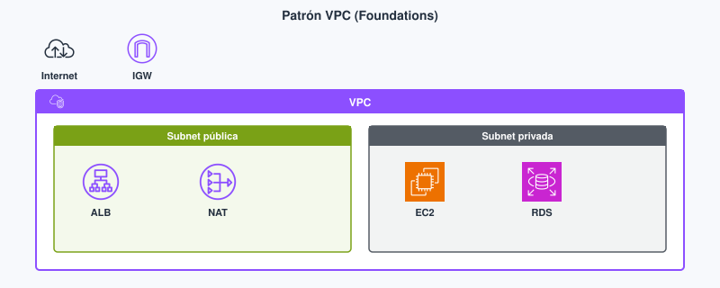
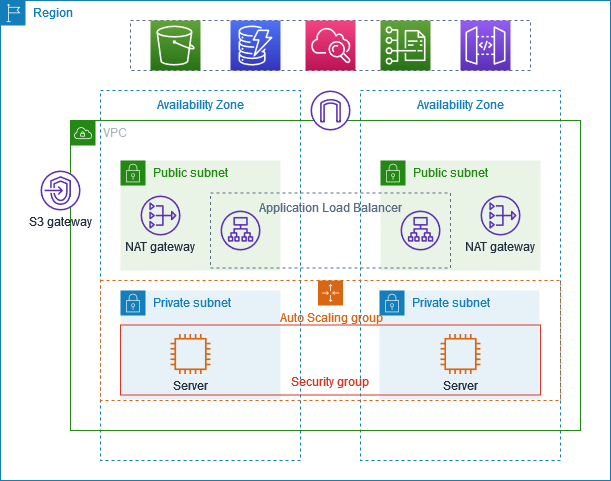
| Pieza | Para qué sirve | Error típico |
|---|---|---|
| Subred | Trozo del CIDR en una sola AZ | Pensar que una subred cruza dos AZ |
| Tabla de rutas | Decide el siguiente salto (local, IGW, NAT) | Subred «privada» con ruta al IGW |
| Internet Gateway | Entrada y salida a internet con IP pública | Poner la BD con IP pública «para conectar desde casa» |
| NAT Gateway | Salida desde subred privada sin inbound desde internet | Confundirlo con un balanceador de carga |
| Security group | Cortafuegos con estado en la interfaz de red | Abrir el puerto 22 a 0.0.0.0/0 |
| NACL | Cortafuegos sin estado en la subred | Olvidar la regla de retorno |
| Examen CLF | Clase DAW / empresa |
|---|---|
| Subred = una AZ; pública tiene ruta al IGW; privada sale con NAT | Dibujar ALB en pública y API/RDS en privada antes de abrir el lab |
| Reconocer IGW frente a NAT | En el entregable, justificar por qué la BD no tiene IP pública |
| CIDR coherente VPC / subred | Explicar por qué 10.0.0.0/16 y 10.0.1.0/24 (espacio y tamaño) |
Security groups frente a NACL¶
El security group (SG) es un cortafuegos con estado (stateful, «con estado») asociado a la interfaz de red de la instancia (ENI, elastic network interface, interfaz de red elástica). Si permites una conexión entrante (por ejemplo TCP —Transmission Control Protocol— puerto 443), el tráfico de retorno de esa misma conexión se permite sin otra regla. Es la herramienta habitual en Foundations: puerto 443 desde internet hacia el ALB; desde el SG del ALB hacia el SG de la API.
La NACL (network access control list, lista de control de acceso de red) es un cortafuegos sin estado (stateless) a nivel de subred. Hay que permitir explícitamente la ida y la vuelta (puertos efímeros incluidos). Sirve como capa extra; en el lab es fácil romperla si editas reglas «por completar» sin plan.
Qué es en este caso — security group. Reglas allow sobre quién puede hablar con la ENI. Lo que no permites, queda denegado. Puedes referenciar otro security group como origen: «acepta solo desde el SG del ALB» es más limpio que pegar CIDR de IPs que cambian.
En la práctica — security group. En el lab del servidor web, 80/443 hacia quien deba (internet o el balanceador). Administración (22/3389) restringida a tu IP o a un bastión si el lab lo permite. Abrir 0.0.0.0/0 en 22 «un rato» suele acabar en olvido y en escaneo desde internet.
Qué es en este caso — NACL. Filtro de la subred entera, evaluado por número de regla, sin memoria de la conexión. Si permites el 443 de entrada, también tienes que permitir el retorno por los puertos efímeros; si no, «no carga la web» y pierdes media hora.
En la práctica — NACL. Si el enunciado del Módulo 5 no pide tocar la NACL, deja la por defecto y trabaja con security groups. En el examen CLF sí debes reconocer la diferencia de estado.
| Security group | NACL | |
|---|---|---|
| Dónde actúa | Interfaz de red (instancia u otro recurso) | Subred entera |
| Estado | Con estado: el retorno de una conexión permitida pasa | Sin estado: ida y vuelta van en reglas distintas |
| Uso habitual en el módulo | Casi todo el control de 80/443/SSH/BD | Solo si el enunciado lo pide |
| Error típico | 0.0.0.0/0 en administración |
Olvidar el puerto de retorno |

En la práctica diaria del módulo casi todo se decide con security groups. Si el enunciado no pide NACL, no inventes reglas simétricas «por relleno».
Una sola EC2 con IP pública, Node en el puerto 3000 abierto al mundo y MySQL en el mismo host suele «funcionar» en el aula y fallar en cuanto alguien escanea internet. Con ALB en pública y API más RDS en privada, el usuario sigue llegando por HTTPS y tú dejas de exponer SSH y el puerto del motor. Ese cambio no es cosmética: es el mismo criterio de mínimo privilegio que viste en IAM, aplicado a puertos y orígenes.
DNS y entrega de contenido¶
Cuando alguien escribe midominio.es en el navegador, hace falta traducir el nombre a una dirección o a un balanceador. Route 53 es el servicio de DNS (Domain Name System, sistema de nombres de dominio) de AWS: zonas autoritativas, comprobaciones de salud (health checks) y políticas básicas de enrutamiento. Route 53 no sustituye al ALB ni a CloudFront: resuelve el nombre hacia ellos.
CloudFront es la CDN (content delivery network, red de entrega de contenido) de AWS: guarda copias cacheables cerca del usuario en ubicaciones de borde (edge locations). Acerca HTML, JS, CSS e imágenes; no replica tu base de datos transaccional a otra región ni a Tokio. El origen suele ser un bucket S3 (front estático del proyecto de DAW) o un ALB / origen HTTP.
En Foundations el flujo habitual es: el dominio en Route 53 apunta a un ALB o a CloudFront; CloudFront toma el origen en S3 o en el balanceador y reduce la latencia de lo cacheable. Global Accelerator (IPs anycast) aparece como nombre de examen; no lo necesitas para el lab del Módulo 5.
Qué es en este caso — Route 53. El registro DNS que hace que api.midominio.es apunte al ALB (o a CloudFront delante del front).
En la práctica — Route 53. En el lab a menudo usas la URL del ALB o de la instancia sin dominio propio. En un proyecto intermodular sí tendrás dominio: el registro A/ALIAS o CNAME debe apuntar al recurso correcto, no «a la IP de la EC2 de esta semana» si esa IP cambia.
Qué es en este caso — CloudFront. Capa de caché y terminación en el borde para contenido que se puede servir muchas veces igual.
En la práctica — CloudFront. Encaja con el front estático en S3 y con assets. No encaja cuando cada petición es una consulta con datos personales al origen: la CDN no sustituye a la API ni mueve RDS. El checkout dinámico sigue golpeando el origen; los CSS del tema, no.
Flujo de una petición HTTP¶
Imagina que un usuario abre https://midominio.es/productos en un proyecto de DAW con front en S3 detrás de CloudFront, API en EC2 detrás de un ALB y datos en RDS. El lab del Módulo 5 a veces lo reduce a un solo servidor web; igual debes poder contar el camino completo.
Primero el navegador pregunta al DNS (Route 53 u otro resolutor) qué destino tiene ese nombre. La respuesta puede ser la distribución de CloudFront o, si no hay CDN, el nombre del ALB. Con eso el cliente ya sabe a quién hablar por HTTPS.
Si hay CloudFront, la petición llega a una ubicación de borde. Si el objeto está en caché y la política de TTL lo permite, CloudFront responde desde ahí y el origen (S3 o el ALB) no se entera. Si no hay caché o la petición no es cacheable, CloudFront pide el contenido al origen y, según la configuración, puede guardarlo para la siguiente.
Cuando el origen es el ALB (o cuando no hay CDN), el balanceador vive en subredes públicas y acepta HTTPS según su security group (443 desde internet, o desde CloudFront si el origen está restringido). El ALB elige un destino sano del grupo de destinos —las instancias de la API en subred privada— y reenvía la petición. Eso solo funciona si el security group de la API permite tráfico desde el security group del ALB en el puerto de la aplicación. Si el SG de la API solo acepta tu IP de casa, el ALB recibe fallos de health check y ves 502 o destinos no sanos.
La API (Node o PHP) ejecuta la lógica. Si necesita datos, abre una conexión TCP al puerto del motor en RDS. El security group de RDS debe aceptar ese puerto solo desde el security group de la API (o desde la subred privada de la API, según diseño). Abrir 3306 a 0.0.0.0/0 «para probar con DBeaver desde el instituto» rompe el patrón entero: cualquier escáner de internet puede intentar fuerza bruta contra el motor.
La respuesta JSON o HTML vuelve por el mismo camino: RDS → API → ALB → (CloudFront si aplica) → navegador. Si en algún tramo falta la regla de retorno en una NACL (sin estado), o bloqueaste el SG, el fallo se ve como timeout aunque «la instancia esté en marcha».
En un lab corto a veces se simplifica a una EC2 pública con 80 abierto. En el .md debes poder decir qué simplificaste y por qué: la rúbrica premia que sepas la diferencia, no que copies un diagrama vacío.
| Examen CLF | Clase DAW / empresa |
|---|---|
| CloudFront acerca contenido cacheable; no mueve RDS | Front en S3 + CloudFront; API detrás del ALB |
| Route 53 resuelve nombres; no sustituye al balanceador | Apuntar el dominio al ALB o a CloudFront según el diseño |
| SG con estado frente a NACL sin estado | Preferir SG; justificar NACL solo si el enunciado lo pide |
Enlace híbrido: VPN y Direct Connect¶
Si el backend del instituto o del cliente sigue en un CPD (centro de proceso de datos) y la API nueva está en AWS, hace falta un enlace entre ambos mundos. No todo vive «solo en la nube» desde el día uno.
Qué es en este caso — VPN. Una VPN (virtual private network, red privada virtual) sitio a sitio cifra el tráfico, a menudo por internet, entre tu red on-premises y la VPC. Montas un túnel IPsec (u otra tecnología que indique el escenario) y las redes se ven a través de ese túnel.
En la práctica — VPN. Encaja para pruebas, para conectar el CPD del cliente con un caudal moderado y para escenarios donde importa cifrar sin esperar a un circuito dedicado. En Foundations no configuras la VPN del lab típico del Módulo 5; sí la reconoces en el CLF-C02 cuando el enunciado habla de un enlace cifrado por internet.
Qué es en este caso — Direct Connect. Un Direct Connect es una conexión física dedicada entre tu ubicación (CPD, oficina, centro de datos del cliente) y AWS. El tráfico no pasa por internet público: va por el circuito acordado con el operador. Una VPN, en cambio, cifra el tráfico pero sí viaja por internet entre los extremos del túnel.
En la práctica — Direct Connect. Tiene sentido cuando el caudal estable y la previsibilidad importan más que un lab de aula: sincronizaciones grandes, aplicaciones sensibles a la variación del camino público, contratos donde el enlace dedicado es requisito. En Foundations solo debes reconocer el escenario del examen: mucho tráfico estable al CPD → Direct Connect; prueba rápida y cifrada → VPN. El precio y la latencia dependen del contrato con el operador y de la ubicación del punto de presencia, no de una tabla fija en un apunte.
En un proyecto de DAW casi nunca montarás Direct Connect; sí debes saber nombrarlo cuando el enunciado del CLF-C02 lo describa. Un VPC endpoint es otra pieza distinta: permite alcanzar servicios de AWS (por ejemplo S3) desde la VPC sin salir por internet público; no sustituye a Direct Connect hacia el CPD del cliente.
Relación con cómputo y balanceo¶
La VPC fija el mapa de red; EC2 y Lambda (Tema 4) son los recursos que ejecutan código; el ALB y el Auto Scaling (Tema 8) reparten y escalan dentro de esa red. Sin CIDR y subredes claras, el resto de labs falla con timeouts, sin ruta al IGW o con un security group que no cuadra. Cuando en el Tema 4 lances una instancia, la pregunta no es solo «¿qué AMI?» sino «¿en qué subred y con qué security group?». Cuando en el Tema 8 montes un ALB, la pregunta es «¿en qué subredes públicas van los nodos del balanceador y hacia qué destinos privados reenvían?».
El lab del Módulo 5: Creación de una VPC y lanzamiento de un servidor web¶
En tu clase de Cloud Foundations, el ejercicio se llama Ejercicio de laboratorio 2 — Creación de una VPC y lanzamiento de un servidor web. Trabajas en la región que indique el lab y sigues el enunciado del LMS paso a paso; lo que sigue es el hilo lógico para que encaje con el patrón ALB, API y RDS del tema.
Primero creas la VPC con el asistente VPC and more: defines el CIDR de la VPC y, en una zona de disponibilidad, dejas creadas una subred pública, una subred privada y un NAT gateway en la pública. Así practicas la diferencia de rutas: la pública llega al Internet Gateway y la privada sale a internet por el NAT cuando hace falta, sin exponer la instancia de la privada a entradas no solicitadas desde internet.
Después amplías el diseño a alta disponibilidad entre dos AZ: añades una segunda subred pública y una segunda subred privada en otra zona de disponibilidad y las asocias a sus tablas de rutas (pública con ruta al IGW, privada con ruta al NAT). En el .md anota el CIDR y la AZ de cada subred y qué tabla de rutas lleva.
Luego creas un security group que permite HTTP en el puerto 80 desde quien indique el lab (a menudo internet para comprobar el servidor). La administración por SSH o RDP no debe quedar abierta a todo internet (0.0.0.0/0) si puedes evitarlo: restringe a tu IP o al método que marque el enunciado.
Por último lanzas el servidor web en una subred pública, asocias el security group y compruebas que responde HTTP. Eso es lo que el lab pide cerrar.
Respecto al patrón didáctico ALB en pública, API y RDS en privada, este lab practica la VPC de verdad (CIDR, dos AZ, IGW, NAT, tablas de rutas, security group y una instancia alcanzable desde internet). Simplifica el resto: no montas un ALB ni separas API y base de datos; el servidor web va directo en pública con el puerto 80, no el diseño completo de un proyecto intermodular. En el entregable PR301 deja claro qué parte del patrón has tocado y qué has dejado fuera «porque el enunciado va a una EC2 web en pública».
Bloque Ampliación Practitioner (CLF-C02)¶
El examen insiste en dónde publicas (ALB o CloudFront frente a base en privada), qué hace una CDN y la diferencia de estado entre security group y NACL. VPN y Direct Connect solo hay que reconocerlos: si el escenario describe un enlace dedicado al CPD, Direct Connect; si describe un túnel cifrado por internet para conectar redes, VPN.
Para el CLF
Publica el tráfico en el borde o en el balanceador; deja la base en subred privada. CloudFront acerca contenido cacheable: no «mueve» RDS al borde. El security group lleva estado; la NACL, no. Ampliación y autocheck certificación en Certificación § Tema 3.
Videotutorial (CDN / DNS). CloudFront - S3 - Route 53 (Static Web) (~19 min). Vídeo: Profe Santos Cloud (YouTube).
Videotutorial¶
Principal (Foundations). VPC (~16 min).
Vídeo: Profe Santos Cloud (YouTube). Conviene fijarte en el CIDR, las subredes y la salida a internet, y anotar qué queda público y qué privado.
Extra (opcional). VPC EC2 RDS (~40 min) — demo de red con cómputo y base; útil antes del lab del Módulo 5. Vídeo: Profe Santos Cloud (YouTube).
En tu clase de Cloud Foundations de Academy, abre el Módulo 5 (redes / VPC) y sigue el lab que indique el LMS (sistema de gestión del aprendizaje). Usa la región que permita ese lab.
Actividad / práctica¶
PR301 — VPC y servidor web¶
- PR301. (RA3 // a, b, c // PR 0–10). Montas (o completas) el lab Academy del Módulo 5 de VPC y servidor web: subredes, rutas y security group coherentes con una API publicada sin abrir administración al mundo.
Tareas: anota el CIDR de la VPC y el de cada subred con su AZ; verifica la ruta al IGW solo en la subred pública; captura el security group (puertos 80/443 y administración restringida si el lab lo permite); termina los recursos en el orden que indique el lab (suele ser instancia → volúmenes o ENI → IGW → subredes → VPC).
Entrega: según Cómo entregar las prácticas — fichero PR301.md (o ZIP + img/ si hay capturas).
Guía de apoyo: Soluciones · PR301.
| Criterio | Descripción | Puntos |
|---|---|---|
| VPC / subredes | CIDR y AZ documentados | 0–3 |
| Rutas e IGW | Pública frente a privada coherente | 0–2 |
| Security group | Puertos justificados; sin 0.0.0.0/0 innecesario |
0–3 |
| Limpieza | Recursos de lab terminados | 0–2 |
| Total | /10 |
Autocheck del tema¶
Comprueba VPC y entrega de este tema. CLF: Certificación § Tema 3.
- V/F. Una subred puede cruzar dos AZ «para tener alta disponibilidad gratis».
- El security group…
a) no tiene estado · b) recuerda conexiones establecidas · c) sustituye al IGW - ¿Para qué sirve un NAT Gateway si ya hay IGW?
- Empareja: IGW · NACL · CloudFront con: (a) puerta a internet de la VPC · (b) filtro a nivel de subred (sin estado) · (c) CDN en el borde
- V/F. CloudFront «mueve» RDS a la ubicación de borde más cercana al alumno.
Soluciones
-
Falso — una subred = una AZ.
-
b.
-
Salida a internet desde subredes privadas sin aceptar entradas no solicitadas (parches del SO,
npm…). -
El IGW es (a) la puerta a internet de la VPC; la NACL, (b) el filtro a nivel de subred sin estado; CloudFront, (c) la CDN en el borde.
-
Falso — cachea contenido; no traslada la base de datos.
Glosario¶
VPC Virtual Private Cloud (nube virtual privada): red virtual aislada lógicamente en una región AWS donde colocas subredes, rutas y recursos (EC2, bases de datos, etc.). Es el espacio de red de tu app web: sin VPC bien planteada, publicas de más o no sales a internet cuando toca.
subnet Subred: trozo del CIDR de la VPC asociado a una zona de disponibilidad. No cruza dos AZ. Por eso la alta disponibilidad implica al menos dos subredes (y suele implicar dos AZ).
CIDR
Classless Inter-Domain Routing: notación de rango de direcciones IP (p. ej. 10.0.0.0/16 para la VPC y 10.0.1.0/24 para una subred). Define el tamaño del bloque.
IGW Internet Gateway (puerta de enlace a internet): puerta de la VPC hacia internet para recursos con ruta e IP pública. Sin IGW (y sin ruta), una subred «pública» no lo es.
NAT Gateway
Network Address Translation Gateway: permite que recursos en una subred privada inicien conexiones salientes a internet (parches del SO, npm) sin aceptar entradas no solicitadas. No es un balanceador ni sustituye al IGW para publicar un front.
security group Cortafuegos con estado a nivel de interfaz de red (instancia). Si permites una conexión, el tráfico de retorno asociado se permite. Es la herramienta habitual para controlar 80/443/SSH en labs Foundations.
NACL Network ACL (lista de control de acceso de red): cortafuegos sin estado a nivel de subred. Hay que permitir explícitamente ida y vuelta. Útil como capa extra; fácil de romper si se edita sin plan.
CloudFront CDN (content delivery network) de AWS: cachea contenido en ubicaciones de borde cerca de los usuarios. Origina típicamente en S3 o en un balanceador. Acerca estáticos; no mueve tu base de datos transaccional al borde.
tabla de rutas Conjunto de reglas que decide el siguiente salto de cada destino (local, IGW, NAT, peering…). Define si una subred es pública o privada en la práctica.
IP pública Dirección alcanzable desde internet, asociada a un recurso en subred con ruta al IGW. Distinta de la IP privada dentro de la VPC.
IP elástica Elastic IP: dirección pública fija que puedes asociar o mover entre recursos en la cuenta (según cuotas). Útil cuando necesitas una IP estable; en muchos diseños el ALB evita pegar una EIP a cada instancia.
VPC endpoint
Punto de enlace que permite alcanzar servicios de AWS (por ejemplo S3) desde la VPC sin salir por internet público. Aparece en políticas IAM como condición (aws:SourceVpce).
Route 53 Servicio DNS de AWS: traduce nombres de dominio a direcciones o a recursos (ALB, CloudFront…). No sustituye al balanceador ni a la CDN.
edge location Ubicación de borde de la red de AWS donde CloudFront (y otros servicios de borde) cachea o termina tráfico cerca del usuario. No es una AZ de cómputo de tu VPC.
VPN Virtual private network (red privada virtual): enlace cifrado, a menudo por internet, entre tu red on-premises y la VPC (sitio a sitio) u otros escenarios.
Direct Connect Enlace de red dedicado entre tu ubicación y AWS. Se reconoce en el examen cuando el escenario pide caudal estable hacia el CPD; no se configura en el lab típico de Foundations.
ALB Application Load Balancer: balanceador de carga de aplicación (capa HTTP/HTTPS) que reparte tráfico hacia destinos en la VPC. Suele ir en subred pública.
Tema 4. Cómputo: EC2, Lambda y contenedores¶
Tres maneras de «correr código» en AWS: máquina virtual (EC2 —Elastic Compute Cloud, nube elástica de cómputo—), contenedor (ECS / Fargate) y función (Lambda). El error típico en un proyecto de DAW no es desconocer los logos; es meter una API con WebSocket persistente en Lambda «porque es serverless» o dejar un t3.large 24/7 para un cron de treinta segundos. Este tema corresponde al Módulo 6 de AWS Academy Cloud Foundations. Los términos clave están en el glosario.
Al empezar
Empieza por el cuestionario inicial. La red del Tema 3 ya sitúa la instancia; aquí eliges dónde corre el proceso y cuánto pagas por dejarlo encendido.
Propuesta didáctica¶
RA3. Diseña y configura redes virtuales y servicios de cómputo en la nube, aplicando buenas prácticas de seguridad, estrategias de balanceo de carga, escalado automático y aprovechando tecnologías serverless, contenedores y máquinas virtuales según casos de uso específicos.
Criterios de evaluación (RA3)¶
- d) Se ha realizado la selección de servicios de computación adecuados según casos de uso.
- f) Se han desarrollado prácticas relacionadas con la optimización de recursos computacionales.
Balanceo y Auto Scaling: Tema 8. Aquí se nombra el ASG como pareja natural de EC2.
Contenidos¶
- EC2: AMI, familia de instancia, red, compra (On-Demand, Spot, Savings Plans).
- Lambda: evento, duración, coste por invocación.
- ECS, EKS, Fargate: contenedores con o sin nodos cuyo SO tú parcheas.
- Elastic Beanstalk, Lightsail: nombres; cuándo simplifican.
Programación de aula (orientativa)¶
| Quincena | En tutoría | Trabajo autónomo / evidencias |
|---|---|---|
| Q5 | EC2 + AMI + elección VM/Lambda | PR401; Autocheck del tema |
Cuestionario inicial¶
Responde con lo que sepas
- Nombra un caso en el que EC2 encaje mejor que Lambda (pista: estado o conexión larga).
- ¿Qué es una AMI y para qué la usarías al clonar un lab?
- ¿Spot es un tamaño de instancia (
t3.micro) o un modelo de compra? - ¿Por qué conviene terminate (o min=0) al acabar el lab aunque «la dejes para mañana»?
- En una frase: ¿qué diferencia hay entre una VM y un contenedor en quién mantiene el SO?
Este cuestionario es solo para ti: te ayuda a ver qué dominas ya y qué te falta antes o mientras lees el tema. No se entrega en Aules; respóndelo con lo que sepas y, cuando quieras contrastar, abre el bloque Soluciones (autoevaluación) debajo o el índice en Soluciones.
Soluciones (autoevaluación)
-
API con WebSocket o proceso largo con estado en memoria / puerto persistente: mejor EC2 (o contenedor) que Lambda «porque es serverless».
-
Una AMI es la plantilla (SO + software) para lanzar instancias iguales; sirve para clonar el lab sin reinstalar a mano.
-
Spot es un modelo de compra (capacidad interrumpible más barata), no un tamaño
t3.micro. -
Si no terminate (o min=0), el lab sigue facturando horas, discos y balancers olvidados.
-
En una VM gestionas (más) el SO y el proceso; en un contenedor empaquetas la app y, con Fargate, dejas de parchear nodos EC2 del clúster.
Bloque Foundations (Módulo 6)¶
Imagina la misma API de tu proyecto de DAW (Node o PHP, front aparte, base de datos en RDS): puedes desplegarla en una instancia EC2, invocarla como función Lambda (con adaptaciones) o empaquetarla en Docker y correrla en ECS con Fargate. Las tres opciones ejecutan código; cambian quién mantiene y actualiza qué, cómo pagas, los límites de duración y si puedes guardar estado en un proceso que escucha un puerto todo el día.
Amazon EC2¶
Qué es en este caso. Amazon EC2 es el servicio de instancias (máquinas virtuales) en AWS. Eliges una plantilla (AMI, Amazon Machine Image, imagen de máquina de Amazon), un tipo de instancia (combinación de vCPU —virtual CPU, procesador virtual—, RAM y red), la VPC y la subred, el disco (EBS, Elastic Block Store, almacenamiento en bloques elástico, Tema 5) y el security group. La instancia es un servidor Linux o Windows donde instalas Node, PHP, nginx o Apache y dejas un proceso escuchando un puerto.
En la práctica. Es la opción más directa para una API clásica con listen(3000), sesiones en memoria o WebSockets largos. Tú aplicas los parches del SO; tú mantienes y actualizas el runtime y las dependencias. Pagas mientras la instancia está en estado running (más el disco EBS asociado). En el lab del Módulo 6 sueles lanzar una instancia con AMI y tipo pequeños; en el Learner Lab, si la EC2 debe llamar a S3 u otros servicios, asignas LabRole con LabInstanceProfile (rol para el servicio, no para tu sesión de consola).
La AMI no es la instancia encendida: es la receta (SO + software base). Si cada despliegue reinstala Node a mano, pierdes tiempo además de pagar horas de VM. Cuando la instancia ya está bien configurada, puedes crear una AMI propia y clonar el entorno.
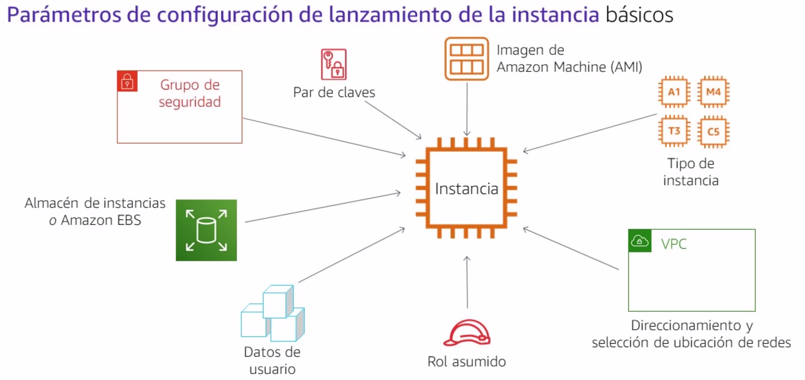
Crear tu propia AMI (idea Foundations)
Cuando la instancia ya tiene el SO y el software «bien», puedes Actions → Image and templates → Create image. Así lanzas clones iguales sin reinstalar a mano. En el formulario conviene dejar el reboot para snapshot coherente.
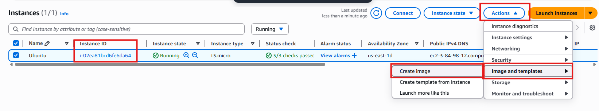
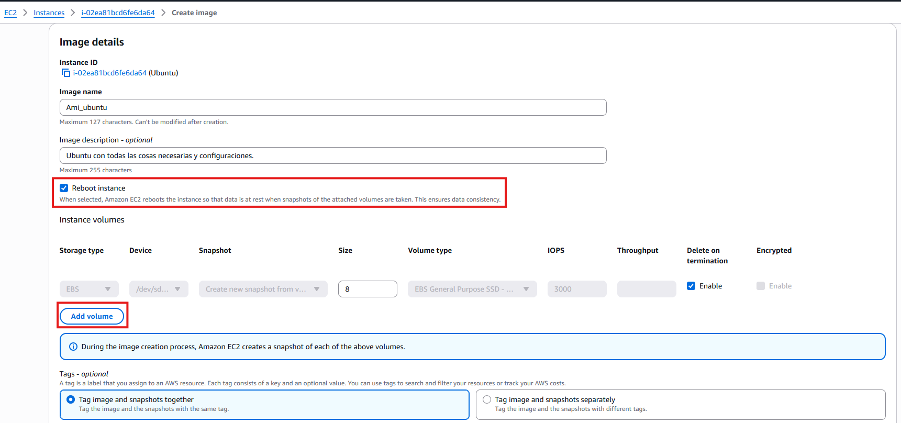
Características EC2 (Foundations)
- Genera máquinas virtuales en la nube (web, correo, ficheros…).
- El coste depende de RAM, vCPU, disco e IP elástica si la usas.
- Escalable: puedes cambiar tipo (con límites) según necesidad — y apagando cuando no hace falta.
Tipo de instancia y familia¶
Un tipo de instancia (por ejemplo t3.micro) fija vCPU, memoria y rendimiento de red de plantilla. Las familias agrupan perfiles: propósito general (t), cómputo (c), memoria (m), almacenamiento, GPU… Rightsizing significa no coger un 2xlarge porque el tutorial lo traía: para una API de prácticas con poco tráfico, un tipo pequeño suele bastar si el código no es un cuello de botella.
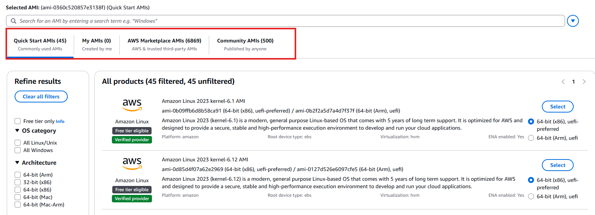
El modelo de compra (On-Demand, Reserved, Savings Plans, Spot) no es una familia: Spot puede aplicarse a un t3.micro interrumpible.
Disco: EBS frente a instance store¶
EBS es disco en red persistente: sobrevive al stop de la instancia si lo configuras así. Instance store es almacenamiento local ligado al host: más rápido en algunos casos, pero se pierde si la instancia termina o falla el hardware subyacente. Para la API del proyecto de DAW y los logs, en Foundations casi siempre piensa en EBS; el instance store es un detalle de examen y de cargas muy concretas.
Par de claves y user data¶
El par de claves (key pair) sirve para entrar por SSH (Secure Shell, acceso remoto cifrado) en Linux si no usas solo Instance Connect. Si generas tu propia clave, descárgala en el momento: es la única oportunidad. En Academy a menudo usas vockey / labsuser.pem según el lab.
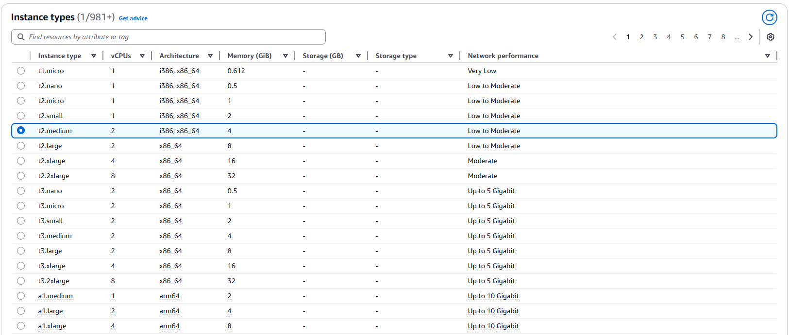
User data es un script o cloud-init que la instancia ejecuta al primer arranque (instalar paquetes, clonar repo, arrancar servicio). No sustituye a una AMI bien hecha, pero en el lab acelera el «primer boot».
Cómo pagas EC2: On-Demand, Reserved, Savings Plans y Spot¶
| Modelo | Idea | Cuándo tiene sentido |
|---|---|---|
| On-Demand | Pagas por hora/segundo sin compromiso | Labs, picos imprevisibles, primer despliegue |
| Reserved Instances / compromiso | Descuento a cambio de plazo (1 o 3 años) | Carga estable 24/7 en producción |
| Savings Plans | Compromiso de gasto ($/h) flexible entre familias/regiones | Empresa con mix de tipos pero uso predecible |
| Spot | Capacidad sobrante, puede interrumpirse con aviso | Batch tolerante a fallos, no checkout en vivo |
En un lab y en muchas prácticas de DAW usas On-Demand y apagas o terminate al terminar. Spot ahorra, pero AWS puede recuperar la instancia: no es la hipótesis seria para una demo de evaluación que no tolera corte. Reserved y Savings Plans son decisiones de empresa con uso medido meses, no del ejercicio de un fin de semana.
| Examen CLF | Clase DAW / empresa |
|---|---|
Spot = modelo de precio, no t3.micro |
No usar Spot para la demo que no puede caerse |
| Distinguir tipo/familia de modelo de compra | Rightsizing antes de Reserved |
| EC2 = tú parcheas el SO | En el .md, justificar On-Demand + terminate en labs |
Un t3.large 24/7 «porque así va holgado» para una API con pico a las 11:00 factura ociosidad. Tipo más pequeño, apagado fuera de horario (o Auto Scaling a cero en el Tema 8) y, si el workload es un cron corto, valorar Lambda. El ahorro viene de dejar de pagar lo que no usas.
Al parar (stop) una instancia dejas de pagar cómputo de esa VM, pero el volumen EBS sigue facturando si no lo borras. Al terminar (terminate) liberas la instancia; los volúmenes delete on termination desaparecen con ella según cómo lanzaras el disco. En el lab, terminate al cerrar evita sorpresas el lunes.
Conectar por consola con EC2 Instance Connect evita pelear con el .pem en el portátil del aula: el usuario (ubuntu, ec2-user…) lo marca la AMI. Si entras por SSH con par de claves, el security group debe permitir el puerto 22 solo desde tu IP o bastión, no desde todo internet.
AWS Lambda¶
Qué es en este caso. AWS Lambda ejecuta una función cuando llega un evento (HTTP vía API Gateway, subida a S3, mensaje en cola, regla de EventBridge…). No gestionas una VM encendida: AWS prepara un entorno efímero, ejecuta tu handler y factura por invocaciones y por GB-segundo de duración.
En la práctica. Encaja en webhooks, transformaciones de imagen, tareas tras un upload o un cron que dura segundos. No encaja en un listen(3000) eterno, jobs de horas ni estado en memoria de proceso entre peticiones no relacionadas. Cada invocación tiene un timeout configurable; en la documentación oficial de Lambda el tiempo máximo de ejecución por invocación es 15 minutos. Por encima de ese tope necesitas otro servicio (EC2, contenedor, Step Functions que encadene Lambdas…).
El arranque en frío (cold start) es la latencia extra cuando no hay entorno caliente: importa en APIs muy sensibles al milisegundo; importa menos en un batch nocturno. Mantener y actualizar el runtime lo hace AWS; tú mantienes y actualiza el código, las dependencias empaquetadas y el rol de ejecución (permisos IAM).
Cuándo no usar Lambda para la API del proyecto de DAW. WebSockets largos, transcodificación de vídeo de horas, depuración con SSH al host o una app Express «tal cual» con sesión en RAM y puerto fijo suelen ir mejor en EC2 o en contenedor.
Contenedores: Docker, ECR, ECS, EKS y Fargate¶
Qué es en este caso. Un contenedor empaqueta la aplicación y sus dependencias en una imagen (capas de sistema de ficheros). Docker es la herramienta habitual para construir y probar esa imagen en local. En AWS guardas imágenes en ECR (Elastic Container Registry, registro de contenedores elástico) y las ejecutas con un orquestador.
En la práctica. Si en clase ya dockerizas la API, el salto natural es ECS (Elastic Container Service, servicio de contenedores elástico) con Fargate (AWS gestiona los nodos; tú defines CPU/memoria del task). EKS (Elastic Kubernetes Service, Kubernetes gestionado) tiene sentido cuando el equipo ya estandariza en Kubernetes; para un único contenedor de prácticas suele ser exceso. Con Fargate no parcheas el SO de cada nodo EC2 del clúster; sí mantienes y actualiza la imagen de tu app.
| Servicio | Qué aporta | Trade-off didáctico |
|---|---|---|
| ECR | Repositorio de imágenes privado en AWS | Hay que publicar imagen antes del despliegue |
| ECS | Orquestación propia de AWS | Menos portable que K8s puro |
| EKS | Kubernetes gestionado | Más control, más piezas |
| Fargate | Cómputo serverless para contenedores | Sin SSH al nodo; menos «tocar el hierro» |
No montamos un clúster de producción en Foundations. Sí debes poder razonar: «esta API ya va en Docker → ECS/Fargate; este script de 20 s → Lambda; este legado con licencia de SO concreta → EC2».
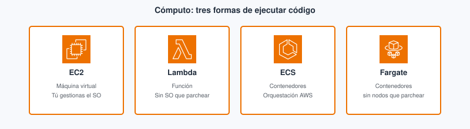
En EC2 el camino del módulo es el de siempre: lanzar en una AZ, security group y conectar. En Lambda no hay listen: editas el handler, Deploy y Test.
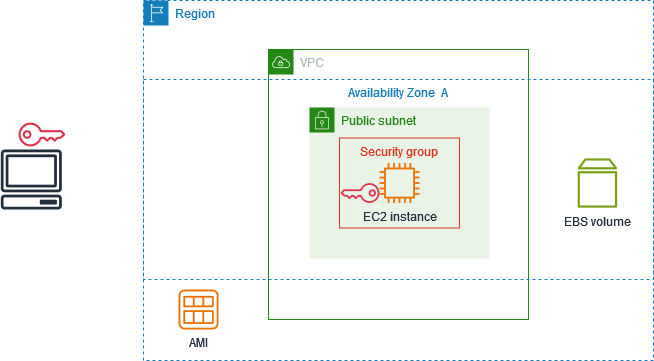
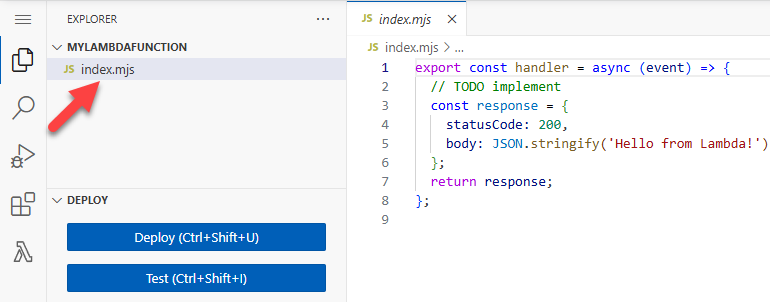
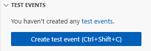
Elastic Beanstalk y Lightsail¶
Elastic Beanstalk subes código o artefacto y AWS provisiona EC2, balanceador y despliegue con menos pasos manuales: PaaS (Platform as a Service, plataforma como servicio) sobre EC2. Lightsail ofrece VPS simplificados con precio plano para sitios pequeños. En un proyecto de DAW con VPC, ALB y RDS diseñados a mano sueles usar EC2 o contenedores; Beanstalk/Lightsail aparecen en el CLF como «acortar camino» cuando no necesitas control fino de red.
EC2, Lambda y contenedor: la misma API, tres formas¶
| Dimensión | EC2 | Lambda | ECS + Fargate |
|---|---|---|---|
| Quién parchea el SO | Tú (instancia) | AWS (entorno gestionado) | AWS (nodo); tú la imagen de app |
| Cómo pagas | Tiempo running + EBS | Invocaciones + duración | vCPU/memoria del task + tiempo |
| Estado / puerto | Proceso listen, disco local |
Efímero por invocación; sin listen clásico |
Proceso en contenedor; puerto del task |
| Límites didácticos | Disco, tipo, tú escalas (ASG T8) | Timeout máx. 15 min/invocación; cold start | Definición de task; no SSH al nodo |
| Cuándo elegir | API persistente, WebSocket, legado | Eventos cortos, cron, webhook | App ya dockerizada, sin administrar nodos |
| Examen CLF | Clase DAW / empresa |
|---|---|
| Lambda no sustituye todo «por moderno» | PR401: comparar estado, duración, coste 24/7 |
| Fargate ≠ gestionar SO del nodo | Docker en clase → ECS/Fargate razonable |
| Beanstalk/Rekognition/SageMaker ≠ «tipo EC2» | Nombrar el servicio correcto en el enunciado |
Errores frecuentes (cómputo)¶
Dejar la instancia del lab encendida el fin de semana sigue facturando horas y disco aunque nadie entre por SSH, porque el estado running consume cómputo. Al terminar, terminate (o stop si el lab lo pide y entiendes que el EBS puede seguir costando) y deja captura de lista vacía.
Elegir Spot para el checkout o una demo en directo puede interrumpir la instancia cuando AWS recupera capacidad; el usuario ve caída aunque «ayer funcionaba». Para labs de evaluación usa On-Demand salvo que el enunciado pida Spot y acepte interrupción.
Meter en Lambda una API Express «tal cual» con estado en memoria y puerto fijo choca con el modelo por invocación: no hay un proceso eterno escuchando. Hay que reescribir a handler por evento o mover a EC2/contenedor.
Montar EKS para un único contenedor de prácticas añade plano de control, nodos y curva de aprendizaje que no aportan si ECS/Fargate basta. Reserva EKS para escenarios que ya exigen Kubernetes.
Confundir tipo t3.micro con Spot: el primero es tamaño de hardware; el segundo es forma de compra interrumpible.
Relación con red y almacenamiento¶
EC2 sin VPC y security group claros (Tema 3) es un servidor expuesto. El disco principal de la VM suele ser EBS (Tema 5); los uploads compartidos entre instancias no se improvisan en el directorio raíz efímero. Auto Scaling (ASG, grupo de autoescalado) en el Tema 8 escala grupos de instancias EC2; no sustituye elegir bien tipo y modelo de compra.
Lab del Módulo 6¶
En Cloud Foundations, el Módulo 6 centra el lanzamiento de EC2: AMI, tipo pequeño, red del lab, par de claves o Instance Connect y, a menudo, crear o usar una AMI. Sigue el enunciado del LMS en la región del lab. La práctica PR401 pide además comparar ese mismo workload mental con Lambda aunque el lab solo lance la VM. Si practicas en el Learner Lab, recuerda LabRole / LabInstanceProfile cuando la instancia o una Lambda deba llamar a la API de AWS sin access keys en disco.
Conectar Lambda a HTTP (idea Foundations)¶
Una API REST en EC2 expone un puerto; en Lambda el patrón habitual es API Gateway (u otro disparador) delante de la función. API Gateway recibe HTTPS, valida la ruta y invoca la función con un evento JSON; la función devuelve status y cuerpo. No hay un proceso Node eterno: cada petición es una invocación (con posible cold start). Para el CLF basta reconocer la pareja «API HTTP → API Gateway → Lambda» frente a «ALB → EC2 con listen». En un proyecto intermodular puedes mezclar: front estático en S3, rutas dinámicas en Lambda y sesiones largas en EC2 si el diseño lo exige.
Lightsail en una frase útil¶
Lightsail agrupa instancia, red simple y precio predecible para sitios pequeños. Si ya diseñaste VPC, subredes privadas, ALB y RDS en el Tema 3, Lightsail no sustituye ese diseño: es atajo para un WordPress o un servidor único sin practicar el mapa completo de red.
Bloque Ampliación Practitioner (CLF-C02)¶
En el CLF-C02 no basta con nombrar EC2 o Lambda: hay que separar tipo de instancia de modelo de precio y elegir servicio según estado, duración y quién mantiene el entorno (ECS/Fargate, EKS…). Preguntas trampa mezclan SageMaker o Rekognition con «un EC2 más grande»: son servicios gestionados de ML, no familias de instancia. Otra trampa es creer que Auto Scaling elige por ti Lambda frente a EC2: solo ajusta cuántas instancias de un tipo ya elegido hay en el grupo.
Si el enunciado describe carga interrumpible y tolerancia a aviso de terminación, piensa Spot. Si describe compromiso a 1–3 años con uso estable, piensa Reserved o Savings Plans. Si describe función ante evento S3, piensa Lambda, no una VM encendida «por si acaso».
Para el CLF
Spot es un modelo de compra, no un tamaño t3.micro. SageMaker o Rekognition no son «un tipo de EC2». Auto Scaling escala grupos de instancias, no sustituye elegir bien el cómputo. Ampliación y autocheck certificación en Certificación § Tema 4.
Videotutorial¶
Principal (Foundations). ATTA AWS Academy 03 EC2 Linux (~25 min).
Vídeo: Profe Santos Cloud (YouTube). Qué mirar: AMI, tipo pequeño, SG y cómo apagar/terminar; eso es lo que facturas en el lab.
Extra (opcional). Lambda 101 (~14 min) — contraste serverless frente a EC2 24/7. Vídeo: Profe Santos Cloud (YouTube).
Extra. Creación y gestión de EC2 — lanzar instancia: AMI, tipo, par de claves y acceso.
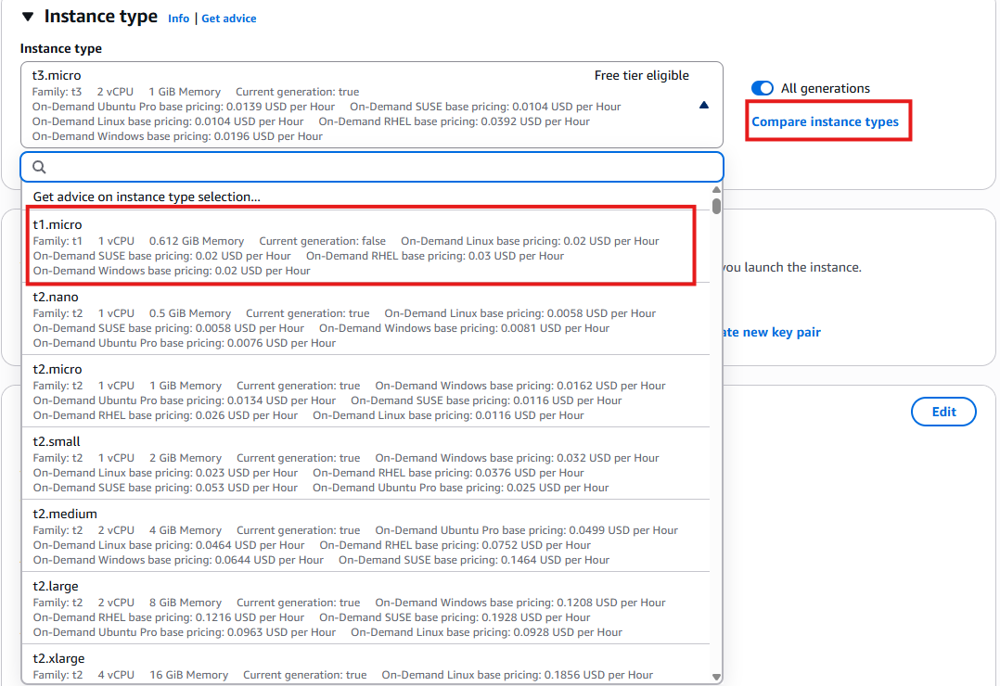
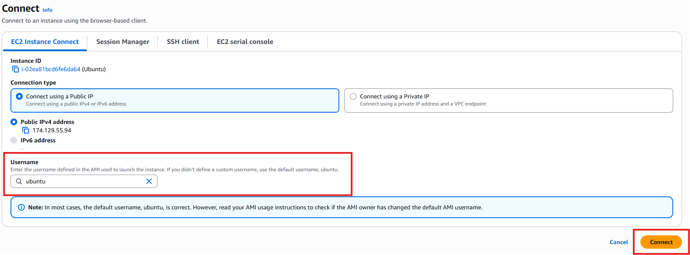
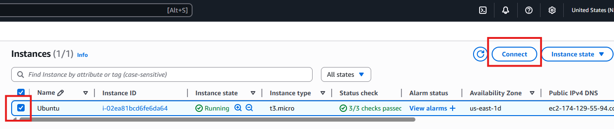
Abre el Módulo 6 en tu clase de Cloud Foundations y sigue el lab que indique Aules. Usa la región del lab.
Actividad / práctica¶
PR401 — Lanzar y comparar cómputo¶
- PR401. (RA3 // d, f // PR 0–10). Lanzas el lab Academy del Módulo 6 (EC2 / AMI) y argumentas si ese mismo workload encajaría en Lambda, mirando estado, duración y coste 24/7.
Tareas: sigue AMI/región del enunciado con tipo pequeño y SG mínimo; documenta evidencias del lanzamiento; en el .md, compara EC2 frente a Lambda (estado, tiempo, puerto persistente, coste); terminate las instancias y deja evidencia de lista vacía o parada.
Entrega: según Cómo entregar las prácticas — fichero PR401.md (o ZIP + img/ si hay capturas).
Guía de apoyo (no sustituye el enunciado): Soluciones · PR401.
| Criterio | Descripción | Puntos |
|---|---|---|
| Lab EC2/AMI | Lanzamiento según enunciado | 0–3 |
| Comparación Lambda | Estado, duración, coste 24/7 | 0–4 |
| Limpieza | Terminate / evidencias | 0–2 |
Claridad del .md |
Sin quedarse solo en el logo | 0–1 |
| Total | /10 |
Despliegue: de npm start al servicio¶
En tu portátil de clase, node server.js abre el puerto 3000 y el navegador en localhost habla con ese proceso. Llevar la misma API a AWS no es copiar el comando: cambia quién proporciona la máquina, la red y el ciclo de vida del proceso.
Si eliges EC2, primero defines la red (subred y security group del Tema 3) y lanzas una instancia con una AMI que ya traiga Linux. Instalas Node o PHP, clonas el repo y arrancas la app. El security group debe permitir tráfico al puerto de la API solo desde el ALB o desde el origen que hayas diseñado, no desde todo internet si puedes evitarlo. Necesitas que el proceso sobreviva al cierre de la sesión SSH: systemd, PM2 o similar. Si la instancia tiene IP pública efímera, el front o el DNS deben apuntar al ALB, no a una IP que cambia en cada stop.
Si eliges Lambda, no exportas un servidor que hace listen. Empaquetas un handler que recibe evento y contexto, despliegas la función y conectas un disparador (API Gateway, S3, cron…). Cada petición HTTP pasa por API Gateway, que invoca la función; cuando termina, no queda un demonio escuchando el 3000. Adaptas rutas y estado: lo que guardabas en RAM entre peticiones pasa a RDS, ElastiCache o desaparece.
Si eliges ECS con Fargate, construyes una imagen Docker de la API, la subes a ECR, defines un task con CPU y memoria y un servicio que mantiene N tareas en marcha. El balanceador (ALB) registra esas tareas como destinos. Mantienes y actualiza la imagen cuando cambia el código; no entras a parchear el SO del nodo.
El criterio del proyecto de DAW no es «cuál suena más moderno», sino estado, duración, quién mantiene qué y coste (sobre todo EC2 24/7 frente a invocaciones sueltas). Anótalo en PR401 aunque el lab del Módulo 6 solo te haga lanzar EC2.
Autocheck del tema¶
Comprueba cómputo de esta quincena. CLF: Certificación § Tema 4.
- Una AMI es…
a) la instancia encendida · b) la plantilla para lanzar instancias · c) un tipo de precio - V/F. Spot es un tipo de instancia (
t3.micro). - Un cron de 30 s cada hora: hipótesis más razonable en Foundations…
a) EC2 24/7 · b) Lambda · c) EKS obligatorio - V/F. Con Fargate administras tú el SO de cada nodo EC2 del clúster.
- Empareja: EC2 · Lambda · ECS+Fargate con: (a) handler sin
listen· (b) SSH y SO custom · (c) contenedor sin gestionar nodos
Soluciones
-
b.
-
Falso — Spot es modelo de precio, no familia/tipo.
-
b (evento corto; EC2 24/7 suele sobrar).
-
Falso — Fargate quita la gestión del nodo.
-
EC2 encaja con (b) SSH y SO a medida; Lambda, con (a) handler sin
listen; ECS+Fargate, con (c) contenedor sin gestionar nodos.
Glosario¶
EC2 Elastic Compute Cloud (nube elástica de cómputo): servicio de instancias (máquinas virtuales) en AWS. Tú eliges AMI, tipo, red y almacenamiento; sueles parchear el sistema operativo. Es el análogo más cercano a «tengo un Linux donde instalo Node/Java», con factura por tiempo de vida de la instancia.
instancia Máquina virtual EC2 en ejecución o parada, creada a partir de una AMI y un tipo concreto. No confundir la instancia con la AMI ni con el tipo de instancia.
AMI Amazon Machine Image (imagen de máquina de Amazon): plantilla (SO + software) a partir de la cual se lanzan instancias EC2. No es la instancia en ejecución. Si la «buena» AMI solo vive en el disco de un compañero, el despliegue no es repetible.
tipo de instancia
Combinación publicada de vCPU, RAM y red (p. ej. t3.micro). Es hardware de plantilla, no modelo de precio.
familia de instancia
Letra inicial del tipo (t, m, c…): perfil de uso (general, memoria, cómputo…). El rightsizing elige familia y tamaño acorde a la carga.
vCPU virtual CPU (procesador virtual): unidad de cómputo asignada a la instancia según el tipo elegido.
EBS Elastic Block Store (almacenamiento en bloques elástico): volumen de disco en red asociado a EC2, persistente según configuración. Tema 5 profundiza tipos y copias.
instance store Almacenamiento local en el host físico: alto rendimiento en algunos tipos, pero los datos se pierden si la instancia termina o falla el hardware.
par de claves
Key pair: credencial SSH pública/privada para acceder a instancias Linux. La privada (.pem) solo se descarga al crearla si la generas tú.
SSH Secure Shell (acceso remoto cifrado): protocolo habitual para administrar instancias Linux desde terminal. Requiere par de claves o método alternativo (Instance Connect).
user data Datos de arranque (script cloud-init) que la instancia ejecuta en el primer boot; sirve para bootstrap sin rebakear AMI.
On-Demand Modelo de compra EC2 sin compromiso: pagas por tiempo de uso. Habitual en labs.
Reserved Instances Compromiso de uso (plazo) a cambio de descuento sobre instancias con perfil estable.
Savings Plans Compromiso de gasto en $/h con flexibilidad entre familias y regiones; descuento frente a On-Demand.
Spot Modelo de compra de capacidad sobrante interrumpible; no es un tipo de instancia.
Lambda Servicio de funciones serverless: ejecuta código ante eventos sin mantener una VM encendida. Se factura por invocaciones y duración.
función Lambda Unidad desplegada (código + runtime + configuración) que AWS invoca ante un evento.
evento Lambda Disparador (API Gateway, S3, cola, cron…) que provoca una invocación de la función.
cold start Latencia extra al arrancar un entorno nuevo para atender una invocación tras periodo inactivo.
timeout Lambda Tiempo máximo de una invocación; en la documentación oficial de AWS el límite configurable llega a 15 minutos por invocación.
contenedor Proceso aislado empaquetado con dependencias; en DAW suele ser la API dockerizada.
imagen de contenedor
Plantilla inmutable de capas a partir de la cual se crean contenedores (p. ej. mi-api:1.0).
Docker Herramienta para construir, probar y publicar imágenes de contenedor en local y en CI.
ECR Elastic Container Registry: registro privado de imágenes Docker en AWS.
ECS Elastic Container Service: orquestación de contenedores gestionada por AWS (no Kubernetes nativo).
EKS Elastic Kubernetes Service: Kubernetes gestionado en AWS; más piezas que ECS para un solo contenedor de prácticas.
Fargate Modo de ejecución serverless para contenedores en ECS/EKS: AWS gestiona nodos; tú defines task/pods.
Elastic Beanstalk PaaS de AWS que despliega aplicaciones sobre EC2 gestionadas con menos pasos manuales.
Auto Scaling Servicio que ajusta el número de instancias EC2 (u otros recursos) según demanda; detalle en Tema 8.
Lightsail Servicio de VPS simplificados con precio plano; atajo para sitios pequeños, no sustituto del diseño VPC+ALB+RDS del módulo de redes.
Tema 5. Almacenamiento¶
En una app web hay tres estilos de almacenamiento que conviene no mezclar: el disco de la máquina virtual, una carpeta de red compartida y un objeto al que se llega por HTTP (Hypertext Transfer Protocol, protocolo de transferencia de hipertexto). Subir el uploads/ de Express a S3 (Simple Storage Service, servicio simple de almacenamiento) no es lo mismo que montar un volumen EBS (Elastic Block Store, almacenamiento de bloques elástico) en la EC2 (Elastic Compute Cloud, nube elástica de cómputo). Este tema corresponde al Módulo 7 de AWS Academy Cloud Foundations. Los términos clave están en el glosario.
Al empezar
Empieza por el cuestionario inicial. Si tu API ya corre en EC2 o Lambda, aquí decides dónde viven los ficheros y qué pasa si borras la instancia.
Propuesta didáctica¶
RA4. Gestiona servicios de almacenamiento y bases de datos en la nube, seleccionando tecnologías adecuadas para casos específicos, y diseña arquitecturas escalables y resilientes utilizando herramientas de monitoreo y optimización para mejorar el rendimiento.
Criterios de evaluación (RA4)¶
- a) Se ha realizado la diferenciación entre tecnologías de almacenamiento en la nube.
- c) Se ha trabajado en la resolución de problemas prácticos sobre almacenamiento y bases de datos.
Bases de datos: Tema 6.
Contenidos¶
- Objeto (S3), bloque (EBS), fichero (EFS / FSx).
- Clases S3, ciclo de vida, versionado, Block Public Access.
- Instantáneas, instance store, copia de seguridad y movimiento de datos (Snow, Gateway, DataSync).
Programación de aula (orientativa)¶
| Quincena | En tutoría | Trabajo autónomo / evidencias |
|---|---|---|
| Q7 | S3 vs EBS/EFS + ciclo de vida | PR501; Autocheck del tema |
Cuestionario inicial¶
Responde con lo que sepas
- ¿S3 es el disco del sistema operativo (SO) de la EC2, o un almacén de objetos por API (Application Programming Interface, interfaz de programación de aplicaciones) / HTTP?
- ¿Cuándo usarías EBS frente a subir ficheros a un bucket?
- Dos EC2 en AZ distintas (Availability Zone, zona de disponibilidad) necesitan la misma carpeta montada: ¿EBS o EFS (Elastic File System, sistema de ficheros elástico)?
- Si terminas la instancia, ¿qué suele pasar con los datos solo en el disco raíz si no hiciste instantánea?
- ¿Por qué la transferencia de datos de salida (lo que AWS llama egress) puede disparar la factura aunque el almacenamiento «parezca barato»?
Este cuestionario es solo para ti: te ayuda a ver qué dominas ya y qué te falta antes o mientras lees el tema. No se entrega en Aules; respóndelo con lo que sepas y, cuando quieras contrastar, abre el bloque Soluciones (autoevaluación) debajo o el índice en Soluciones.
Soluciones (autoevaluación)
-
S3 es almacén de objetos (API/HTTP), no el disco del SO de la EC2.
-
EBS cuando el SO o la app necesitan un volumen de bloque montado en esa máquina virtual (disco del sistema, datos de una sola instancia).
-
EFS (fichero de red montable en varias EC2). EBS es de una instancia (salvo patrones avanzados fuera de este módulo).
-
Los datos del disco raíz se pierden al terminate si no hay instantánea o AMI (Amazon Machine Image, imagen de máquina de Amazon) que los preserve (salvo volúmenes que el enunciado diga conservar).
-
La salida de datos factura el tráfico que sale hacia internet o hacia los clientes; un bucket «barato» sirviendo mucho sin CDN (Content Delivery Network, red de distribución de contenidos) puede salir caro en red.
Bloque Foundations (Módulo 7)¶
Antes de memorizar logos, fija el estilo de acceso. En un proyecto de DAW decides tres cosas distintas: ¿guardo un fichero con una URL o una API (foto de perfil, ZIP, front estático)? ¿necesito un disco que el SO vea como dispositivo de bloque (sistema de la máquina virtual, logs locales)? ¿varias instancias deben montar la misma carpeta a la vez (uploads/ compartido entre dos nodos detrás del balanceador)? Esas tres preguntas apuntan a almacenamiento de objetos, de bloques o de archivos, y casi nunca al mismo servicio.
| Estilo | Unidad | Servicio | Cómo se accede | ¿Se comparte entre instancias? | Ámbito típico | Caso del proyecto de DAW |
|---|---|---|---|---|---|---|
| Objeto | Objeto + metadatos | S3 | API / SDK (Software Development Kit, kit de desarrollo) / HTTP (no se monta como disco) | Sí: todas las instancias hablan del mismo bucket | Región | Fotos de usuario, front estático, copias de seguridad de la base de datos (BD) exportadas |
| Bloque | Volumen | EBS | Montado en el SO de una EC2 | No (una instancia; misma AZ) | Una AZ | Disco del sistema, swap, datos locales de esa máquina virtual |
| Archivo | Ficheros NFS / SMB (Network File System / Server Message Block, sistemas de ficheros en red) | EFS, FSx | Carpeta de red montada | Sí (varias EC2 a la vez) | Región (varias AZ) | uploads/ compartido si aún no pasaste a S3 |

Ventajas por estilo (resumen)
- Bloque (EBS): rendimiento de disco para una máquina virtual; el SO lo trata como volumen local.
- Objeto (S3): integración por API y suele encajar mejor para ficheros servidos por HTTP y front estático.
- Archivo (EFS): varias EC2 montan la misma carpeta sin montar una sincronización a mano.

Si guardas las fotos de perfil en public/uploads dentro de la EC2, se pierden al terminar la instancia y no escalan a dos nodos detrás del ALB (Application Load Balancer, balanceador de carga de aplicaciones): cada máquina tiene su disco. Con subida por SDK a S3 y URL firmada o CloudFront, el código deja de tratar el disco local como almacén duradero de usuario. Ese cambio es el que más veces falla en un proyecto intermodular cuando «en mi instancia sí se veía la foto».
| Examen CLF (AWS Certified Cloud Practitioner, CLF-C02) | Clase DAW / empresa |
|---|---|
| Hay que distinguir almacenamiento de objetos, de bloques y de ficheros. | En el proyecto decides dónde van las fotos, el disco de la máquina virtual y un uploads/ compartido. |
| S3 no es el disco del sistema operativo. | No montes S3 como si fuera el directorio de datos de MySQL (/var/lib/mysql). |
| Un volumen EBS vive en una AZ; EFS sirve a varias EC2. | Dibuja el ASG (Auto Scaling group, grupo de autoescalado) antes de elegir una carpeta solo en el disco local. |
Amazon S3¶
Qué es en este caso. Amazon S3 es almacenamiento de objetos: guardas bytes con una clave (key) dentro de un bucket (contenedor con nombre único a escala global), y hablas con él por API o SDK (o URL prefirmada), no como si fuera la unidad C: o un /mnt con rutas y permisos de fichero al estilo Unix (POSIX: la app espera rutas, propietarios y permisos de archivo como en Linux). Cada objeto lleva datos y metadatos. El bucket vive en una región; no «montas» S3 en el SO de la EC2 en el sentido Foundations.
En la práctica. En un proyecto de DAW el controlador recibe el fichero en una petición multipart/form-data (el formulario envía el archivo junto con el resto de campos), el SDK hace PutObject, y la BD solo guarda la clave o la URL. El navegador no necesita NFS. Si mañana hay dos instancias detrás del ALB, ambas hablan con el mismo bucket: no hay divergencia de uploads/ locales. El front estático (HTML, JS, CSS) también puede vivir en S3 y servirse con CloudFront (Tema 3). Los dumps de la base o los logs rotados que ya no caben en el disco de la máquina virtual suelen ir a S3 como objetos.
Según la documentación de AWS, S3 está diseñado para una durabilidad muy alta de los objetos (el documento oficial habla de once nueves, 99,999999999 %). Eso no es lo mismo que disponibilidad inmediata en todas las clases: Glacier y clases frías cambian el tiempo y el coste de recuperar el objeto, no «borran» la promesa de no perderlo.

Clases de almacenamiento y ciclo de vida¶
Una clase de almacenamiento dice, a grandes rasgos, con qué frecuencia esperas leer el objeto y cuánto te cuesta (o cuánto tarda) recuperarlo. No memorices céntimos: entiende el equilibrio entre frecuencia de acceso y coste (o tiempo) de recuperación.
- S3 Standard. Acceso frecuente. Es la clase por defecto de las fotos que se muestran en la app y del front que se abre cada día.
- S3 Standard-IA (Infrequent Access, acceso poco frecuente). Objetos que se guardan mucho tiempo y se leen de vez en cuando. Suele haber un coste por recuperación: no conviene si lees el mismo objeto a cada rato.
- S3 Intelligent-Tiering. AWS mueve el objeto entre capas según el patrón de acceso. Encaja cuando no quieres decidir a mano qué es «frío».
- Amazon S3 Glacier (y variantes de archivo). Archivo a largo plazo: copias de seguridad que casi no abres. Recuperar puede llevar minutos u horas según la opción; no sirve para servir la foto del perfil en la página de login.
El ciclo de vida (lifecycle) es el conjunto de reglas que, pasado un tiempo, cambian de clase o expiran objetos y versiones. Sirve para enfriar lo que nadie pide y para no dejar versiones viejas creciendo sin tope. En Foundations reconoces el mecanismo; en un bucket de prácticas sin reglas, el «todo lo dejo en Standard por si acaso» acumula coste de almacenamiento.
Tras un PutObject correcto, una lectura inmediata del mismo objeto debe ver los datos nuevos: S3 ofrece consistencia fuerte de lectura tras escritura. En clase no hace falta «esperar unos segundos» a que se propague el objeto.

Web estática en S3 (HTML/JS): patrón útil para una SPA (Single Page Application, aplicación de una sola página). La API sigue en otro sitio (API Gateway + Lambda, o EC2). No es un CMS (gestor de contenidos).
Versionado y borrados (por qué importa en un proyecto de DAW)¶
Imagina que en el bucket de fotos del proyecto alguien sobrescribe avatar/user-42.jpg con un fichero vacío o borra la clave «para limpiar». Sin versionado, esa versión buena puede haberse ido. Con versionado activado, S3 conserva versiones anteriores: un delete suele crear un delete marker en lugar de destruir del todo el historial, y puedes recuperar la versión previa. Eso salva un borrado accidental en prácticas y también en un proyecto intermodular cuando un script de despliegue pisa objetos.
Tenerlo activado cuesta almacenamiento: cada versión y cada marcador ocupan (y facturan) hasta que una regla de ciclo de vida expire lo viejo. Sin lifecycle, el bucket de «pruebas» crece sin control aunque «casi no subas nada nuevo». En Foundations basta reconocer el mecanismo y lo que ganas (recuperación) frente a lo que pagas (espacio de residuales).
Seguridad en S3 (enlace con el Tema 2)¶
Block Public Access (bloqueo de acceso público) está pensado para que, por defecto, el bucket no sea público. Un 403 al abrir la URL del objeto con BPA (Block Public Access) activo es el resultado correcto si el objeto no debe verse en abierto: no es un «fallo del lab».
La política de bucket es un documento JSON adjunto al bucket que permite o deniega acciones sobre ese recurso (como las políticas IAM del Tema 2, pero ancladas al bucket). IAM decide quién (usuario, rol); la política de bucket decide qué se puede hacer sobre este bucket. Ambas se evalúan juntas: un deny explícito gana.
Para servir una foto privada sin abrir el bucket al mundo, la forma correcta es una URL prefirmada (presigned URL): la API (con un rol IAM) genera un enlace con caducidad; el navegador descarga un rato y el enlace caduca. CloudFront con origen restringido es la variante a escala. Abrir el bucket «para que se vea el lab» es la misma mala práctica que viste en el Tema 2 con buckets públicos.
Cuándo no usar S3 como «disco». No montes S3 como si fuera /var/lib/mysql ni esperes bloqueos POSIX de fichero para una base embebida. Tampoco abras el bucket al mundo para la demo: usa URLs prefirmadas o un origen CloudFront con política clara.
Si el acceso a S3 sale «por internet» desde una EC2 en VPC (Virtual Private Cloud, nube virtual privada) privada, en arquitecturas avanzadas aparece el endpoint / PrivateLink. Nivel Foundations: entiende que S3 es un servicio regional con API, no un disco montado.


Amazon EBS¶
Qué es en este caso. Amazon EBS es el almacenamiento de bloques de una instancia EC2: un volumen que el SO monta como disco. El volumen vive en una AZ (ver Tema 3). Por eso el volumen y la instancia tienen que estar en la misma AZ: si no, no puedes adjuntarlo. Los tipos habituales en Foundations son gp3 (propósito general, buen equilibrio) e io2 (más IOPS —Input/Output Operations Per Second, operaciones de entrada/salida por segundo— cuando la carga de disco lo exige).
En la práctica. El disco raíz de la EC2 donde corre tu API Node o PHP es EBS. Ahí viven el SO (que tú parcheas), el entorno de ejecución (Node, PHP…) y, si no has sacado las fotos a S3, los ficheros locales. Si terminas la instancia y no hay instantánea ni volumen conservado, esos datos locales desaparecen con el diseño habitual del lab. Un volumen huérfano que dejas tras terminate sigue facturando: hay que borrarlo o asociarlo a otra instancia.

Ventajas EBS
- Replicación dentro de la AZ; el volumen puede persistir aunque pares la instancia (según configuración).
- Cifrado sencillo; se puede aumentar el tamaño (no reducir).
- Un volumen EBS solo se asocia a una instancia de su misma AZ (multi-attach avanzado queda fuera de Foundations).

La instantánea (snapshot) es una copia del volumen en un momento concreto, almacenada de forma durable (el servicio la respalda hacia S3). Sirve para recuperar el volumen o crear uno nuevo a partir de ese punto. No sustituye un plan de copia de seguridad de la aplicación: si MySQL estaba a medias de una escritura, la copia refleja ese estado. Antes de una instantánea crítica, conviene un estado coherente de la app (o aceptas el riesgo).
Instance store es disco local del host físico: puede ser rápido, pero es efímero. Si paras o terminas la instancia, esos datos no están pensados como almacén durable. No guardes ahí la única copia de un entregable o de un dump de la BD.
| Examen CLF | Clase DAW / empresa |
|---|---|
| Un volumen EBS vive en una AZ y se adjunta a una instancia de esa misma AZ. | En el lab creas el volumen en la AZ de la EC2 que vas a usar. |
| La instantánea es una copia del volumen, no un plan completo de copia de seguridad de la aplicación. | Haz la instantánea con la app en estado coherente, o acepta el riesgo de datos a medias. |
| El instance store es efímero. | No uses instance store como única copia de un entregable o de un dump. |
EFS, FSx y movimiento de datos¶
Qué es en este caso — EFS. Amazon EFS (Elastic File System, sistema de ficheros elástico) es almacenamiento de archivos gestionado con NFS (Network File System, sistema de ficheros en red): varias EC2 pueden montar el mismo directorio a la vez, incluso en AZ distintas de la región.
En la práctica — EFS. Encaja si tienes dos instancias detrás del ALB y aún quieres un uploads/ montado como carpeta compartida. No sustituye a S3 cuando el objetivo es servir objetos por HTTP a escala web (CDN, URLs, políticas de bucket). EFS encaja bien cuando la app espera rutas y permisos de fichero de tipo Unix (POSIX) y varios procesos escriben en la misma jerarquía de ficheros.

Características EFS (resumen)
- NFS gestionado; crece y decrece sin tener que dimensionar de antemano un disco de tamaño fijo.
- Varias EC2 (incluso en AZ distintas de la región) montan el mismo sistema de ficheros.
- Encaja en
uploads/compartidos; no sustituye a S3 para objetos servidos por HTTP a escala.

Qué es en este caso — FSx. Amazon FSx agrupa sistemas de ficheros gestionados para cargas que necesitan Windows (SMB), Lustre (alto rendimiento) u otras variantes (NetApp…). En el CLF basta reconocer el nombre y el caso: «necesito un servidor de ficheros Windows en AWS» → FSx; no montes un EBS compartido a mano como si fuera esa solución.
En la práctica — FSx. En un proyecto de DAW en Linux con Node suele bastar S3 o EFS. FSx aparece cuando el enunciado o el cliente arrastra un entorno Windows o un software que exige ese protocolo.
Storage Gateway, la familia Snow (dispositivo físico para mover muchos terabytes sin depender solo de la red), AWS Backup y DataSync sirven para reconocer cuándo una VPN (red privada virtual, virtual private network) no basta para migrar un CPD (centro de proceso de datos) grande: Gateway acerca un «disco o fichero» híbrido; Snow mueve datos por envío físico; DataSync automatiza copias entre almacenes en tus propias instalaciones (on-premises) y AWS.
Errores frecuentes (almacenamiento)¶
Si dejas los uploads solo en el EBS de una instancia detrás de un ASG, cada nodo ve un disco distinto. El usuario sube la foto en la instancia A y la descarga llega a la B, que no tiene el fichero. En su lugar sube a S3 (o monta EFS si aún necesitas carpeta compartida) y guarda en la BD solo la clave.
Otra confusión habitual es tratar Glacier como «barato y al momento». El coste y el tiempo de recuperación no son los de Standard: la página de login no puede esperar una restauración de archivo. Deja en clase caliente lo que se lee en la app y archiva solo lo que casi no abres.
Si mides solo GB-mes y olvidas la salida de datos, servir muchos GB desde el bucket hacia internet factura transferencia aunque el almacenamiento parezca barato. Estima el tráfico (Pricing Calculator), pon CloudFront delante de los estáticos y no abras descargas masivas sin CDN.
Tras un terminate, un volumen EBS huérfano sigue facturando aunque nadie lo monte. Al cerrar el lab, borra volúmenes e instantáneas en el orden que marque el enunciado.
Abrir el bucket al mundo «para la demo» permite que cualquiera liste o descargue objetos y contradice Block Public Access y el Tema 2. Sirve la foto con URL prefirmada o con CloudFront y origen privado.
Relación con otros temas¶
S3 + CloudFront (Tema 3) para estáticos. EBS nace con EC2 (Tema 4): sin AZ y security group claros no hay volumen usable. Las bases de datos (Tema 6) no se sustituyen por un bucket: el bucket guarda objetos, no transacciones SQL. IAM (Tema 2) decide quién puede hacer s3:GetObject o adjuntar un volumen.
El lab del Módulo 7: Ejercicio de laboratorio 4 — Trabajo con EBS¶
En tu clase de Cloud Foundations, el lab del Módulo 7 se llama Ejercicio de laboratorio 4 — Trabajo con EBS. Trabajas en la región que indique el lab. El hilo es de bloque, no de S3: creas un volumen, lo adjuntas a una EC2, le das formato, lo montas, y practicas crear y restaurar una instantánea.
Primero creas el volumen en la misma AZ que la instancia a la que lo vas a asociar. Si eliges otra AZ, el adjunto falla: el volumen EBS no cruza zonas. Eliges tipo (a menudo gp3) y tamaño según el enunciado.
Después adjuntas el volumen a la instancia. Hasta aquí AWS ha conectado el dispositivo; el sistema operativo aún no tiene un sistema de ficheros usable en ese disco.
Luego das formato (creas el sistema de ficheros en el dispositivo) y montas el volumen en una ruta del SO. Sin formato, el SO no puede tratar el volumen como carpeta con ficheros; sin montaje, el dispositivo existe pero no lo usas en una ruta. Ahí escribes datos de prueba para comprobar que el disco extra funciona aparte del disco raíz.
Por último creas una instantánea del volumen y restauras a partir de ella (nuevo volumen desde la instantánea, o el flujo que marque el lab). La instantánea sirve para recuperar un punto en el tiempo si borras datos o quieres clonar el volumen; no sustituye un plan de backup de aplicación completo, pero en Foundations es la pieza que debes saber explicar.
Respecto al patrón del proyecto de DAW (fotos en S3, disco de la máquina virtual en EBS, carpeta compartida en EFS), este lab practica EBS de verdad: AZ, formato, montaje e instantánea. No sustituye el diseño de uploads en S3: en el .md de PR501 deja claro qué parte del mapa de almacenamiento has tocado y por qué el volumen no es el sitio donde escalar las fotos del usuario entre dos nodos.
Bloque Ampliación Practitioner (CLF-C02)¶
El examen premia elegir el estilo de almacén (objeto, bloque o fichero) y no olvidar la salida de datos en la factura. Glacier es una clase o archivo de S3, no un disco del sistema operativo. Storage Gateway, Snow y DataSync aparecen como respuestas cuando el escenario describe migración masiva o híbrido, no cuando solo hay que subir una foto desde la API.
Para el CLF
S3 no sustituye el EBS del sistema operativo; EFS no es lo mismo que un volumen de una sola máquina virtual. Si sirves mucho tráfico desde un bucket sin CDN, el coste que dispara suele ser la salida de datos. Ampliación y autocheck certificación en Certificación § Tema 5.
Videotutorial¶
Principal (Foundations). ATTA AWS Academy 02 S3 (~12 min).
Vídeo: Profe Santos Cloud (YouTube). Qué mirar: subida de objeto y Block Public Access; el 403 demuestra que el bloqueo funciona, no es un fallo del lab.
Extra (opcional). S3 Static Web (~8 min) — hosting estático mínimo. Vídeo: Profe Santos Cloud (YouTube).
Extra. Web estática en S3 — bucket, static website hosting y prueba del endpoint.


Actividad / práctica¶
PR501 — Objetos y bloques¶
- PR501. (RA4 // a, c // PR 0–10). Completas el lab Academy del Módulo 7 (Ejercicio de laboratorio 4 — Trabajo con EBS) y dejas claro, en el
.md, la diferencia entre almacén de bloques (lo que has montado) y almacén de objetos (dónde irían las fotos de la API en un buen diseño).
Tareas: crea el volumen en la misma AZ que la instancia; adjúntalo; dale formato y móntalo; crea y restaura una instantánea según el enunciado; en el desarrollo explica objeto frente a bloque (por qué las fotos del usuario no deberían vivir solo en ese volumen si mañana hay dos EC2); al terminar, elimina los recursos del lab.
Entrega: según Cómo entregar las prácticas — fichero PR501.md (o ZIP + img/ si hay capturas).
Guía de apoyo (no sustituye el enunciado): Soluciones · PR501.
| Criterio | Descripción | Puntos |
|---|---|---|
| Lab EBS | Volumen, attach, formato/montaje, instantánea | 0–4 |
| Concepto (objeto/bloque) | Explicación coherente en el .md |
0–3 |
| Limpieza | Recursos de lab eliminados | 0–2 |
| Claridad | Capturas con leyenda / .md ordenado |
0–1 |
| Total | /10 |
Autocheck del tema¶
Comprueba almacenamiento de este tema. CLF: Certificación § Tema 5.
- El disco del sistema operativo (SO) de una EC2 se diseña normalmente con…
a) S3 Standard · b) EBS · c) Glacier Deep Archive - V/F. EFS puede montarse en varias EC2 (misma región) a la vez.
- Una foto a la que casi nadie accede en un año: ¿clase/archivo caliente o fría/archivo (idea)?
- V/F. Un snapshot de EBS «vive solo» en la AZ del volumen y no se puede usar para recuperar en la región.
- Empareja: S3 · EBS · salida de datos con: (a) objetos por API/HTTP · (b) volumen de bloque · (c) tráfico de salida que factura
Soluciones
-
b (EBS).
-
Verdadero.
-
Fría/archivo (Glacier / clase fría — idea, no el céntimo exacto).
-
Falso — la instantánea es recurso de región (idea Foundations: no la trates como «solo disco local de la AZ»).
-
S3 encaja con (a) objetos por API/HTTP; EBS, con (b) volumen de bloque; la salida de datos, con (c) el tráfico de salida que factura.
Glosario¶
almacenamiento de objetos Modelo en el que guardas ficheros como objetos (datos + metadatos) accesibles por API/HTTP, no como bloques de un disco montado. En AWS, el servicio central es S3.
almacenamiento de bloques Volúmenes que el sistema operativo monta como disco. En EC2, el servicio habitual es EBS.
almacenamiento de archivos Sistema de ficheros en red (NFS, SMB…) montable por una o varias instancias. En AWS: EFS o FSx según el caso.
S3 Simple Storage Service (servicio simple de almacenamiento): almacenamiento de objetos accesible por API/HTTP. Ideal para ficheros, copias de seguridad de objetos y front estático; no sustituye el disco del sistema de una máquina virtual.
bucket Contenedor de objetos en S3. El nombre es único a escala global; el bucket se crea en una región.
objeto Unidad almacenada en S3: datos + metadatos, identificada por una clave dentro del bucket.
clave S3
Key: identificador del objeto dentro del bucket (ruta lógica, p. ej. uploads/user-42/foto.jpg).
clase de almacenamiento Nivel de S3 que equilibra frecuencia de acceso, coste de almacenamiento y coste o tiempo de recuperación (Standard, Standard-IA, Intelligent-Tiering, Glacier…).
S3 Standard Clase de acceso frecuente; la habitual para objetos que se leen en la app a diario.
S3 Standard-IA Infrequent Access (acceso poco frecuente): almacenamiento más pensado para datos tocados de vez en cuando, con coste de recuperación al leer.
S3 Intelligent-Tiering Clase que mueve objetos entre capas según el patrón de acceso, sin que tú elijas a mano cada cambio.
Glacier Familia de archivo de S3 para retención larga con acceso no inmediato; recuperar lleva tiempo según la opción.
ciclo de vida Lifecycle: reglas que transicionan o expirar objetos y versiones con el tiempo.
versionado Función de S3 que conserva versiones de un objeto ante sobrescrituras y borrados (marcadores de borrado).
URL prefirmada Presigned URL: enlace temporal firmado que permite leer (o escribir) un objeto privado sin abrir el bucket al público.
política de bucket Documento JSON en el bucket que permite o deniega acciones sobre ese recurso; se combina con IAM.
Block Public Access Controles que bloquean el acceso público al bucket o a la cuenta; con ellos activos, una URL pública suele devolver 403.
EBS Elastic Block Store (almacenamiento de bloques elástico): volúmenes de bloque para instancias EC2. Se montan en el SO; viven en una sola AZ.
volumen EBS Disco de bloque concreto (tamaño, tipo, AZ) que se adjunta a una instancia.
gp3 Tipo de volumen EBS de propósito general habitual en labs y muchas cargas.
io2 Tipo de volumen EBS orientado a más IOPS cuando la carga de disco lo exige.
IOPS Input/Output Operations Per Second (operaciones de entrada/salida por segundo): medida de rendimiento de disco.
instantánea Snapshot: copia de un volumen EBS en un momento; base para restaurar o crear volúmenes nuevos.
instance store Disco local del host: efímero; no es almacén durable tras stop/terminate.
EFS Elastic File System (sistema de ficheros elástico): NFS gestionado, compartible por varias instancias en la región.
NFS Network File System (sistema de ficheros en red): protocolo típico de montaje de EFS en Linux.
FSx Familia de sistemas de ficheros gestionados (Windows/SMB, Lustre, etc.) para cargas que EFS no cubre igual.
SMB Server Message Block: protocolo de ficheros habitual en entornos Windows; aparece con FSx para Windows.
Storage Gateway Servicio híbrido que presenta almacenamiento AWS (objetos, ficheros, volúmenes) hacia entornos en tus propias instalaciones (on-premises) o en el CPD propio.
Snow Family Dispositivos físicos de AWS para transferir grandes volúmenes de datos cuando la red no basta.
DataSync Servicio para automatizar y acelerar copias de datos entre almacenes locales (en el CPD propio) y AWS (u otros destinos soportados).
Tema 6. Bases de datos¶
Instalar MySQL en la misma EC2 (Elastic Compute Cloud, nube elástica de cómputo) que Express funciona en el aula y acopla fallo, actualizaciones y copia de seguridad: si cae la máquina, cae la API y la base de datos (BD). En la nube la pregunta de un proyecto de DAW es otra: ¿necesitas SQL (Structured Query Language, lenguaje de consulta estructurado) transaccional, un almacén de documentos, o analítica? Este tema corresponde al Módulo 8 de AWS Academy Cloud Foundations. Los términos clave están en el glosario.
Al empezar
Empieza por el cuestionario inicial. Distingue ya el almacenamiento de objetos (Tema 5) de los datos estructurados: aquí eliges motor y quién mantiene y actualiza ese motor.
Propuesta didáctica¶
RA4. Gestiona servicios de almacenamiento y bases de datos en la nube, seleccionando tecnologías adecuadas para casos específicos, y diseña arquitecturas escalables y resilientes utilizando herramientas de monitoreo y optimización para mejorar el rendimiento.
Criterios de evaluación (RA4)¶
- b) Se ha llevado a cabo la configuración y gestión de bases de datos en un entorno de nube.
- c) Se ha trabajado en la resolución de problemas prácticos sobre almacenamiento y bases de datos.
Contenidos¶
- BD en EC2 frente a RDS / Aurora (quién mantiene y actualiza el motor).
- Relacional: Multi-AZ frente a réplica de lectura.
- DynamoDB, ElastiCache, Redshift: cuándo no es RDS.
- DMS / SCT: migración de datos (enlace con las 7 R del Tema 1).
Programación de aula (orientativa)¶
| Quincena | En tutoría | Trabajo autónomo / evidencias |
|---|---|---|
| Q8 | RDS Multi-AZ frente a réplica + DynamoDB | PR601; Autocheck del tema |
Cuestionario inicial¶
Responde con lo que sepas
- MySQL en la misma EC2 que Express frente a RDS: ¿quién mantiene y actualiza el motor en cada caso?
- ¿Multi-AZ responde sobre todo a la conmutación por error de escritura o a escalar consultas de informes?
- ¿Para qué sirve una réplica de lectura que Multi-AZ no cubre igual?
- ¿Cuándo tendría sentido DynamoDB además de un checkout SQL, y cuándo es un error sustituirlo «por moda»?
- ¿Por qué abrir 3306 al mundo desde RDS es una mala práctica aunque «así conectas el cliente SQL del portátil»?
Este cuestionario es solo para ti: te ayuda a ver qué dominas ya y qué te falta antes o mientras lees el tema. No se entrega en Aules; respóndelo con lo que sepas y, cuando quieras contrastar, abre el bloque Soluciones (autoevaluación) debajo o el índice en Soluciones.
Soluciones (autoevaluación)
-
MySQL en EC2: tú mantienes y actualizas el motor (y aplicas los parches del SO, sistema operativo). En RDS, AWS mantiene y actualiza el motor.
-
Multi-AZ responde sobre todo a la conmutación por error (failover) de la escritura (otra AZ): si cae la instancia principal, RDS pasa a la de reserva. No escala SELECT de informes.
-
La réplica de lectura escala lecturas / consultas de informes de forma asíncrona; no es el mismo mecanismo que la conmutación Multi-AZ.
-
Además: por ejemplo un catálogo o sesión NoSQL junto a un checkout SQL. Error: tirar el dominio relacional y transaccional «porque DynamoDB escala» sin necesidad.
-
Expone el motor a internet entero; el SG (grupo de seguridad, security group) debe aceptar el SG de la API (o un servidor bastión: una EC2 en subred pública que solo sirve de puerta de entrada por SSH a la red privada), no
0.0.0.0/0en 3306.
Bloque Foundations (Módulo 8)¶
¿Gestionada o en la máquina virtual?¶
Un SGBD (sistema de gestión de bases de datos) en EC2 te da control total: tú diseñas la alta disponibilidad (HA, high availability), aplicas los parches del SO, mantienes y actualizas el motor y montas las copias. Amazon RDS (Relational Database Service, servicio de bases de datos relacionales) es una base de datos relacional gestionada: AWS asume mantener y actualizar el motor, las instantáneas y el despliegue Multi-AZ opcional. El examen CLF (AWS Certified Cloud Practitioner, CLF-C02) y una app de clase bien hecha premian el servicio gestionado salvo motor raro o licencia que lo impida. Para un desarrollador web: sigues hablando SQL; dejas de encargarte del servidor donde corre el motor. El rol de DBA (database administrator, administrador de bases de datos) del SO y del host deja de ser tu día a día.

Por qué RDS y no MySQL «a pelo» en EC2
Puedes instalar el SGBD en EC2, sí. Con RDS te ahorras mantener y actualizar el motor, buena parte de las copias y de la HA. A cambio, menos control del SO. Por seguridad suele ir en subredes privadas y solo acepta el SG de la API.

Al crear RDS, mira motor, plantilla (Free tier / Dev) e identificador antes de pulsar Create: ahí se decide buena parte de la factura del lab.

Cuando MySQL vive en la misma EC2 que Express, un terminate se lleva API y datos, y el parche del SO afecta a ambos a la vez. En un buen diseño la API corre en cómputo (EC2, contenedor o función) y la BD en RDS dentro de una subred privada: las instantáneas y Multi-AZ los activa el servicio gestionado, pero tú sigues diseñando el esquema, los usuarios de la base y el SG.
| Examen CLF | Clase DAW / empresa |
|---|---|
| Hay que distinguir MySQL en EC2 de RDS gestionado. | En el proyecto intermodular la BD no debería vivir en la misma máquina que la API si puedes evitarlo. |
| En RDS, AWS mantiene y actualiza el motor; tú gestionas datos y accesos. | En el .md del lab explica quién aplica los parches del SO y quién mantiene el motor. |
| La BD gestionada suele ir en subred privada. | El puerto del motor solo acepta el SG de la aplicación. |
Relacionales: RDS y Aurora¶
Qué es en este caso — RDS. Una instancia de BD en RDS es el recurso gestionado que ejecuta un motor relacional (MySQL, PostgreSQL, MariaDB, SQL Server, Oracle…). Eliges la clase de instancia (una combinación fija de CPU y memoria que eliges de una lista), el almacenamiento, la VPC (Virtual Private Cloud, nube virtual privada), el grupo de subredes de BD (DB subnet group) y el SG. El endpoint es el nombre DNS (Domain Name System, sistema de nombres de dominio) al que se conecta la aplicación: no es la IP de tu portátil.
En la práctica — RDS. En el proyecto de DAW la API (interfaz de programación de aplicaciones) Node o PHP abre una conexión al endpoint (JDBC, DATABASE_URL, Sequelize u otro ORM —object-relational mapper, mapeador objeto-relacional—). El esquema, las migraciones de tablas y los usuarios de la app siguen siendo tuyos. AWS mantiene y actualiza el motor según la ventana de mantenimiento; tú no entras por SSH (Secure Shell, acceso remoto cifrado) al host de la BD para aplicar actualizaciones del motor. Si cambias la clase de instancia o el almacenamiento, lo haces desde la consola o la API de AWS, no reinstalando MySQL a mano en un disco EBS.
El grupo de subredes de BD agrupa subredes (casi siempre privadas) en al menos dos AZ. RDS elige en qué subredes coloca el primario y, si hay Multi-AZ, la instancia de reserva (standby). Si metes solo subredes públicas «porque así conecto desde casa», estás diseñando al revés: la app debería vivir cerca de la BD en la VPC, y tú acercarte con un servidor bastión o VPN (red privada virtual, virtual private network) cuando haga falta administrar.
Qué es en este caso — Aurora. Amazon Aurora es un motor relacional compatible con MySQL o PostgreSQL, con almacenamiento distribuido y réplicas pensadas para más margen de HA y rendimiento dentro del ecosistema RDS.
En la práctica — Aurora. Nivel Foundations: «RDS con más margen de HA y rendimiento». Si tu framework ya habla PostgreSQL, Aurora compatible con PostgreSQL encaja sin reescribir el dominio: eso es replatform (cambiar de plataforma manteniendo el modelo) ligero, no refactor (rediseñar la aplicación). En el lab del Módulo 8 trabajas con RDS for MySQL; Aurora aparece sobre todo en el discurso del CLF y en ampliaciones.
Multi-AZ frente a réplica de lectura¶
Dos mecanismos que se confunden y que el CLF premia distinguir.
Multi-AZ (Multi–Availability Zone, varias zonas de disponibilidad) replica de forma síncrona hacia una instancia de reserva en otra AZ. Si falla la AZ primaria, hay conmutación: el endpoint apunta a la instancia de reserva. La aplicación suele reintentar la conexión al mismo nombre DNS; no reescribes el SQL. Responde a disponibilidad de la escritura, no a acelerar SELECT de informes. Cuesta más que una sola AZ porque hay capacidad reservada en la segunda zona; en el lab lo activas porque el enunciado lo pide y porque quieres ver el patrón, no porque «más caro = mejor nota» sin más.
Una réplica de lectura (read replica) copia de forma asíncrona para repartir consultas de solo lectura. Escala consultas de informes o paneles; puede ir un poco por detrás del primario (retraso de replicación). No es el mismo mecanismo que la conmutación Multi-AZ: si caes el primario, una réplica no se promociona sola salvo que configures y ejecutes ese proceso aparte.

Multi-AZ frente a réplica de lectura
- Multi-AZ: escritura síncrona a la instancia de reserva; ante fallo, esa instancia toma el relevo (comercio, finanzas…).
- Réplica de lectura: replicación asíncrona; escala SELECT / consultas de informes; la conmutación manual no es el mismo mecanismo.

Instantáneas y red¶
Las instantáneas automáticas las programa RDS (ventana de copia); las manuales las lanzas tú antes de un cambio arriesgado. Sirven para recuperar un punto en el tiempo; no sustituyen un buen diseño de esquema ni el control de quién puede conectar.
El SG del motor no se abre a 0.0.0.0/0. La API en subred privada habla con RDS; no expones 3306 a internet «para DBeaver desde casa» si hay alternativas (servidor bastión, VPN).

| Examen CLF | Clase DAW / empresa |
|---|---|
| Multi-AZ sirve para la conmutación por error de la escritura. | En el lab del Módulo 8 activas Multi-AZ cuando el enunciado lo pide y lo explicas en el .md. |
| La réplica de lectura escala SELECT; no sustituye a Multi-AZ. | Si el cuello de botella son las consultas de informes, valora una réplica; si es la caída de una AZ, Multi-AZ. |
| El puerto del motor no va abierto a internet. | El SG de RDS solo acepta el SG de la aplicación web. |
NoSQL y analítica¶
NoSQL agrupa modelos que no se centran en tablas relacionales con claves foráneas (FK) clásicas (documentos, clave-valor, grafos…). No todo dato de una app web es «tablas normalizadas». A veces el dominio es un documento JSON con picos imprevisibles; a veces necesitas caché; a veces informes analíticos. La tabla sitúa servicios: no elijas DynamoDB solo porque «suena a nube».
En un mismo producto puedes combinar: RDS para pedidos (transacciones, stock, integridad referencial), ElastiCache para sesiones calientes, S3 para facturas PDF. Eso no es «multicloud»: es usar el servicio adecuado por patrón de acceso. El examen premia reconocer el patrón; el proyecto de DAW premia no meterlo todo en una sola EC2 con un MySQL olvidado en el disco raíz.
| Servicio | Modelo | Caso del proyecto de DAW |
|---|---|---|
| DynamoDB | Almacén NoSQL clave-valor o de documentos, sin servidores que administres. | Encaja en sesiones, un catálogo simple o datos con picos imprevisibles. |
| ElastiCache | Caché en memoria gestionada (Redis o Memcached). | Acelera lecturas calientes; no sustituye a la base de datos de registro. |
| Redshift | Almacén de datos columnar para analítica. | Sirve para informes agregados; no es el OLTP del checkout de la tienda. |
| DocumentDB | Compatible con la API de documentos de MongoDB. | Reconócelo cuando el escenario pide documentos tipo MongoDB gestionados. |
| Neptune | Base de datos de grafos gestionada. | Reconócelo cuando el escenario describe relaciones tipo grafo (recomendaciones, redes). |
| Keyspaces | Compatible con Apache Cassandra. | Reconócelo cuando el escenario pide un almacén tipo Cassandra gestionado. |
Qué es en este caso — DynamoDB. Servicio NoSQL gestionado: trabajas con una tabla de elementos (items), cada uno identificado por una clave de partición (partition key) y, si hace falta, una clave de ordenación (sort key). No es «MySQL más rápido».
En la práctica — DynamoDB. Encaja cuando el acceso es por clave conocida y el modelo no exige joins complejos. Al crear una tabla, lo primero que pide la consola es la partition key (y opcionalmente sort key). Sin eso no hay tabla: no es un CREATE TABLE SQL libre. Piensa el acceso antes de modelar: «dado el userId, dame la sesión» encaja; «dame todos los pedidos del mes pasado con el nombre del cliente y el stock» suele ser territorio SQL o un diseño NoSQL mucho más trabajado (y fácil de hacer mal en Foundations).

Cuándo no usar DynamoDB. Pedidos con joins y transacciones clásicas, informes ad hoc con SQL libre, o un equipo que solo conoce Sequelize/JPA sobre tablas normalizadas. Forzar NoSQL «porque es serverless» suele acabar en un modelo a medias y consultas dolorosas.
Qué es en este caso — ElastiCache. Caché en memoria (Redis o Memcached gestionados) delante de la BD o de la API.
En la práctica — ElastiCache. Sirve para sesiones o resultados calientes. Si apagas la caché, los datos duraderos deben seguir en RDS (o en el almacén que hayas elegido como sistema de registro).
Qué es en este caso — Redshift. Almacén de datos (data warehouse) columnar para analítica.
En la práctica — Redshift. Encaja en informes y agregaciones grandes. No es la BD del checkout de la tienda (OLTP, Online Transaction Processing, procesamiento de transacciones en línea).
Migración¶
DMS (Database Migration Service, servicio de migración de bases de datos) replica datos entre orígenes y destinos. SCT (Schema Conversion Tool, herramienta de conversión de esquemas) ayuda a convertir esquemas cuando cambias de motor. Encaja con las 7 R del Tema 1:
- Replatform: mueves la BD a un servicio gestionado (por ejemplo Oracle en tus propias instalaciones hacia Aurora) manteniendo el modelo de datos con cambios acotados.
- Refactor: rediseñas la aplicación o el modelo (por ejemplo pasar parte del dominio a DynamoDB).
En Foundations no montas un proyecto DMS completo: reconoces la herramienta cuando el escenario es «mover datos con poco tiempo de parada (downtime)» frente a «rediseñar la app». El CLF no te pide el asistente paso a paso; te pide elegir DMS/SCT frente a copiar un dump a mano sin herramienta de migración.
Conectar la aplicación con la base de datos¶
La URL JDBC / DATABASE_URL apunta al endpoint de RDS, no a una base en tu portátil. El host suele parecerse a xxx.region.rds.amazonaws.com; el puerto es el del motor (3306 en MySQL). El SG de RDS acepta el SG de la API (o un servidor bastión), no tu IP pública del instituto de forma permanente: las IP del aula cambian y, además, dejan el hábito de abrir el motor a trozos de internet.
Los secretos (usuario, contraseña, cadena completa) no van al repositorio ni al PR601.md público. En el discurso Practitioner aparecen Parameter Store y Secrets Manager; en el lab, anótalos fuera del entregable y en el .md deja constancia de que la app apunta al endpoint sin pegar la contraseña.
En el asistente verás la opción de conectar EC2 con RDS ajustando los SG: úsala como lista de comprobación, no como excusa para abrir 3306 al mundo. Si la web «no conecta», mira en este orden: ¿misma VPC?, ¿grupo de subredes correcto?, ¿SG de la BD admite el SG de la EC2?, ¿la app usa el endpoint y no localhost?, ¿la instancia RDS está Available?

Si usas un ORM (Sequelize, JPA, Entity Framework), Multi-AZ no cambia tu código SQL: cambia la disponibilidad del endpoint. Las réplicas de lectura sí pueden exigir una cadena de conexión de solo lectura para consultas de informes.
Errores frecuentes (datos)¶
Si abres 3306 o 5432 a 0.0.0.0/0 «para probar desde el portátil», el motor queda expuesto a todo internet: escaneo, fuerza bruta e incidentes. En su lugar deja que el SG de RDS acepte solo el SG de la aplicación web (o un servidor bastión) y usa VPN o túnel cuando necesites un cliente SQL desde casa.
Confundir Multi-AZ con réplica de lectura lleva a activar lo uno esperando lo otro: Multi-AZ no acelera los SELECT de informes, y una réplica no es el mecanismo principal de conmutación. En el .md escribe para qué sirve cada uno con el caso de tu API.
Dejar la instancia RDS del lab encendida tras la entrega sigue facturando almacenamiento y horas de instancia aunque nadie conecte. Al cerrar, elimina la instancia y las instantáneas de práctica según el enunciado, y deja captura de limpieza.
Pegar la contraseña del usuario master en el README o en el PR601.md público filtra el secreto del lab (y el hábito pasa al repo del proyecto intermodular). Anota credenciales fuera del entregable; en el .md basta el endpoint y la explicación de red.
Relación con otros temas¶
El disco y los objetos del Tema 5 no sustituyen una base transaccional: S3 guarda ficheros; aquí eliges motor y quién mantiene y actualiza ese motor. Un dump de MySQL en un bucket es un objeto; la BD en marcha que atiende el checkout es otra cosa. La API sigue viviendo en el cómputo del Tema 4, idealmente en subred privada (Tema 3). IAM (Tema 2) decide quién puede crear instancias RDS o asumir roles; el SG decide qué tráfico TCP (Transmission Control Protocol, protocolo de control de transmisión) llega al puerto del motor. Multi-AZ y réplicas se entienden mejor cuando el Tema 7 pide justificar el equilibrio entre disponibilidad, coste y complejidad: no actives Multi-AZ «por costumbre» en un lab de media hora si el enunciado no lo pide —en el Ejercicio de laboratorio 5 sí lo pide, y entonces lo documentas.
El lab del Módulo 8: Ejercicio de laboratorio 5 - Creación de un servidor de bases de datos¶
En tu clase de Cloud Foundations, el lab del Módulo 8 se llama Ejercicio de laboratorio 5 - Creación de un servidor de bases de datos. Trabajas en la región que indique el lab. La instancia EC2 con la aplicación web —una agenda de contactos (Address Book)— ya viene creada en el lab. Tu trabajo es montar la BD gestionada y enlazarla a esa agenda.
Primero creas un grupo de seguridad para la BD cuyas reglas de entrada admitan el puerto del motor solo desde el SG de la aplicación web (la EC2 de la agenda). Así la app puede hablar con MySQL y el resto de internet no.
Después creas un grupo de subredes de BD (DB subnet group) con subredes privadas en dos AZ. RDS necesita al menos dos subredes en AZ distintas para desplegar Multi-AZ; sin ese grupo, el asistente no puede colocar el primario y la instancia de reserva como toca.
Luego lanzas una instancia de Amazon RDS for MySQL con Multi-AZ activado, clase y almacenamiento según el enunciado, acceso público desactivado y el SG de la BD que acabas de definir. Esperas a que quede Available y anotas el endpoint (sin pegar la contraseña en el entregable).
Por último abres el formulario de configuración de la propia agenda en la EC2 e introduces el endpoint, el nombre de la base de datos, el usuario y la contraseña (los valores concretos los marca el enunciado; no los copies al .md). Compruebas que la agenda guarda y muestra contactos: eso demuestra que la aplicación usa RDS y no un MySQL local en el disco de la EC2. No dejes secretos en capturas del entregable.
Respecto al mapa del proyecto de DAW (API en cómputo, BD gestionada, fotos en S3), este lab practica RDS, Multi-AZ, grupo de subredes y SG. Simplifica el resto del producto (no montas DynamoDB ni Redshift). En PR601 deja claro qué es IaaS (Infrastructure as a Service, infraestructura como servicio: la EC2, donde tú aplicas los parches del SO) y qué es gestionado (RDS, donde AWS mantiene y actualiza el motor), y al terminar elimina la instancia RDS: deja una captura que demuestre que has eliminado los recursos.
Bloque Ampliación Practitioner (CLF-C02)¶
Aquí el examen contrapone base gestionada frente a MySQL en la EC2, relacional frente a NoSQL, y Multi-AZ frente a réplica de lectura: no son sinónimos. DMS y SCT aparecen cuando el escenario describe migración con poco tiempo de parada frente a un rediseño completo.
Para el CLF
Multi-AZ responde a la conmutación de la escritura; la réplica de lectura escala SELECT o consultas de informes. DynamoDB puede ir además de un checkout SQL si el dominio sigue siendo relacional; no lo sustituyas «por moda». Ampliación y autocheck certificación en Certificación § Tema 6.
Videotutorial (Practitioner / NoSQL). DynamoDB (~10 min). Vídeo: Profe Santos Cloud (YouTube).
Videotutorial¶
Principal (Foundations). ATTA AWS Academy RDS 05 (~19 min).
Vídeo: Profe Santos Cloud (YouTube). Qué mirar: clase pequeña, SG del motor y eliminar la instancia al acabar.
Extra (opcional). RDSPrivateSubnet EC2Linux (~21 min) — RDS en privada con EC2; refuerza el Tema 3. Vídeo: Profe Santos Cloud (YouTube).
Extra. WordPress con RDS — app web en EC2 y base MySQL gestionada en RDS.


Actividad / práctica¶
PR601 — RDS mínimo¶
- PR601. (RA4 // b, c // PR 0–10). Completas el lab Academy del Módulo 8 (Ejercicio de laboratorio 5 - Creación de un servidor de bases de datos): la agenda (Address Book) ya está en una EC2; tú creas SG de la BD, grupo de subredes, RDS for MySQL Multi-AZ, configuras el formulario de la agenda, dejas secretos fuera del markdown y limpias al acabar.
Tareas: crea el SG de la BD (puerto del motor solo desde el SG de la agenda); crea el grupo de subredes de BD en subredes privadas de dos AZ; lanza RDS for MySQL con Multi-AZ según el enunciado; introduce endpoint, nombre de BD, usuario y contraseña en el formulario de la agenda; comprueba que guarda y muestra contactos; documenta IaaS (EC2) frente a gestionado (RDS); deja secretos fuera del .md; elimina la instancia RDS (e instantáneas de lab si el enunciado lo pide) y deja una captura que demuestre que has eliminado los recursos.
Entrega: según Cómo entregar las prácticas — fichero PR601.md (o ZIP + img/ si hay capturas).
Guía de apoyo (no sustituye el enunciado): Soluciones · PR601.
| Criterio | Descripción | Puntos |
|---|---|---|
| Lab RDS (SG, subredes, Multi-AZ) | Flujo del Ejercicio de laboratorio 5 | 0–3 |
| Seguridad de red | SG sin motor abierto al mundo | 0–3 |
| Secretos y claridad | Fuera del markdown; IaaS frente a gestionado | 0–2 |
| Limpieza | Captura que demuestre que has eliminado los recursos | 0–2 |
| Total | /10 |
Autocheck del tema¶
Comprueba bases de datos de este tema. CLF: Certificación § Tema 6.
- Multi-AZ en RDS sirve sobre todo para…
a) acelerar SELECT de informes · b) conmutación si cae una AZ · c) sustituir copias de seguridad - Checkout con transacciones SQL: primera hipótesis…
a) DynamoDB · b) RDS/Aurora · c) Redshift - ¿Quién mantiene y actualiza el motor en RDS?
- V/F. Redshift es la opción típica de OLTP de la tienda online.
- Empareja: DynamoDB · ElastiCache · réplica de lectura con: (a) NoSQL clave-valor · (b) caché en memoria · (c) escala de lectura
Soluciones
-
b.
-
b.
-
AWS (servicio gestionado); tú esquemas, datos y accesos.
-
Falso — Redshift es analítica / warehouse; OLTP → RDS/Aurora.
-
DynamoDB encaja con (a) NoSQL clave-valor; ElastiCache, con (b) caché en memoria; la réplica de lectura, con (c) escala de lectura.
Glosario¶
RDS Relational Database Service (servicio de bases de datos relacionales): bases relacionales gestionadas (MySQL, PostgreSQL…). AWS mantiene y actualiza el motor y la infraestructura; tú gestionas esquemas, datos y accesos.
instancia de BD Recurso RDS que ejecuta un motor concreto con una clase, almacenamiento y red asociados.
clase de instancia Combinación fija de CPU y memoria de la instancia de BD que eliges de una lista (p. ej. clases pequeñas en labs).
endpoint RDS Nombre DNS al que se conecta la aplicación para hablar con la instancia de BD.
grupo de subredes de BD DB subnet group: conjunto de subredes (en AZ distintas) donde RDS puede colocar la instancia y la instancia de reserva Multi-AZ.
Multi-AZ Despliegue en más de una zona de disponibilidad con conmutación por error de escritura. No sustituye a las réplicas de lectura ni acelera por sí solo los SELECT de informes.
read replica Réplica de lectura: copia de solo lectura para repartir consultas SELECT e informes. No es el mecanismo principal de conmutación Multi-AZ.
instantánea RDS Copia de la BD en un momento (automática o manual) para recuperación o restauración.
Aurora Motor relacional de AWS compatible con MySQL o PostgreSQL, con almacenamiento distribuido y más margen de HA dentro de RDS.
DynamoDB Base NoSQL gestionada (clave-valor / documentos), serverless y de baja latencia. No es un sustituto automático de SQL transaccional con joins y claves foráneas.
tabla DynamoDB Contenedor de elementos en DynamoDB; se define al crear la tabla con su clave de partición.
elemento DynamoDB Item: registro individual en una tabla DynamoDB.
clave de partición Partition key: atributo obligatorio que reparte los elementos entre particiones; sin ella no hay tabla.
ElastiCache Caché en memoria gestionada (Redis / Memcached). Acelera lecturas; no sustituye a la BD de registro.
Redshift Almacén de datos columnar para analítica e informes, no para el OLTP de la tienda.
OLTP Online Transaction Processing (procesamiento de transacciones en línea): cargas del día a día (pedidos, stock). Se distingue de la analítica.
DMS Database Migration Service (servicio de migración de bases de datos): replica datos entre orígenes y destinos con poco tiempo de parada cuando el escenario lo permite.
replatform Migración que cambia de plataforma (p. ej. SGBD en servidor propio hacia RDS/Aurora) manteniendo el modelo con cambios acotados.
refactor Migración que rediseña la aplicación o el modelo de datos (más cambio que un replatform).
Tema 7. Arquitectura Well-Architected¶
Una sola EC2 (Elastic Compute Cloud, nube elástica de cómputo) con MySQL local, una AMI (Amazon Machine Image, imagen de máquina de Amazon) hecha a mano y el puerto 3306 abierto al mundo funciona hasta el primer pico o el primer disco lleno. El Well-Architected Framework (marco de buena arquitectura, a menudo abreviado WA) es un vocabulario compartido para revisar una carga y decidir qué ganas y qué pagas cuando cambias el diseño: más zonas de disponibilidad (AZ, Availability Zone) mejoran la fiabilidad y suelen subir el coste; endurecer el SG (grupo de seguridad, security group) mejora la seguridad y a veces complica el acceso desde el aula. Este tema corresponde al Módulo 9 de AWS Academy Cloud Foundations. Nivel Practitioner: pilares y patrones cortos. Los términos clave están en el glosario.
Al empezar
Empieza por el cuestionario inicial. Antes de escalar (Tema 8), nombra por qué una AZ sola o un disco lleno te tumba el servicio: aquí justificas el equilibrio entre fiabilidad, coste y complejidad.
Propuesta didáctica¶
RA4. Gestiona servicios de almacenamiento y bases de datos en la nube, seleccionando tecnologías adecuadas para casos específicos, y diseña arquitecturas escalables y resilientes utilizando herramientas de monitoreo y optimización para mejorar el rendimiento.
Criterios de evaluación (RA4)¶
- d) Se ha diseñado arquitecturas escalables y resilientes basadas en las mejores prácticas.
- f) Se ha participado en actividades que simulen el análisis y mejora de arquitecturas existentes.
La monitorización fina es el Tema 8. Aquí CloudWatch aparece como práctica de excelencia operativa.
Contenidos¶
- Seis pilares y tensiones entre ellos.
- Varias AZ, desacoplo (SNS/SQS), IaC como idea.
- Well-Architected Tool y Trusted Advisor: existen; no son el entregable principal de PR701.
Programación de aula (orientativa)¶
| Quincena | En tutoría | Trabajo autónomo / evidencias |
|---|---|---|
| Q9 | Pilares WA + equilibrios Multi-AZ | PR701; Autocheck del tema |
Cuestionario inicial¶
Responde con lo que sepas
- ¿Para qué sirve el Well-Architected Framework en Foundations: argumentar cambios con pilares o memorizar logos de servicios?
- Poner la API (interfaz de programación de aplicaciones) en dos AZ mejora un pilar y suele empeorar otro: ¿cuáles?
- ¿SQS o SNS si un worker debe procesar «generar PDF» cuando pueda?
- Da un ejemplo de cambio en una app de un proyecto de DAW y el pilar que mejora (una frase).
- ¿Este módulo te pide diseñar un entorno de varias cuentas (landing zone) completo?
Este cuestionario es solo para ti: te ayuda a ver qué dominas ya y qué te falta antes o mientras lees el tema. No se entrega en Aules; respóndelo con lo que sepas y, cuando quieras contrastar, abre el bloque Soluciones (autoevaluación) debajo o el índice en Soluciones.
Soluciones (autoevaluación)
-
Sirve para argumentar cambios etiquetando pilares (qué mejora y qué empeora), no para memorizar logos.
-
Mejora fiabilidad; suele empeorar coste (y a veces la complejidad del trabajo de administración).
-
SQS: cola de trabajo para que el worker procese cuando pueda. SNS sería publicación/suscripción hacia varios destinatarios.
-
Ejemplo: pasar MySQL local a RDS Multi-AZ mejora el pilar fiabilidad (aceptas más coste).
-
No. Este módulo no pide un entorno de varias cuentas (landing zone).
Bloque Foundations (Módulo 9)¶
Los seis pilares del Well-Architected Framework son ejes de revisión de una carga en la nube: excelencia operativa, seguridad, fiabilidad, eficiencia del rendimiento, optimización de costes y sostenibilidad. No son una lista mágica de casillas: son preguntas sistemáticas. ¿Cómo desplegamos y qué aprendemos del incidente? ¿Quién accede a los datos? ¿Qué pasa si cae una AZ? ¿El tamaño del recurso encaja? ¿Pagamos ociosidad? ¿Usamos energía con sentido? Para una API de un proyecto de DAW sirven para argumentar un cambio («paso a Multi-AZ») sin pretender un diagrama de cuarenta cajas.
| Pilar | Pregunta que te haces | Ejemplo en una API de un proyecto de DAW |
|---|---|---|
| Excelencia operativa | ¿Cómo desplegamos, observamos y aprendemos cuando algo falla? | Plantillas repetibles, alarmas de CloudWatch y un procedimiento breve tras un incidente. |
| Seguridad | ¿Quién accede a los datos y cómo detectamos lo anómalo? | IAM de mínimo privilegio, HTTPS y un SG que no abre 3306 a internet. |
| Fiabilidad | ¿Qué pasa si se cae una AZ o un disco? | ALB con instancias en dos AZ y RDS con Multi-AZ. |
| Eficiencia del rendimiento | ¿El tipo y el tamaño del recurso encajan con la carga? | Elegir familia de instancia razonable y añadir caché solo si el acceso lo pide. |
| Optimización de costes | ¿Pagamos capacidad encendida sin uso? | Apagar el entorno de desarrollo de noche o usar Spot en trabajos por lotes. |
| Sostenibilidad | ¿La energía y el hardware se usan con sentido? | Ajustar el tamaño de los recursos y reducir instancias ociosas. |
Multi-AZ mejora la fiabilidad y sube el coste. Eso es evaluable en PR701. Un diagrama enorme sin justificar el equilibrio no lo es.
Cuando compares dos diseños en el CLF o en PR701, escribe la frase completa: «Paso la BD a RDS Multi-AZ: gano fiabilidad; pago más por la instancia de reserva y un poco más de complejidad de red». Esa frase es el entregable. Un logo de RDS sin el pilar y sin el coste aceptado no demuestra el CE f.
Otra tensión habitual es seguridad frente a comodidad en el aula. Abrir 3306 «solo un rato» para el cliente SQL del portátil parece inocente y deja el hábito en el repo. La alternativa Foundations (SG desde la API, un servidor bastión —EC2 en subred pública solo como puerta SSH a la red privada— o una VPN, red privada virtual) es menos cómoda el primer día y más defendible en un proyecto intermodular. Etiquetas el cambio como seguridad; aceptas complejidad de acceso.
El desacoplo también tensiona excelencia operativa: una cola SQS implica un worker, reintentos y, a veces, una cola de mensajes fallidos. Ganas resiliencia del HTTP; pagas un componente más que vigilar. En Foundations no montas todo eso en consola para PR701; sí debes poder decirlo en prosa.
Los pilares se tensan entre sí. Más AZ y más alarmas mejoran fiabilidad y excelencia operativa; también suman factura y complejidad. Ajustar el tamaño de los recursos mejora coste y sostenibilidad; mal hecho, empeora el rendimiento. En el entregable no busques el diagrama perfecto: busca justificar lo que ganas y lo que pagas.
Cuando la API y MySQL viven en la misma EC2, con AMI manual y SG abierto, un terminate o un disco lleno tumba todo a la vez. Un diseño más sólido separa el cómputo detrás de un ALB (Application Load Balancer, balanceador de carga de aplicaciones), reparte instancias en dos AZ, mueve la BD a RDS (Relational Database Service) con Multi-AZ, encola trabajos largos y pone alarmas. Cada uno de esos cambios se puede etiquetar con un pilar; ese es el ejercicio del CE f.
Excelencia operativa¶
Qué es en este caso. El pilar de excelencia operativa pregunta cómo ejecutas y evolucionas la carga: despliegues repetibles, observación (métricas, logs, alarmas) y aprendizaje tras incidentes. No es «tener muchas consolas abiertas»: es poder responder qué cambió, quién lo desplegó y cómo te enteras si la API deja de responder.
En la práctica. En Foundations no montas un centro de operaciones. Sí puedes decir: «si la API cae, CloudWatch me avisa» o «la infraestructura se describe en CloudFormation para no depender de clics olvidados». La IaC (Infrastructure as Code, infraestructura como código) es la idea de definir recursos en ficheros y desplegarlos igual en otro entorno. Conoces la idea; no entregas plantillas de trescientas líneas. Una guía operativa breve (runbook) de media página («si la alarma de 5xx salta, mira el ASG y el estado de RDS») ya cuenta como excelencia operativa en un proyecto de DAW.
Seguridad¶
Qué es en este caso. El pilar de seguridad cubre identidad, protección de datos, detección y respuesta: quién puede hacer qué, qué viaja cifrado y qué queda expuesto. Enlaza con el modelo de responsabilidad compartida del Tema 2: AWS cuida la nube; tú configuras identidades, SG y secretos.
En la práctica. Un SG con 3306 a 0.0.0.0/0 es una mala práctica de seguridad (y a menudo también de fiabilidad, porque el motor queda a merced de internet). Mínimo privilegio IAM (Identity and Access Management), HTTPS (Hypertext Transfer Protocol Secure) delante del ALB y secretos fuera del repositorio son cambios que etiquetas aquí. Cifrar un volumen EBS (Elastic Block Store) o forzar TLS en tránsito también caen en este pilar. Si en PR701 mueves MySQL a RDS en subred privada, el beneficio principal suele ser seguridad (aislamiento) aunque también ganes en fiabilidad.
Fiabilidad¶
Qué es en este caso. El pilar de fiabilidad pregunta si la carga aguanta fallos de componentes y de AZ, y si se recupera sin intervención heroica. Una arquitectura fiable no promete que nada falle: promete que el fallo de una pieza no tumba el servicio entero (o que la recuperación está ensayada).
En la práctica. Una sola AZ es un punto único de fallo del edificio. Dos AZ detrás de un ALB, RDS Multi-AZ y colas para trabajos no críticos del HTTP mejoran fiabilidad. Aceptas más coste y un poco más de complejidad de red. Las copias de seguridad y las instantáneas también son fiabilidad: si borras una tabla a las tres de la madrugada, ¿puedes volver atrás?
Eficiencia del rendimiento¶
Qué es en este caso. El pilar de eficiencia del rendimiento pregunta si eliges el tipo correcto de recurso y si usas bien la capacidad (caché, almacenamiento adecuado, familia de instancia). No es sinónimo de «más grande»: es «adecuado a la carga real».
En la práctica. Un t3.large 24/7 para una API de prácticas con pico a las 11:00 suele ser sobredimensionado. Ajustar el tamaño de los recursos (o apagar fuera de horario) conecta también con coste. No etiquetes todo como «rendimiento» solo porque hayas cambiado de tipo de instancia: di si el cuello era CPU, latencia o diseño (por ejemplo, faltaba una cola y el HTTP esperaba al PDF).
Optimización de costes¶
Qué es en este caso. El pilar de optimización de costes pregunta si pagas solo por lo que necesitas y si conoces el desglose. En el lab, el coste «invisible» suele ser la instancia o el volumen que nadie terminó.
En la práctica. Instancias de lab olvidadas, volúmenes EBS huérfanos y Multi-AZ «por costumbre» en un entorno de media hora disparan la factura. Spot encaja en trabajos por lotes que toleran interrupción; no en el checkout de la demo. En PR701, cuando mejores fiabilidad con Multi-AZ, declara el coste que aceptas: eso es el equilibrio que el CE f pide ver.
Sostenibilidad¶
Qué es en este caso. El pilar de sostenibilidad pregunta por el impacto ambiental del uso de recursos: menos capacidad ociosa, mejor aprovechamiento del hardware y patrones eficientes. AWS lo añadió como sexto pilar; en Foundations no hace falta un estudio de huella de carbono, sí hace falta no dejar capacidad encendida sin uso.
En la práctica. Apagar entornos que no usas y ajustar tamaños cuenta más que un párrafo genérico sobre el planeta. Suele ir de la mano del pilar de costes cuando reduces ociosidad: la misma acción (parar la EC2 de desarrollo por la noche) mejora ambos.
| Examen CLF (AWS Certified Cloud Practitioner, CLF-C02) | Clase DAW / empresa |
|---|---|
| Hay que etiquetar el escenario con un pilar. | En PR701 cada mejora lleva pilar y lo que empeora. |
| SQS es cola de trabajo; SNS es publicación/suscripción. | Tras un pedido, «generar PDF» pasa a SQS, no a SNS por defecto. |
| Varias AZ apuntan a fiabilidad, no a «más barato». | Dibuja dos AZ solo si justificas el coste. |
Patrones de resiliencia¶
La resiliencia es la capacidad de la carga para seguir prestando servicio (o recuperarse) cuando fallan componentes. En Foundations se concreta en patrones que ya has tocado por piezas:
Varias AZ en el plano de aplicación. El ALB reparte tráfico hacia instancias en al menos dos AZ. Si una zona cae, las de la otra siguen atendiendo (si el ASG —Auto Scaling group, grupo de autoescalado— o el diseño mantienen capacidad; el detalle de autoescalado es el Tema 8). En el diseño frágil de PR701 hay una sola EC2 en una AZ: el primer cambio de fiabilidad suele ser «dos AZ detrás del balanceador».
Desacoplo con cola de trabajo. Desacoplar significa que el productor no exige que el consumidor esté vivo en el mismo instante. Amazon SQS (Simple Queue Service, servicio simple de colas) es una cola de trabajo: el POST /pedidos responde 201 y encola «generar factura PDF»; el worker procesa cuando pueda. Si el worker cae, los mensajes esperan; el usuario ya tiene el pedido. Sin cola, el HTTP espera al PDF y el timeout tumba la experiencia en el pico de la demo. Ese patrón también protege el rendimiento percibido: la API responde rápido aunque el PDF tarde.
Publicación/suscripción. Amazon SNS (Simple Notification Service, servicio simple de notificaciones) publica un evento a varios suscriptores (correo, cola, función…). Encaja cuando varios destinos deben reaccionar al mismo hecho («pedido pagado» hacia correo al cliente, mensaje a almacén, métrica). No es la misma semántica que «un worker procesará este trabajo cuando pueda»: eso es SQS. En el CLF, si el enunciado dice «varios equipos deben enterarse», piensa SNS; si dice «un proceso procesará el mensaje más tarde», piensa SQS.
Sin estado en la instancia. Si las sesiones o los uploads viven solo en el disco de una EC2, la siguiente instancia detrás del ALB no los ve. Fotos en S3 y sesión en un almacén compartido (o un token JWT —JSON Web Token— sin estado en el servidor) son el patrón; enlaza con los Temas 5 y 6. Sustituir instancias enfermas (idea del Tema 8) solo funciona si la instancia es sustituible: si guarda datos locales, no se puede sustituir sin perderlos.
Multi-AZ en la BD. RDS Multi-AZ hace conmutación por error (failover): si cae la instancia principal, el servicio pasa a la de reserva. Mejora fiabilidad; sube coste. No escala por sí solo las consultas de informes (eso sería una réplica de lectura). En el diseño frágil, MySQL en la misma EC2 acopla el fallo del cómputo y el de los datos: separar a RDS ya es un salto; activar Multi-AZ es el siguiente.
IaC. CloudFormation o CDK describen la infraestructura para repetirla. En este módulo conoces la idea; sustituye la AMI «que solo tiene mi compañero» por un proceso repetible cuando justifiques excelencia operativa. No hace falta entregar la plantilla: hace falta decir por qué la AMI manual es frágil (no se versiona igual, no se revisa en PR, diverge entre alumnos).
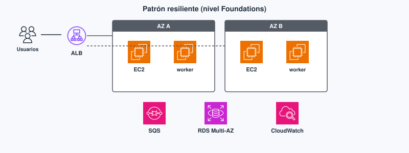
El análisis de PR701 (CE f) es decir qué pilar mejora si pasas de una EC2 con MySQL local a ALB + varias AZ + RDS, y qué aceptas a cambio.
Well-Architected Tool y Trusted Advisor¶
La Well-Architected Tool es un cuestionario en la consola organizado por pilares. Sirve para revisar una carga con preguntas guiadas (PERF, COST, SEC…). Creas un workload (la carga que describes), respondes y obtienes riesgos altos o medios por pilar. En muchas preguntas aparece el enlace a comprobaciones de Trusted Advisor, el servicio que sugiere mejoras de coste, seguridad, tolerancia a fallos y rendimiento según el plan de Support. Trusted Advisor no sustituye al marco WA: son comprobaciones automáticas; el marco es el vocabulario para discutir el diseño completo.
En Foundations basta saber que existen y para qué sirven. No son el entregable de PR701: la práctica de clase es el análisis en prosa. Si abres la Tool por curiosidad, no hace falta dejar un workload de lab colgado en la cuenta.
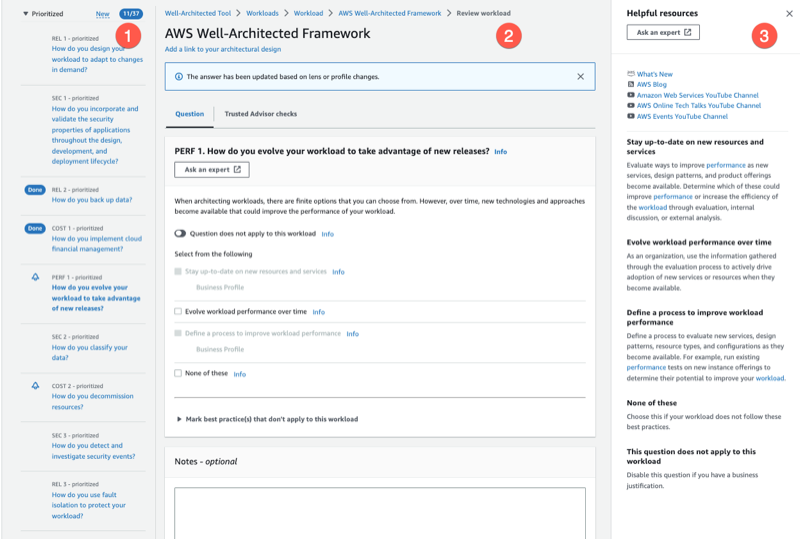
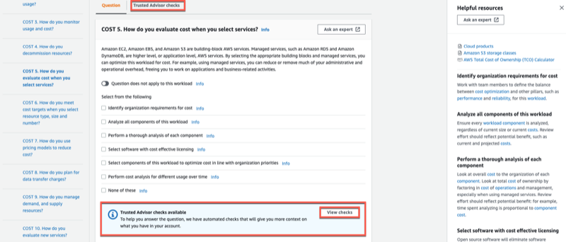
El Módulo 9 en Academy (sin laboratorio)¶
En AWS Academy Cloud Foundations, el Módulo 9 - Arquitectura en la nube no tiene ejercicio de laboratorio. Incluye secciones de teoría (principios de diseño del marco de buena arquitectura, los pilares, fiabilidad y disponibilidad, Trusted Advisor), el Student Guide y la evaluación de conocimientos del módulo. No vas a pulsar Start Lab aquí: el trabajo práctico de la quincena es de análisis.
La práctica de clase en este tema es PR701: partiendo de un diseño frágil, propones mejoras etiquetadas por pilar. Si haces la evaluación de conocimientos del Módulo 9, te ayuda a fijar vocabulario (por ejemplo distinguir SQS de SNS o asociar «varias AZ» a fiabilidad); no sustituye el entregable de las cinco mejoras. En el .md de PR701 puedes anotar si completaste esa evaluación; no es obligatoria para la rúbrica.
Errores frecuentes (diseño)¶
En un proyecto intermodular, el diseño frágil del enunciado de PR701 se parece a lo que montas la primera semana «para que compile»: una máquina, una base y un puerto abierto. El marco WA no te castiga por haber empezado así; te da nombres para decidir el siguiente paso sin improvisar. Cinco mejoras bien argumentadas valen más que un diagrama bonito sin pilares.
Si intentas «mejorar todo» a la vez sin decir qué pilar priorizas, el entregable se vuelve una lista de deseos. Elige cinco cambios distintos y, en cada uno, nombra el pilar principal y lo que empeora (coste, complejidad).
Usar SNS cuando necesitabas una cola de trabajo (o al revés) mezcla dos ideas distintas: la publicación/suscripción avisa a varios destinos; la cola guarda trabajos para un consumidor. Para «generar PDF cuando el worker pueda», SQS es la opción adecuada.
Declarar sostenibilidad sin ajustar tamaños ni apagar recursos ociosos deja el pilar en una frase vacía. En Foundations, reducir ociosidad es la prueba más creíble de ese pilar (y suele alinear con costes).
Proponer un entorno de varias cuentas o una malla de microservicios para una API de prácticas se sale del Módulo 9. Quédate en piezas Foundations: ALB, varias AZ, RDS, S3, IAM, SQS, CloudWatch.
Relación con Temas 3–6 y 8¶
Sin VPC multi-AZ (Tema 3), RDS Multi-AZ (Tema 6) y ALB/ASG (Tema 8), el discurso Well-Architected se queda en nombres sin piezas. Este tema nombra el equilibrio; los anteriores dan los bloques. El Tema 8 profundiza en escalado y monitorización: aquí solo situamos CloudWatch como excelencia operativa.
Si en el Tema 5 dejaste las fotos en el disco de la EC2, el pilar de fiabilidad (y a veces el de rendimiento) te empuja a S3. Si en el Tema 6 dejaste MySQL en la misma máquina que Express, fiabilidad y seguridad te empujan a RDS. PR701 es el momento de reunir esas decisiones en cinco frases con pilares, no de descubrir los servicios por primera vez.
Bloque Ampliación Practitioner (CLF-C02)¶
El Practitioner no pide un diagrama de cuarenta cajas: pide etiquetar el escenario con un pilar y no confundir una cola de trabajo (SQS) con una publicación/suscripción (SNS). Tampoco diseñas entornos de varias cuentas en este módulo. Preguntas típicas: «una empresa quiere reducir el tiempo de recuperación si falla una AZ» apunta a fiabilidad / Multi-AZ; «quiere cifrar datos en reposo» apunta a seguridad; «quiere pagar menos por instancias ociosas» apunta a optimización de costes (y a menudo sostenibilidad). Si el enunciado describe un mensaje que varios sistemas deben recibir, SNS; si describe un trabajo que un proceso procesará más tarde, SQS.
Para el CLF
Cifrar datos apunta a seguridad; las alarmas, a excelencia operativa; Spot o ajustar tamaños, a coste; varias AZ, a fiabilidad. SQS encaja cuando un worker procesará el mensaje; SNS, cuando varios suscriptores reaccionan al mismo evento. Ampliación y autocheck certificación en Certificación § Tema 7.
Videotutorial (Practitioner). AWS Well Architecting Framework (~1 h 52 min) — pilares del Well-Architected Framework. Vídeo: Profe Santos Cloud (YouTube).
Videotutorial¶
Principal (Foundations). AWS Architectura Discussions (~34 min).
Vídeo: Profe Santos Cloud (YouTube). Qué mirar: equilibrios (AZ, estado, coste); úsalo como vocabulario para PR701.
Actividad / práctica¶
PR701 — Mejorar un diagrama frágil¶
- PR701. (RA4 // d, f // PR 0–10). Partes de un diseño frágil (una EC2
t3.largeen una AZ, MySQL en la misma instancia, AMI manual, SG0.0.0.0/0en 3306, copias de seguridad en/home) y propones cinco mejoras en prosa, cada una etiquetada por pilar, sin montar el diagrama completo en consola.
Tareas: escribe cinco mejoras distintas. En cada una, en párrafos (no en una fórmula fija): el problema, el servicio o la práctica de Foundations, el pilar principal y qué mejora (y qué empeora: coste, complejidad). Opcional: haz la evaluación de conocimientos del Módulo 9 para fijar vocabulario.
Entrega: según Cómo entregar las prácticas — fichero PR701.md.
Guía de apoyo (no sustituye el enunciado): Soluciones · PR701.
| Criterio | Descripción | Puntos |
|---|---|---|
| Cinco mejoras | Completas y distintas | 0–4 |
| Pilares | Etiqueta correcta por mejora | 0–3 |
| Equilibrio | Qué mejora y qué empeora | 0–2 |
| Claridad | Prosa legible | 0–1 |
| Total | /10 |
Cómo leer un diseño frágil en cinco minutos¶
Empieza repasando el diseño: ¿una sola AZ? ¿estado en el disco local? ¿secretos en la AMI? ¿SG abierto? ¿sin alarmas? Prioriza seguridad y fiabilidad antes que adornos de rendimiento. Propón el cambio mínimo Foundations (RDS, Multi-AZ, ALB, S3, IAM, CloudWatch, SQS). Declara el coste o la complejidad que aceptas a cambio. Eso es el espíritu de PR701 y de muchas preguntas CLF del dominio de conceptos y arquitectura ligera.
Autocheck del tema¶
Comprueba pilares y desacoplo de este tema. CLF: Certificación § Tema 7.
- Cifrar EBS (Elastic Block Store) y forzar HTTPS: pilar que etiquetas primero…
a) sostenibilidad · b) seguridad · c) coste - Pasar de una AZ a dos con ALB: efecto principal…
a) fiabilidad · b) sostenibilidad · c) «más barato siempre» - V/F. SQS encaja para que un pico de pedidos no tumbe al worker que genera PDFs.
- CloudFormation es…
a) un pilar Well-Architected · b) una práctica / IaC que ayuda a la excelencia operativa - V/F. Este módulo exige montar un entorno de varias cuentas (landing zone).
Soluciones
-
b.
-
a.
-
Verdadero (cola de trabajo).
-
b.
-
Falso.
Glosario¶
Well-Architected AWS Well-Architected Framework (marco de buena arquitectura): conjunto de seis pilares para revisar cargas en la nube. Nivel Practitioner: reconocer el pilar ante un escenario y argumentar el equilibrio.
excelencia operativa Pilar que cubre despliegue, observación y aprendizaje tras incidentes.
seguridad (pilar) Pilar de identidad, protección de datos y detección.
fiabilidad Pilar de tolerancia a fallos y recuperación (varias AZ, conmutación, copias).
eficiencia del rendimiento Pilar de elección y uso adecuado de tipos de recurso.
optimización de costes Pilar de evitar gasto inútil y conocer el desglose.
sostenibilidad Pilar de uso eficiente de recursos y menor ociosidad.
resiliencia Capacidad de seguir prestando servicio o recuperarse cuando fallan componentes.
desacoplo Diseño en el que productor y consumidor no tienen que estar disponibles a la vez (p. ej. con una cola).
SQS Simple Queue Service (servicio simple de colas): cola de mensajes para trabajos. El productor encola aunque el worker esté caído o saturado.
SNS Simple Notification Service (servicio simple de notificaciones): publicación/suscripción hacia varios destinos.
IaC Infrastructure as Code (infraestructura como código): definir infraestructura en ficheros (p. ej. CloudFormation) para desplegar de forma repetible.
Well-Architected Tool Cuestionario en consola por pilares para revisar una carga; a menudo enlaza con Trusted Advisor.
Trusted Advisor Servicio de recomendaciones (coste, seguridad, tolerancia a fallos, rendimiento…) según el plan de Support.
Tema 8. Escalado, monitorización y cierre CLF-C02¶
Si el Tema 7 dice por qué varias zonas de disponibilidad (AZ, Availability Zone), este dice cómo reparte el tráfico un ALB (Application Load Balancer, balanceador de carga de aplicaciones), cómo un ASG (Auto Scaling group, grupo de autoescalado) sigue la demanda y cómo te enteras (CloudWatch) antes que el usuario. Cierra RA3 y RA4, y cierra la 2.ª evaluación del módulo con la preparación CLF-C02 (AWS Certified Cloud Practitioner). Núcleo Foundations Módulo 10, más el catálogo corto de servicios que el examen nombra y Foundations apenas toca. Los términos clave están en el glosario.
Piensa este tema como la capa que mantiene viva la materia ya vista: la VPC (Virtual Private Cloud, nube virtual privada, Tema 3) y el cómputo (Tema 4) son la base; ELB (Elastic Load Balancing, balanceo de carga elástico), el ASG y CloudWatch son cómo reparte, escala y observas bajo carga. El catálogo CLF del final es reconocimiento rápido de servicios: una frase de cuándo sí basta más que un listado de nombres.
Al empezar
Empieza por el cuestionario inicial. Si ya justificaste Multi-AZ en el Tema 7, aquí lo montas: tráfico, capacidad y alarmas en la consola del lab.
Propuesta didáctica¶
RA3. Diseña y configura redes virtuales y servicios de cómputo en la nube, aplicando buenas prácticas de seguridad, estrategias de balanceo de carga, escalado automático y aprovechando tecnologías serverless, contenedores y máquinas virtuales según casos de uso específicos.
RA4. Gestiona servicios de almacenamiento y bases de datos en la nube, seleccionando tecnologías adecuadas para casos específicos, y diseña arquitecturas escalables y resilientes utilizando herramientas de monitoreo y optimización para mejorar el rendimiento.
Criterios de evaluación¶
RA3
- e) Se ha llevado a cabo la configuración y gestión de balanceo de carga y escalado automático.
- f) Se han desarrollado prácticas relacionadas con la optimización de recursos computacionales.
RA4
- e) Se ha hecho uso de herramientas de monitoreo y recomendaciones de optimización.
- f) Se ha participado en actividades que simulen el análisis y mejora de arquitecturas existentes.
Contenidos¶
- ELB (ALB / NLB), comprobaciones de estado (health checks).
- Auto Scaling: mínimo, deseado y máximo; métricas; apagar entornos de desarrollo.
- CloudWatch, CloudTrail, Config, Trusted Advisor, Health.
- Repaso CLF-C02: IA/ML, analítica, integración (reconocer el servicio).
Programación de aula (orientativa)¶
| Quincena | En tutoría | Trabajo autónomo / evidencias |
|---|---|---|
| Q10 | ELB + ASG + CloudWatch | PR801, AC802; Autocheck del tema |
| Q11 | Repaso CLF-C02 y cierre de la 2.ª evaluación | Hub Certificación; prueba objetiva según Aules |
Cuestionario inicial¶
Responde con lo que sepas
- ¿Qué problema resuelve un ALB delante de varias instancias de tu API (interfaz de programación de aplicaciones)?
- ¿Para qué sirve la comprobación de estado (health check) del balanceador?
- En un ASG, ¿qué significan mínimo, deseado y máximo en una frase cada uno?
- ¿CloudWatch o CloudTrail si quieres alarmar CPU al 80 %?
- Al acabar el lab, ¿por qué dejar mínimo = 0 o terminar las instancias evita sorpresas en la factura?
Este cuestionario es solo para ti: te ayuda a ver qué dominas ya y qué te falta antes o mientras lees el tema. No se entrega en Aules; respóndelo con lo que sepas y, cuando quieras contrastar, abre el bloque Soluciones (autoevaluación) debajo o el índice en Soluciones.
Soluciones (autoevaluación)
-
Reparte el tráfico HTTP / HTTPS (Hypertext Transfer Protocol / Secure) entre varias instancias y deja de mandar a las que fallan; evita una sola instancia como punto único de fallo.
-
La comprobación de estado comprueba si el destino responde (p. ej.
/health); si no, el ALB no le envía tráfico. -
Mínimo: suelo que no baja; deseado: cuántas quieres ahora; máximo: techo al escalar.
-
CloudWatch (métricas y alarmas). CloudTrail audita llamadas a la API de AWS.
-
Con mínimo = 0 o al terminar las instancias dejas de pagar capacidad ociosa del lab; si no, el ASG o las instancias siguen facturando.
Bloque Foundations (Módulo 10)¶
Elastic Load Balancing¶
Qué es en este caso. Un balanceador de carga reparte peticiones entre varios destinos (instancias, contenedores…) y deja de enviar tráfico a los que fallan la comprobación de estado (health check). Sin esa comprobación, sigues mandando al proceso que ya no responde /health. La familia de servicios se llama ELB. Para una API HTTP el tipo habitual es el ALB (capa 7: host, ruta (path)). El NLB (Network Load Balancer, balanceador de carga de red) trabaja en capa 4 (TCP/UDP) cuando necesitas muy alto rendimiento o protocolos que no son HTTP. El Gateway Load Balancer (GWLB) aparece en catálogos y en el examen como opción para aparatos de red (firewalls o sondas virtuales); en Foundations apenas lo usas. El Classic Load Balancer (CLB) es legado: no es la respuesta moderna en el CLF-C02.
En la práctica. En un proyecto de DAW el ALB permite reglas del estilo «/api/* hacia el grupo de la API» y «/ hacia el front». No sustituye a nginx en todos los casos, pero en Foundations es el punto de entrada gestionado que encaja con varias AZ y con el ASG. El cliente (navegador o app) habla con el nombre DNS (Domain Name System, sistema de nombres de dominio) del ALB, no con la IP de una EC2 concreta. Si apuntas un registro A de DNS a la IP pública de una sola instancia, ese registro se queda obsoleto en cuanto la máquina se sustituye o cae; el nombre DNS del ALB se mantiene aunque cambien los destinos detrás.
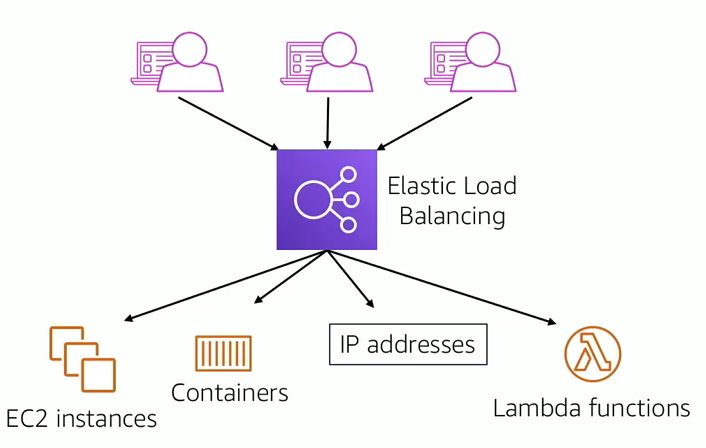
Características ELB (Foundations)
- Distribuye la carga entre varias instancias (o destinos).
- Detecta destinos no sanos (unhealthy) y deja de mandarles tráfico.
- Encaja con varias AZ: si cae una zona, el resto sigue sirviendo.
| Tipo | Uso típico |
|---|---|
| ALB | HTTP/HTTPS (capa 7): host, ruta y APIs REST de un proyecto de DAW. |
| NLB | TCP/UDP o cargas que piden muy alto rendimiento en capa 4. |
| GWLB | Appliances de red; en el CLF basta reconocer el nombre. |
| CLB clásico | Legado; no es la respuesta moderna en el examen. |
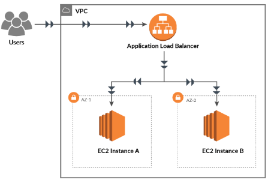
Grupo de destino y comprobación de estado¶
El grupo de destino (target group) es la lista de destinos (instancias, IPs…) a los que el ALB envía el tráfico de un listener (el puerto y protocolo por los que el balanceador escucha, por ejemplo 80/HTTP o 443/HTTPS). La comprobación de estado pregunta periódicamente a una ruta (por ejemplo / o /health): si la respuesta no es la esperada, el destino pasa a unhealthy y el ALB deja de mandarle peticiones nuevas. Un buen diseño de comprobación mira una ruta que diga «la app está lista», no solo «el puerto TCP está abierto».
El ALB en varias AZ complementa el ASG: si una AZ cae, el balanceador deja de mandar a esa zona y sigue sirviendo con las demás. Para eso necesitas el ALB asociado a subredes en al menos dos AZ; una sola subred no te da alta disponibilidad real aunque tengas dos instancias en la misma zona.
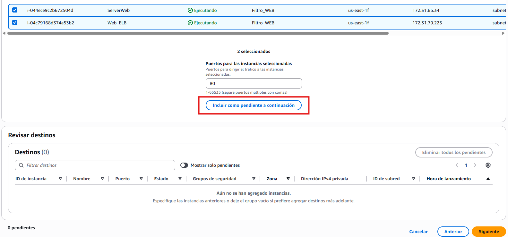
Práctica ALB (pasos que verás en consola)
- Elige al menos dos AZ (y una subred en cada una): si no, no hay alta disponibilidad real.
- Crea el grupo de destino y registra las instancias; la comprobación de estado debe apuntar a una ruta que tu app responda (p. ej.
/o/health). - Asocia un SG (grupo de seguridad) al ALB que permita el tráfico web (80/443) según el enunciado; las instancias suelen aceptar tráfico desde el SG del balanceador, no desde todo internet.
- El DNS del ALB es el punto de entrada; deja de apuntar registros A de DNS a una sola EC2.
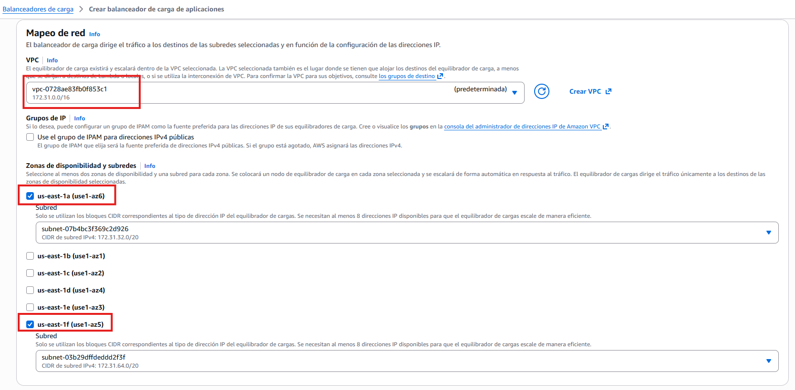
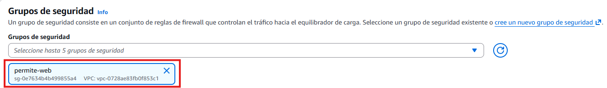
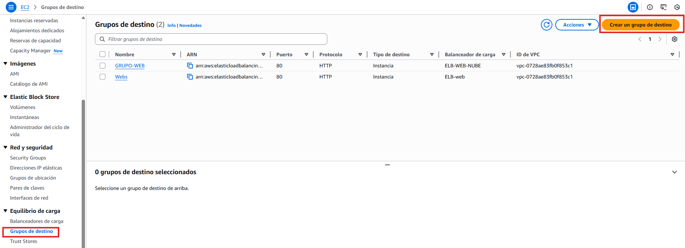
Cuando solo tienes una EC2 con IP pública y un registro A de DNS apuntando a ella, si cae la máquina cae el servicio. Con un ALB delante, comprobación de estado a /health y dos instancias en AZ distintas, el usuario sigue usando el mismo nombre DNS y tú dejas de depender de una sola instancia. En el lab, a veces compruebas primero que cada instancia sirve la página (por ejemplo una marca personalizada en el HTML) y después pasas el tráfico por el DNS del ALB: así ves que el balanceador reparte y no que «una sola máquina responde por casualidad».
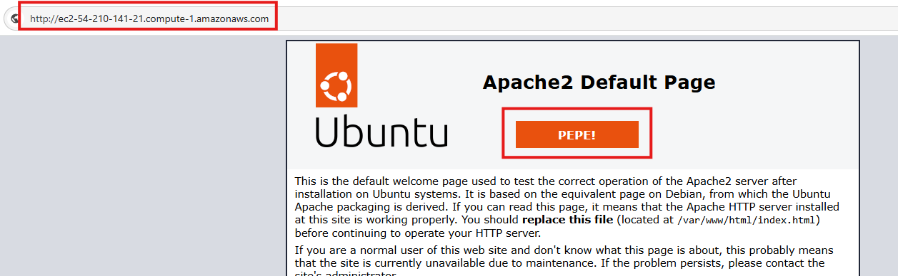
| Examen CLF | Clase DAW / empresa |
|---|---|
| El ALB reparte HTTP/HTTPS y usa comprobaciones de estado. | En el lab documentas al menos un destino sano (healthy). |
| El NLB no es el ALB: capa 4 frente a capa 7. | Para una API REST eliges ALB salvo que el enunciado diga otra cosa. |
| El DNS del ALB sustituye el registro A a una sola EC2. | Deja de pegar la IP pública de la instancia en el front. |
Auto Scaling¶
Qué es en este caso. Un Auto Scaling Group mantiene un conjunto de instancias EC2 con tres números: mínimo (suelo: el grupo no baja de ahí), deseado (cuántas quieres ahora) y máximo (techo: no escala por encima aunque la métrica diga «más»). Escala según una política de escalado ligada a métricas (CPU, peticiones) o a un horario (entorno de desarrollo a cero por la noche). La elasticidad significa que la capacidad sigue a la demanda, no una máquina virtual eterna «por si acaso».
En la práctica. En una API de prácticas un buen diseño es: mínimo bajo en el lab, deseado acorde a la demo, máximo con techo consciente. Programar un horario que baje a cero por la noche evita la factura del fin de semana. En producción el mínimo suele ser ≥ 2 si quieres sobrevivir a una AZ; en el instituto un mínimo = 2 sin apagar es un error de coste. Optimizar (CE f del RA3) no es poner máximo = 20 «por si acaso» en la cuenta del Learner Lab: es ajustar el tamaño de la instancia, mantener y actualizar la AMI y la app, y dejar un techo que no te arruine el mes.
Cuándo no subir el máximo del ASG. Si la base de datos o el ALB no aguantan, o si el lab no tiene presupuesto, subir el máximo solo multiplica la factura. Primero ajusta el tamaño de los recursos y las comprobaciones de estado; después la elasticidad. Una política que escala por CPU al 70 % no arregla una app que responde 500 en /health: el ASG lanzará más instancias no sanas y el ALB seguirá sin mandarles tráfico útil. La política de escalado no sustituye mantener y actualizar la aplicación ni la AMI: solo mueve el número de instancias.
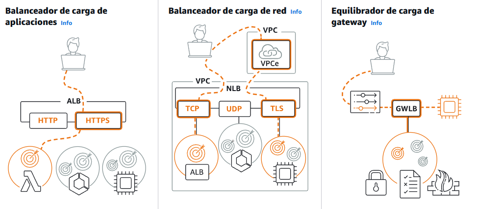
El ASG suele lanzar instancias a partir de una plantilla de lanzamiento (launch template) con una AMI (Amazon Machine Image), un tipo de instancia y un SG. La AMI es la foto del disco desde la que nace cada instancia nueva: si no tiene la app lista (o el user data no la deja lista), el ASG crea máquinas que el ALB marca como no sanas. En ese caso escalas problemas, no capacidad útil. Mientras pruebas, deja el mínimo ≥ 1 según el enunciado; al cerrar PR801, baja el mínimo (y el deseado) a 0 o termina las instancias para no dejar factura.
| Examen CLF | Clase DAW / empresa |
|---|---|
| Mínimo, deseado y máximo definen el ASG. | En el lab anotas los tres valores mientras pruebas. |
| El ASG no sustituye elegir bien el tipo de instancia. | Ajusta el tamaño antes de subir el máximo. |
| Bajar a mínimo = 0 deja de pagar capacidad ociosa. | Al cerrar PR801, mínimo = 0 o termina los recursos. |
Monitorización¶
Qué es en este caso. Observar es cómo detectas CPU al 10 % en un m5.2xlarge (coste) o una instancia no sana (fiabilidad). Cada servicio responde a una pregunta distinta: no uses CloudTrail para mirar la CPU ni Trusted Advisor para auditar quién borró un SG ayer.
| Servicio | Pregunta que responde |
|---|---|
| CloudWatch | ¿Qué métricas y logs tiene el recurso? ¿Cuándo disparo una alarma? |
| CloudTrail | ¿Quién llamó a la API de AWS y cuándo? (auditoría; Tema 2) |
| Config | ¿La configuración del recurso sigue cumpliendo la regla (p. ej. SG abierto)? |
| Trusted Advisor | ¿Hay comprobaciones de coste, seguridad o cuotas que deba mirar? |
| AWS Health | ¿AWS tiene un incidente en la región o en un servicio que uso? |
CloudWatch trabaja con métricas (números en el tiempo: CPU, latencia, UnHealthyHostCount), alarmas (umbral + acción: notificar, escalar, etc.) y logs (texto de aplicación o servicio). Una alarma útil en lab: CPU alta sostenida, o UnHealthyHostCount mayor que 0. Una alarma ruidosa cada minuto sin umbral ni acción no te ayuda a estudiar ni a operar. CloudWatch sin ALB/ASG igual sirve (métricas de una EC2), pero el valor didáctico del Módulo 10 es ver las tres piezas juntas.
CloudTrail registra llamadas a la API de AWS: quién creó el ALB, quién cambió el ASG. No es el sitio donde miras CPUUtilization. Config evalúa reglas de configuración (por ejemplo «¿hay un SG con 22 abierto a internet?»). Trusted Advisor resume recomendaciones según tu plan de Support (coste, seguridad, cuotas…). AWS Health te dice si hay un incidente de AWS en la región o en un servicio que usas: útil para no perder media hora depurando tu app cuando el problema es del proveedor.
CPU al 10 % un mes en m5.2xlarge es un hallazgo de coste (y de sostenibilidad del Tema 7), no de «el servidor va fino». En el lab: captura un destino sano y una alarma o una métrica, no solo el diagrama.
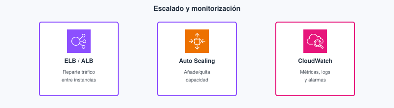
El ALB reparte en capa 7 (host/ruta); CloudWatch te enseña el log stream o la métrica cuando algo falla. Los logs de una función Lambda del Tema 4 también viven en CloudWatch Logs, pero en PR801 la evidencia pedida es una alarma o métrica de EC2, ALB o grupo de destino, no un volcado de logs de Lambda «porque también es CloudWatch».


Para el repaso CLF, Skill Builder concentra cursos y materiales oficiales de preparación (p. ej. Cloud Practitioner Essentials): no confundas ese portal con la consola del lab ni con el LMS de Academy.

Cómo encajan ALB, ASG y la alarma¶
El ASG lanza instancias en varias AZ según el mínimo, el deseado y el máximo. El ALB solo envía tráfico a las que pasan la comprobación de estado del grupo de destino. CloudWatch alarma si el número de destinos no sanos sube o si la CPU se dispara. Si escalas sin comprobación de estado útil, multiplicas instancias que no sirven. Si pones una alarma sin ALB ni ASG, solo miras una instancia suelta: útil para un lab corto, pero no es el diseño que estudias en el Módulo 10.
En un proyecto intermodular el flujo mental es: el usuario llega al DNS del ALB; el ALB elige un destino sano; el ASG mantiene suficientes destinos; la alarma te avisa cuando eso se rompe. Si terminas una instancia a propósito (o el lab te pide simular una caída), el ASG debería acercarse otra vez al deseado y el ALB debería dejar de mandar a la caída en cuanto falle la comprobación de estado. PR801 te pide evidencia de las tres piezas y, al cerrar, bajar el mínimo a 0 o terminar recursos para no dejar factura.
Relación con otros temas¶
La VPC y las subredes del Tema 3 son el suelo donde colocas el ALB y las instancias del ASG: sin dos AZ y sin SG coherentes, el balanceador no te da la alta disponibilidad que dibujaste en el Tema 7. El cómputo del Tema 4 (EC2, AMI, tipo de instancia) es lo que el ASG lanza; si la AMI o el user data no dejan la app lista, el ALB marca unhealthy. IAM (Tema 2) decide quién puede crear el ALB o cambiar el ASG; CloudTrail registra esas llamadas. RDS Multi-AZ del Tema 6 y el ALB + ASG de este tema responden a preguntas distintas: la BD escribe con conmutación; el front reparte lecturas HTTP. El Well-Architected del Tema 7 te pide justificar el equilibrio entre fiabilidad, coste y complejidad; aquí ejecutas ese equilibrio con mínimo, deseado, máximo y una alarma que no sea ruido.
El lab del Módulo 10: Ejercicio de laboratorio 6 - Escalado y balanceo de la carga de su arquitectura¶
En tu clase de Cloud Foundations, el lab del Módulo 10 se llama Ejercicio de laboratorio 6 - Escalado y balanceo de la carga de su arquitectura. Trabajas en la región que indique el lab. No confundas este laboratorio del módulo con el Learner Lab genérico: aquí sigues el enunciado del Módulo 10 paso a paso.
Primero creas un balanceador (ALB) con un grupo de destino y destinos en varias AZ, según el enunciado. Configuras la comprobación de estado hacia una ruta que la aplicación responda. Asocias el SG del balanceador y el de las instancias como indique el lab (el tráfico web suele entrar por el ALB).
Después compruebas el estado de las instancias en el grupo de destino: al menos un destino debe aparecer sano. Sin eso, el ALB no está repartiendo de verdad. Si el enunciado te pide probar la página de cada instancia o del DNS del ALB, hazlo y deja captura.
Luego configuras un grupo de Auto Scaling con mínimo, deseado y máximo coherentes con el enunciado, vinculado al mismo diseño (plantilla de lanzamiento y grupo de destino). Compruebas que el tráfico se reparte entre destinos sanos y que el grupo reacciona a la carga o a una instancia caída, según indique el enunciado (más instancias, sustitución, etc.). Añades o documentas una alarma de CloudWatch (CPU o destinos no sanos) o una captura de métrica: esa es la evidencia que pide la práctica.
Al terminar, bajas el mínimo a 0 o terminas los recursos del lab para no dejar capacidad facturando. En PR801 dejas capturas del destino sano, de los valores del ASG, de la alarma o métrica y de la limpieza. Respecto al mapa del proyecto de DAW (API detrás de ALB, capacidad elástica, observación), este lab practica balanceo, Auto Scaling y una alarma. Simplifica el resto del producto (no montas RDS ni el front completo).
Errores frecuentes (escala y observación)¶
Si el ALB tiene una comprobación de estado que siempre marca sano aunque la app devuelva 500, sigues enviando tráfico a un proceso roto. Apunta la comprobación a una ruta real y mira el código de respuesta esperado.
Dejar el ASG con mínimo = 2 al acabar el lab es la forma más habitual de llevarse un susto en la factura del Learner Lab: la capacidad sigue facturando el fin de semana. Baja a mínimo = 0 o termina instancias y deja captura de limpieza.
Mirar la CPU en CloudTrail te deja en la herramienta equivocada: CloudTrail audita llamadas a la API de AWS; la CPU es métrica de CloudWatch. Pegar logs de una Lambda como «observabilidad» de esta práctica tampoco cumple: aquí quieres alarma o métrica de EC2, ALB o grupo de destino.
Si confundes «aprobar CLF-C02» con «compensar un RA suspendido» en este módulo, el +1 de certificación no te salva un resultado de aprendizaje suspenso: los RA no se compensan.
Cierre del módulo (sin 3.ª evaluación)¶
La 2.ª evaluación cierra Temas 5–8. Este tema concentra ELB, ASG, CloudWatch y el repaso de catálogo CLF. No hay «cierre» aparte ni 3.ª evaluación en 2.º de grado superior: el módulo acaba antes de la formación en empresa (FE).
Para el cierre CLF: Certificación (serie, tests, Skill Builder). Ocho tarjetas bien hechas (AC802) superan un listado largo de nombres sin frase de uso. Antes del examen, repasa también los dominios del CLF-C02 en el hub: no hace falta memorizar cada servicio de analítica o IA, sí reconocer el nombre cuando el enunciado describe el caso.
Si llegas a la prueba objetiva de la 2.ª evaluación con el lab hecho y con las capturas de PR801 ordenadas, el tema te habrá servido dos veces: como práctica de consola y como vocabulario del examen. Si solo memorizas siglas sin haber visto un destino sano, en el CLF te confundirán NLB y ALB en cuanto el enunciado hable de ruta o de TCP.
Bloque Ampliación Practitioner (CLF-C02)¶
Con ALB, Auto Scaling y CloudWatch cierras el núcleo Foundations de este tema. El catálogo corto de servicios (IA, analítica, colas, integración de eventos…) y el tono de examen viven en el hub de Certificación. En el examen, una pregunta típica contrapone CloudWatch (métrica/alarma) frente a CloudTrail (auditoría de API), o ALB (HTTP) frente a NLB (TCP). Otra te pide el servicio de recomendaciones (Trusted Advisor) o el panel de incidentes del proveedor (AWS Health). No hace falta profundidad de ML o de data lakes: basta la frase de reconocimiento.
Para el CLF
La comprobación de estado deja fuera lo que falla; el ASG se entiende con mínimo, deseado y máximo. CloudWatch mira métricas y alarmas; CloudTrail audita la API. En el catálogo basta reconocer el servicio con una frase de cuándo sí y cuándo no. Detalle y autocheck certificación en Certificación § Tema 8.
Para seguir hacia el examen, en Certificación tienes la serie Santos, los tests de práctica y el orden sugerido.
Videotutorial¶
Principal (Foundations). ALB ASG PublicSubnet (~27 min).
Vídeo: Profe Santos Cloud (YouTube). Qué mirar: comprobación de estado del ALB y mínimo / deseado / máximo del ASG; al acabar, mínimo = 0 o terminar recursos.
Extra (opcional). CloudWatch - CloudTrail - EventBridge (~22 min) — métrica y alarma frente a auditoría de API. Vídeo: Profe Santos Cloud (YouTube).
Actividad / práctica¶
PR801 — Escalar y observar¶
- PR801. (RA3 // e, f // RA4 // e // PR 0–10). Completas el lab Academy del Módulo 10 (Ejercicio de laboratorio 6 - Escalado y balanceo de la carga de su arquitectura): ALB, ASG y una señal en CloudWatch, sin dejar el lab facturando.
Tareas: crea o completa el ALB con destinos en varias AZ; documenta al menos un destino sano; configura el ASG (mínimo, deseado, máximo) según el enunciado; comprueba que el tráfico se reparte y que el grupo reacciona a la carga o a una instancia caída según el lab; deja una alarma CloudWatch (CPU o destinos no sanos) o captura de métrica; al acabar, mínimo = 0 o termina recursos y deja captura de limpieza.
Entrega: según Cómo entregar las prácticas — fichero PR801.md (o ZIP + img/ si hay capturas).
Guía de apoyo (no sustituye el enunciado): Soluciones · PR801.
| Criterio | Descripción | Puntos |
|---|---|---|
| ALB | Destino sano documentado | 0–3 |
| ASG | Mínimo / deseado / máximo coherentes en el lab | 0–3 |
| CloudWatch | Alarma o métrica | 0–2 |
| Limpieza | Mínimo = 0 o recursos terminados | 0–2 |
| Total | /10 |
AC802 — Mapa de servicios CLF¶
- AC802. (RA3 // f // RA4 // f // AC 0–1). Preparas ocho tarjetas de reconocimiento (servicio, una frase, dominio CLF-C02). Sin dumps de examen: calidad frente a cantidad.
Tareas: elige ocho servicios del catálogo visto en el tema / hub; una frase de cuándo sí; dominio aproximado del CLF-C02.
Entrega: según Cómo entregar las prácticas — fichero AC802.md.
Guía de apoyo (no sustituye el enunciado): Soluciones · AC802.
| Criterio | Descripción | Puntos |
|---|---|---|
| Ocho tarjetas útiles | Servicio + frase + dominio; sin dump | 0–1 |
| Total | /1 |
Autocheck del tema¶
Cierre Foundations (ELB/ASG/CloudWatch). El catálogo CLF largo y el estilo examen están en Certificación § Tema 8.
- Un ALB trabaja sobre todo en…
a) capa 3 (IP) · b) capa 7 (HTTP/HTTPS) · c) solo como NAT de VPC - ASG con mínimo = 2 en dos AZ: si cae una AZ, ¿qué esperas a alto nivel?
- V/F. Miras la CPU de la instancia en CloudTrail.
- Empareja: ALB · ASG · CloudWatch con: (a) reparte a destinos sanos · (b) mínimo / deseado / máximo · (c) métricas y alarmas
- V/F. Aprobar CLF-C02 te aprueba automáticamente un RA suspendido en este módulo.
Soluciones
-
b.
-
Que el ASG y el ALB sigan sirviendo con capacidad en la AZ viva (si el diseño es multi-AZ); no «todo caído».
-
Falso — la CPU se mira en CloudWatch; CloudTrail audita la API.
-
El ALB encaja con (a) repartir a destinos sanos; el ASG, con (b) mínimo / deseado / máximo; CloudWatch, con (c) métricas y alarmas.
-
Falso — los RA no se compensan; el +1 no aprueba un RA.
Glosario¶
ELB Elastic Load Balancing (balanceo de carga elástico): familia de balanceadores de AWS que reparte tráfico entre destinos sanos (ALB, NLB, GWLB…). Sin comprobaciones de estado, puede seguir enviando a un proceso que ya no responde.
ALB Application Load Balancer (balanceador de carga de aplicaciones): balanceador de capa 7 (HTTP/HTTPS), con reglas por host y ruta. Habitual delante de APIs web. Encaja con varias AZ y con un ASG detrás.
NLB Network Load Balancer (balanceador de carga de red): balanceador de capa 4 (TCP/UDP) para alto rendimiento o protocolos que no son HTTP.
target group Grupo de destino: conjunto de destinos registrados al que un listener del ALB envía el tráfico.
health check Comprobación de estado: petición periódica del balanceador (o del ASG) para saber si un destino está sano.
ASG Auto Scaling Group (grupo de autoescalado): conjunto de instancias EC2 con mínimo, deseado y máximo, que crece o decrece según métricas o horarios.
política de escalado Regla que dice cuándo y cómo cambia el deseado del ASG (por métrica, por escalones o por horario).
CloudWatch Servicio de métricas, logs y alarmas. Responde a «¿qué está pasando ahora en el recurso?». No sustituye a CloudTrail.
CloudTrail Registro de llamadas a la API de AWS (quién hizo qué y cuándo). Auditoría, no métrica de CPU.
Config Servicio que evalúa si la configuración de los recursos cumple reglas (p. ej. SG demasiado abierto).
Trusted Advisor Comprobaciones recomendadas de coste, seguridad, tolerancia a fallos, rendimiento y cuotas según el plan de Support.
AWS Health Panel de eventos e incidentes que afectan a servicios o regiones de tu cuenta.
Certificación¶
Esta página es el hub de preparación del examen AWS Certified Cloud Practitioner (CLF-C02). Aquí concentras notas de ampliación por tema, autochecks estilo examen, la serie Santos, apuntes, tests y la sección oficial de Skill Builder. Los Temas 1–8 siguen siendo el núcleo del módulo (Academy Cloud Foundations); el cuestionario de cada tema es de clase, y en este hub el tono es el del examen.
Va dirigida a todo el alumnado del módulo y también a quien quiera adelantar la preparación del examen a su ritmo (empresa, refuerzo, repaso entre quincenas…). Empieza por el #orden, no por memorizar baterías.
Antes de Skill Builder, pasa por Acceso: allí solo entras en Academy y activas el Builder ID; el estudio del examen continúa aquí.
Examen CLF, RA del módulo y +1¶
Tres cosas distintas; no las mezcles:
- Examen CLF-C02 (AWS). La nota del examen es global: un dominio más flojo puede compensarse con otros, según las reglas de AWS del propio examen.
- Este módulo (INP). Los RA no se compensan: hay que superar cada resultado de aprendizaje. Suspender uno no se salva con otro.
- El +1 por certificación suma a la nota final del módulo (puede llegar a 11) y no recupera un RA suspendido. Detalle en Evaluación · +1 Cloud Practitioner.
El plazo, la evidencia y dónde entregarla se indican en Aules.
Serie Profe Santos Cloud¶
Serie Cloud Practitioner (Profe Santos Cloud)
Trilogía 2026 en orden + Bridging. Son sesiones largas: ve por bloques según lo que te falle (conceptos, seguridad, catálogo). Vídeo: Profe Santos Cloud (YouTube).
- Sesión 1 Cloud Practitioner 2026 (~1 h 51 min)
- Sesión 2 Cloud Practitioner 2026 (~1 h 52 min)
- Sesión 3 Cloud Practitioner 2026 (~1 h 46 min)
- AWS Bridging to Certification (~1 h 55 min) — cierre hacia el examen; no es dump de preguntas.
Apuntes externos¶
Repaso rápido en inglés:
- AWS Certified Cloud Practitioner Notes (kananinirav) — notas cortas CLF-C02 en GitHub.
- AWS CP Notes (Kalonji Labs) — apuntes web por módulos.
Tests de práctica¶
No son oficiales de AWS. Sirven para medir huecos, no para memorizar la batería.
- SimulaDo CLF-C02 — quiz online (BASIC 35 / FULL 65).
- Practice exams (kananinirav) — exámenes de práctica con respuestas; también en kananinirav.com.
Skill Builder¶
- AWS Skill Builder — Exam Prep — preparación oficial.
- Portal: skillbuilder.aws. Activa la cuenta desde Academy / Acceso (Builder ID).
- Guía del examen: AWS Certified Cloud Practitioner (CLF-C02).
Cómo conseguir el voucher del CLF sin pagar el examen: Vouchers de certificación (examen de práctica oficial en Skill Builder).
Si el centro publica un PDF de preparación en Aules, úsalo desde allí. En este sitio no hay un fichero de preparación autorizado.
Orden sugerido¶
- Temas 1–8 (Foundations + Autocheck del tema + caja Para el CLF).
- Notas + autocheck certificación de este hub (#tema-1 … #tema-8).
- Serie Santos (#serie-santos).
- Tests (#tests) — terceros, no oficiales.
- Skill Builder Exam Prep (#skill-builder).
Notas CLF por tema¶
Lee el Foundations del tema primero; luego la prosa de aquí; luego el Autocheck certificación. Los quizzes de clase viven en cada tema (otro enunciado, misma idea).
Tema 1 — Fundamentos¶
Apuntes del tema · refuerzo vídeo: Sesión 1
Dominios. Cloud Concepts (~24 %) y Billing (~12 %), más región / AZ / edge del dominio Technology.
- Value proposition: el examen quiere la causa (escala, HA, elasticidad, agilidad, OPEX), no el eslogan. Trampa: «más barato siempre».
- CAF y 7 R: etiquetas de migración. Rehost de MySQL a EC2 ≠ replatform a RDS.
- Economía: On-Demand / RI / Spot / Savings Plans, Organizations, tags, Pricing Calculator, Support. Trampa: confundir tipo de instancia con modelo de precio.
- Región–AZ–edge: varias AZ = edificios en la misma región; edge ≠ BD. Varias regiones = DR, latencia o soberanía.
- Acceso: consola, CLI, SDK/API; CloudFormation como idea. Identificar, no diseñar un landing zone.
Autocheck certificación¶
- Una pyme quiere dejar de comprar servidores y pagar solo por lo que consume el mes. ¿Qué beneficio de la nube encaja mejor como respuesta de examen?
a) CapEx alto garantizado · b) gasto variable / OPEX · c) «siempre más barato que on-prem» - Un cliente mueve VMs a EC2 sin cambiar SO ni motor de BD. ¿Qué estrategia de las 7 R describe mejor el movimiento?
- El equipo propone Spot para el checkout de pagos 24/7. ¿Cuál es el best next step más sensato en CLF?
a) Aceptar Spot sin más · b) rechazar Spot para esa carga y valorar On-Demand/RI/Savings · c) cambiar el tipo at3.micro - «Ponemos la BD en una edge location para bajar latencia.» ¿Qué falla en el razonamiento?
- Necesitas estimar el coste de un diseño antes de desplegar. ¿Qué herramienta encaja mejor: Pricing Calculator o Cost Explorer?
Soluciones (certificación · Tema 1)
-
b (OPEX / pay-as-you-go). «Siempre más barato» es trampa.
-
Rehost (lift-and-shift).
-
b — Spot puede interrumpirse; checkout no tolera eso.
-
Edge/CloudFront cachea contenido; no hospeda RDS «en el borde».
-
Pricing Calculator (estimación previa); Cost Explorer mira gasto ya ocurrido.
Más práctica: #tests · #serie-santos · #skill-builder.
Tema 2 — Seguridad e IAM¶
Apuntes del tema · refuerzo vídeo: Sesión 2
Dominio más pesado (~30 %). Reconoce el logo; no montas un SOC.
| Servicio / idea | Para el examen |
|---|---|
| IAM Identity Center | SSO de organización |
| Secrets Manager / SSM Parameter Store | Secretos fuera del código |
| CloudTrail | Quién llamó a qué API |
| CloudWatch | Métricas/CPU/alarmas — no es CloudTrail |
| AWS Config | Cómo estaba configurado el recurso |
| GuardDuty / Inspector / Security Hub | Detección y hallazgos |
| Shield / WAF | DDoS / reglas HTTP en el borde |
| KMS | Claves de cifrado |
| Macie | Datos sensibles en S3 |
| Trusted Advisor | Checks (según plan) |
Trampas. ¿Quién parchea EC2? Tú. Root + MFA. App comprometida que lista buckets → seguridad en la nube.
Autocheck certificación¶
- Una API en EC2 fue comprometida y el atacante listó objetos S3. ¿Falló sobre todo la seguridad de la nube o en la nube?
- Un analista quiere saber quién llamó a
DeleteBucketayer a las 03:00. ¿Qué servicio miras primero?
a) CloudWatch Alarms · b) CloudTrail · c) Auto Scaling - Credenciales de acceso de larga duración aparecen en un repo público. ¿Cuál es el best next step más alineado con buenas prácticas?
a) Ignorar si el lab es de clase · b) rotar/invalidar keys y usar roles · c) subir el mismo.enva otro repo «privado» - ¿Quién es responsable de parchear el sistema operativo de una instancia EC2 de tu API?
- El examen pregunta una acción que solo el root debería hacer. ¿Cuál encaja mejor?
a) Desplegar la API del TFG cada día · b) Cerrar la cuenta AWS · c) Leer un objeto S3 del lab
Soluciones (certificación · Tema 2)
-
En la nube (rol/keys/SG del cliente).
-
b CloudTrail.
-
b.
-
El cliente (tú).
-
b.
Más práctica: #tests · #serie-santos.
Tema 3 — Redes y entrega¶
- VPC: subnet = una AZ. SG con estado; NACL sin estado.
- NAT vs IGW: salida privada vs puerta pública.
- CloudFront + Route 53: CDN y DNS; edge no mueve RDS.
- Publica ALB/CloudFront; BD en privada.
Autocheck certificación¶
- Una empresa quiere que su API sobreviva al fallo de un datacenter en la región. ¿Qué implica para las subnets?
a) Una subnet enorme en una AZ · b) Recursos en al menos dos AZ (subnets distintas) · c) Solo NACL más estricta - Abrir el puerto 3306 a
0.0.0.0/0«para probar desde casa». ¿Cuál es el problema principal en clave CLF? - Instancias en subnet privada necesitan
npm install/ parches. ¿Qué componente permite salida a internet sin publicar la instancia?
a) Solo Route 53 · b) NAT Gateway · c) Glacier - Un arquitecto dice: «CloudFront acerca la región de RDS al usuario.» ¿Qué corregirías en una frase?
- ¿VPN Site-to-Site y Direct Connect resuelven el mismo problema de negocio a alto nivel? Señala una diferencia que el examen suele esperar.
Soluciones (certificación · Tema 3)
-
b.
-
Expone la BD al mundo (seguridad en la nube); no es un atajo aceptable.
-
b NAT Gateway.
-
CloudFront cachea contenido; no reubica RDS.
-
Ambos conectan on-prem↔AWS; Direct Connect suele ser enlace dedicado/consistente; VPN va por internet cifrado (idea, no el catálogo de precios).
Más práctica: #tests.
Tema 4 — Cómputo¶
| Necesitas… | Hipótesis CLF |
|---|---|
| SSH, SO custom | EC2 |
| Evento corto | Lambda |
| Docker sin K8s | ECS (+ Fargate) |
| K8s gestionado | EKS (reconocer) |
Tipo ≠ precio. SageMaker ≠ tipo de EC2.
Autocheck certificación¶
- Una tienda necesita procesar miniaturas cuando se sube una foto (tarea de segundos). ¿Qué servicio encaja mejor como primera hipótesis?
a) EC2 24/7 · b) Lambda · c) Direct Connect - El enunciado dice «instancia Spot
m5.large». ¿Spot describe el tipo o el modelo de precio? - Quieres contenedores sin administrar el SO de los nodos. ¿Qué modo encaja?
a) ECS en EC2 gestionado por ti · b) Fargate · c) Solo AMI manual - Un compañero propone EKS para un único contenedor de prácticas de dos semanas. ¿Cuál es la crítica más razonable en CLF/Foundations?
- Rekognition «detecta caras en fotos». ¿Es un tipo de instancia EC2?
Soluciones (certificación · Tema 4)
-
b Lambda (evento corto).
-
Modelo de precio (el tipo es
m5.large). -
b Fargate.
-
Sobreingeniería: EKS es K8s gestionado; para un lab corto ECS/Fargate o incluso EC2/Lambda bastan.
-
No — es IA aplicada (catálogo).
Más práctica: #tests.
Tema 5 — Almacenamiento¶
En este bloque el examen premia elegir el estilo de almacén (objeto, bloque o fichero) y no olvidar la salida de datos en la factura. S3 no es el disco del SO; EBS no es EFS.
Autocheck certificación¶
- Una startup sirve un SPA estático a todo el mundo. ¿Qué patrón encaja mejor?
a) EBS público · b) S3 (+ CloudFront) · c) RDS Multi-AZ - Dos EC2 en AZ distintas necesitan la misma carpeta montada. ¿EBS o EFS?
- Un bucket sirve vídeos a alumnos desde casa sin CDN y la factura de red dispara. ¿Qué coste suele estar detrás?
- «Guardamos el SO de la VM en S3 Standard porque es barato.» ¿Qué falla?
- Migrar 80 TB una sola vez por la Wi‑Fi del instituto. ¿Qué familia de respuesta suele aparecer en CLF frente a «subir por VPN lenta»?
Soluciones (certificación · Tema 5)
-
b.
-
EFS.
-
Egress (salida de datos).
-
El disco del SO es EBS (bloque), no un bucket de objetos.
-
Snow Family / transferencia offline (idea: la red del centro no escala).
Más práctica: #tests.
Tema 6 — Bases de datos¶
Aquí se distingue base gestionada frente a MySQL en la EC2, Multi-AZ (failover) frente a réplica de lectura, y cuándo un NoSQL va además del dominio relacional.
Autocheck certificación¶
- Una app de pedidos necesita transacciones y joins. Primera hipótesis…
a) DynamoDB solo · b) RDS/Aurora · c) Kinesis - El negocio pide sobrevivir al fallo de una AZ sin usar la BD para reporting. ¿Multi-AZ o read replica como respuesta principal?
- «Pasamos todo el dominio a DynamoDB este fin de semana porque escala.» ¿Cuál es el riesgo que el examen/Foundations subrayan?
- En RDS, ¿quién aplica parches del motor MySQL/PostgreSQL en el discurso managed?
- Un equipo quiere SQL ad hoc sobre logs en S3 (no OLTP). ¿Qué servicio del catálogo encaja mejor: Athena o RDS?
Soluciones (certificación · Tema 6)
-
b.
-
Multi-AZ (failover).
-
Perder modelo relacional/transacciones sin necesidad; NoSQL además, no siempre en lugar de.
-
AWS.
-
Athena (SQL sobre S3); RDS es OLTP gestionado.
Más práctica: #tests.
Tema 7 — Well-Architected¶
El examen pide etiquetar el escenario con un pilar y no confundir una cola de trabajo (SQS) con un pub/sub (SNS). No exige un landing zone multi-cuenta.
Autocheck certificación¶
- «Ciframos discos y forzamos HTTPS.» ¿Qué pilar etiquetas primero?
- Un checkout encola «generar factura PDF» para un worker. ¿SQS o SNS como pieza principal?
- Rightsizing + Spot en un batch interrumpible. ¿Qué pilar suena más fuerte?
- CloudFormation para desplegar igual en lab y demo. ¿Es un pilar o una práctica que ayuda a operaciones?
- El enunciado pide un landing zone multi-cuenta completo. ¿Es requisito de este módulo INP?
Soluciones (certificación · Tema 7)
-
Seguridad.
-
SQS (cola de trabajo); SNS sería fan-out/pub-sub.
-
Coste (también rendimiento si aplica; el eje claro es coste).
-
Práctica / IaC, no un pilar.
-
No.
Más práctica: #tests · #serie-santos.
Tema 8 — Escalado, monitorización y catálogo¶
Cierra Foundations con balanceo, Auto Scaling y observación: health check, min/desired/max, y CloudWatch frente a CloudTrail. El catálogo de una frase resume cuándo sí / cuándo no:
| Servicio | Cuándo sí | Cuándo no |
|---|---|---|
| SageMaker | ML construir/entrenar/desplegar | Sustituir EC2 «porque IA» |
| Rekognition, Transcribe, Polly, Lex… | IA aplicada | Tipo de instancia |
| Athena | SQL ad hoc sobre S3 | OLTP de la tienda |
| Glue | ETL | ORM de Express |
| Kinesis | Stream continuo | Cola simple de un PDF (SQS) |
| QuickSight | BI | Base transaccional |
| SNS / SQS / EventBridge / Step Functions | Eventos / orquestación | Ver Tema 7 |
| SES, CloudShell, CodePipeline, WorkSpaces, IoT Core | Reconocer in-scope | Montarlo todo en el lab |
Autocheck certificación¶
- Una API HTTP necesita reglas por path y health checks. ¿ALB o NAT Gateway?
- El ASG tiene min=2 y hay destinos unhealthy. ¿Qué pieza evita mandar tráfico a instancias rotas?
- Quieres alarmar CPU al 80 %. ¿CloudWatch o CloudTrail?
- «Necesito SQL sobre ficheros de log en S3 una vez al mes.» ¿Athena, RDS o EC2 con MySQL local?
- Un enunciado describe clasificar objetos en imágenes. ¿Rekognition o un tipo
g4dn?
Soluciones (certificación · Tema 8)
-
ALB.
-
El health check del ALB (y el ASG sustituyendo enfermas).
-
CloudWatch.
-
Athena.
-
Rekognition (servicio de IA), no «un tipo de EC2».
Más práctica: #tests · #serie-santos · #skill-builder.
Soluciones¶
Aquí tienes el mapa de las soluciones de autoevaluación del sitio: el Cuestionario inicial de cada tema y el Autocheck del tema. Sirven para contrastar lo que ya sabes; no sustituyen los enunciados ni las rúbricas de las prácticas (PR/AC), que viven en cada tema y en Cómo entregar las prácticas.
Las respuestas del cuestionario están en el propio tema, en el bloque Soluciones (autoevaluación) bajo el enunciado. Las del Autocheck, en el <details> Soluciones al final de cada tema.
Por tema¶
| Tema | Cuestionario inicial | Autocheck |
|---|---|---|
| 1. Fundamentos | Cuestionario inicial | Autocheck |
| 2. Seguridad / IAM | Cuestionario inicial | Autocheck |
| 3. Redes / VPC | Cuestionario inicial | Autocheck |
| 4. Cómputo | Cuestionario inicial | Autocheck |
| 5. Almacenamiento | Cuestionario inicial | Autocheck |
| 6. Bases de datos | Cuestionario inicial | Autocheck |
| 7. Well-Architected | Cuestionario inicial | Autocheck |
| 8. Escalado / CLF | Cuestionario inicial | Autocheck |
Si estás preparando el examen Cloud Practitioner, el material de repaso y los autochecks estilo CLF están en Certificación.
Prácticas¶
Estas páginas son guías de apoyo al lab: orientan el recorrido y qué tipo de evidencia encaja con la rúbrica. No sustituyen el enunciado del tema ni la rúbrica; la entrega sigue siendo el .md (o ZIP + img/) en Aules, según Cómo entregar las prácticas. Hay spoilers parciales: úsalas si te atascas, no como plantilla para copiar la nota.
| Código | Tema | Guía |
|---|---|---|
| PR101 | 1. Fundamentos | Consola y ecosistema |
| PR102 | 1. Fundamentos | Modelos |
| PR103 | 1. Fundamentos | Estimación |
| PR104 | 1. Fundamentos | Fábrica global |
| PR201 | 2. Seguridad / IAM | Usuarios y políticas |
| PR301 | 3. Redes / VPC | VPC y servidor web |
| PR401 | 4. Cómputo | Lanzar y comparar cómputo |
| PR501 | 5. Almacenamiento | Objetos y bloques |
| PR601 | 6. Bases de datos | RDS mínimo |
| PR701 | 7. Well-Architected | Mejorar un diagrama frágil |
| PR801 | 8. Escalado / CLF | Escalar y observar |
| AC802 | 8. Escalado / CLF | Mapa de servicios CLF |